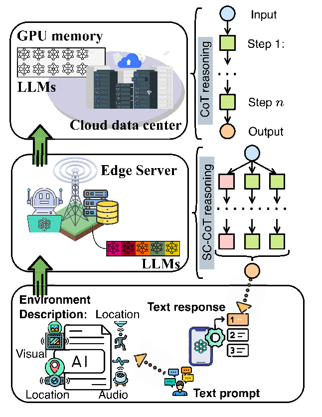
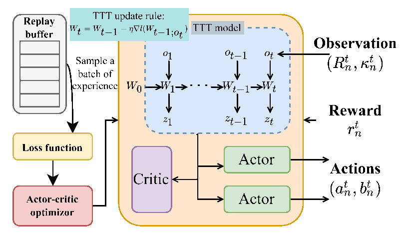
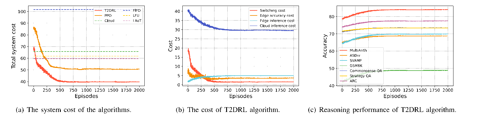
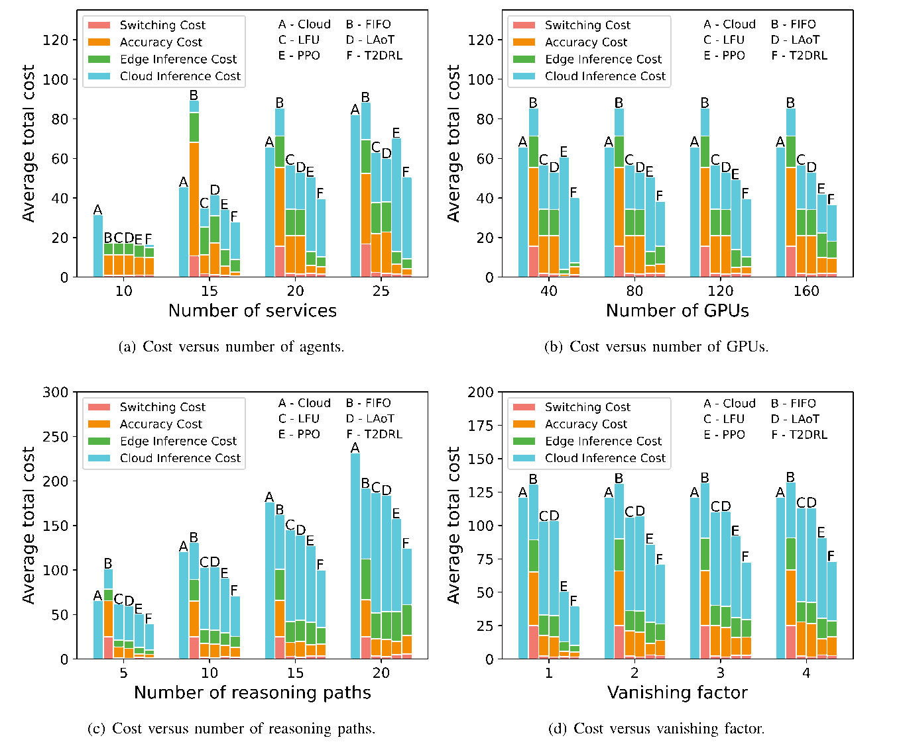
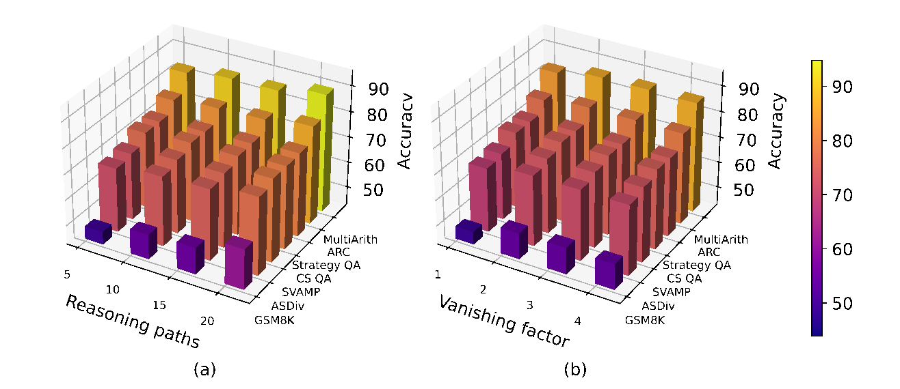
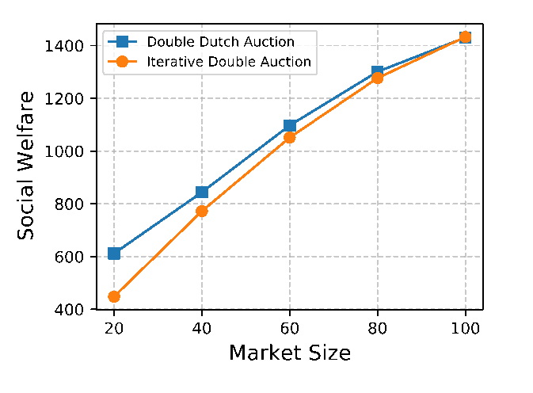

移动边缘长上下文大语言模型服务：基于测试时强化学习的模型缓存与推理卸载
Serving Long-Context LLMs at the Mobile Edge: Test-Time Reinforcement Learning-Based Model Caching and Inference Offloading
Minrui Xu · Dusit Niyato · Christopher G. Brinton
IEEE Transactions on Networking, Vol. 34, 2026 · 原 PDF 16 页
这是所附论文的完整中文译本，保留原结构、39 个编号公式、4 张表、6 幅图与 42 条参考文献。原 PDF 没有算法 1–4 伪代码；末尾四个教学流程由译者整理。
点“原文对照”可逐段核对；每段页码可打开原 PDF。术语可点击、悬停或用键盘聚焦查释义。译注与原文分开标识，数学疑点保留原式并说明条件。
Minrui Xu, Member, IEEE, Dusit Niyato, Fellow, IEEE, and Christopher G. Brinton, Senior Member, IEEE
Minrui Xu（IEEE 会员）、Dusit Niyato（IEEE 会士）、Christopher G. Brinton（IEEE 高级会员）
原 PDF p.1IEEE TRANSACTIONS ON NETWORKING, VOL. 34, 2026. Digital Object Identifier 10.1109/TON.2026.3669011
刊于 IEEE Transactions on Networking，第 34 卷，2026 年，本文页码 3808–3823。数字对象标识符（DOI）：10.1109/TON.2026.3669011。
原 PDF p.1Abstract
摘要
Large Language Models (LLMs) can perform zero-shot learning on unseen tasks and few-shot learning on complex reasoning tasks. However, resource-limited mobile edge networks struggle to support long-context LLM serving for LLM agents during multi-round interactions with users. Unlike stateless computation offloading and static service offloading in edge computing, optimizing LLM serving at edge servers is challenging because LLMs continuously learn from context which raises accuracy, latency, and resource consumption dynamics. In this paper, we propose a joint model caching and inference offloading framework that utilizes test-time deep reinforcement learning (T2DRL) to optimize deployment and execution strategies for long-context LLM serving. In this framework, we analyze the performance convergence and design an optimization problem considering the utilization of context windows in LLMs. Furthermore, the T2DRL algorithm can learn in both the training phase and the testing phase to proactively manage cached models and service requests and adapt to context changes and usage patterns during execution. To further enhance resource allocation efficiency, we propose a double Dutch auction (DDA) mechanism, which dynamically aligns the marginal value of an additional reasoning path with the marginal cost of reasoning services. Finally, experimental results demonstrate that the T2DRL algorithm can reduce system costs by at least 30% compared to baselines while guaranteeing the performance of LLM agents in real-world perception and reasoning tasks.
大语言模型Large Language Model (LLM)（大语言模型）：以大规模文本训练的语言模型。本文一个模型可支持多个智能体，模型集合与智能体集合不同。（Large Language Models，LLMs）能够在未见过的任务上进行零样本学习Zero-shot learning（零样本学习）：不提供当前任务示例时进行任务推理；式（14）的 κ=0 值与原文 α 基线需区分。，也能够在复杂推理任务上进行少样本学习Few-shot learning（少样本学习）：利用少量上下文示例处理任务；不能等同于永久修改模型参数。。然而，资源有限的移动边缘网络Mobile edge network（移动边缘网络）：在接近移动用户的边缘服务器与集中式云之间安排模型和请求的网络。难以在 LLM 智能体LLM agent（LLM 智能体）：由一个或多个 LLM 支撑的任务助手。本文按任务功能区分智能体，不与基础模型一一对应。与用户的多轮交互中支持长上下文 LLM 服务。与边缘计算中无状态的计算卸载和静态的服务卸载不同，边缘服务器Edge server (ES)（边缘服务器）：具有有限显存和计算/能量预算的服务节点；云索引为 0。上的 LLM 服务优化面临挑战：LLM 持续从上下文中学习，使准确率、时延和资源消耗随之动态变化。本文提出模型缓存Model caching（模型缓存）：将模型权重保留在 GPU 显存；缓存决策 a 为二元变量。与推理卸载Inference offloading（推理卸载）：把部分推理请求交给云端。本文 b 的定义却是本地执行比例，云端比例为 1−b。联合框架，利用测试时深度强化学习Test-time deep reinforcement learning (T2DRL)（测试时深度强化学习）：本文将 TTT 与 Actor–Critic/PPO 调度结合的方法。（test-time deep reinforcement learning，T2DRLTest-time deep reinforcement learning（T2DRL）：本文将 TTT 与强化学习调度结合的方法。）优化长上下文 LLM 服务的部署和执行策略。在该框架中，我们分析性能收敛，并构建考虑 LLM 上下文窗口Context window（上下文窗口）：模型一次可以处理、利用的词元范围上限。本文 w_m 表示其大小。利用情况的优化问题。此外，T2DRLTest-time deep reinforcement learning（T2DRL）：本文将 TTT 与强化学习调度结合的方法。 算法能够在训练阶段和测试阶段学习，从而主动管理缓存模型和服务请求，并在执行过程中适应上下文变化和使用模式。为进一步提高资源分配效率，我们提出双重荷兰式拍卖Double Dutch auction (DDA)（双重荷兰式拍卖）：同步降低买方时钟、提高卖方时钟以发现接受价格的双边交易机制。（Double Dutch Auction，DDA）机制，动态匹配增加一条推理路径所带来的边际价值与推理服务的边际成本。最后，实验结果表明：与基线相比，T2DRLTest-time deep reinforcement learning（T2DRL）：本文将 TTT 与强化学习调度结合的方法。 算法能够使系统成本至少降低 30%，同时保证 LLM 智能体LLM agent（LLM 智能体）：由一个或多个 LLM 支撑的任务助手。本文按任务功能区分智能体，不与基础模型一一对应。在真实感知和推理任务中的性能。
原 PDF p.1Index Terms—Mobile edge networks, large language models (LLMs), deep reinforcement learning (DRL), auction theory.
Received 15 January 2025; revised 22 September 2025 and 25 January 2026; accepted 20 February 2026; approved by IEEE TRANSACTIONS ON NETWORKING Editor J. Liu. Date of publication 27 February 2026; date of current version 6 March 2026. This work was supported in part by the Seatrium New Energy Laboratory, Singapore Ministry of Education (MOE) Tier 1 under Grant RT5/23 and Grant RG24/24; in part by Nanyang Technological University (NTU) Centre for Computational Technologies in Finance (NTU-CCTF); and in part by the Research Innovation and Enterprise (RIE) 2025 Industry Alignment Fund-Industry Collaboration Projects (IAF-ICP), administered by the Agency for Science, Technology and Research (A*STAR) under Award I2301E0026. The work of Christopher G. Brinton was supported in part by the National Science Foundation (NSF) under Grant CPS-2313109, in part by the Office of Naval Research (ONR) under Grant N00014-22-1-2305, and in part by the Air Force Office of Scientific Research (AFOSR) under Grant FA9550-24-1-0083. (Corresponding author: Minrui Xu.)
收稿日期：2025 年 1 月 15 日；修回日期：2025 年 9 月 22 日及 2026 年 1 月 25 日；录用日期：2026 年 2 月 20 日；由 IEEE Transactions on Networking 编辑 J. Liu 批准发表。在线发表日期：2026 年 2 月 27 日；当前版本日期：2026 年 3 月 6 日。本研究部分获得以下资助：Seatrium 新能源实验室及新加坡教育部（MOE）Tier 1 项目 RT5/23、RG24/24；南洋理工大学（NTU）金融计算技术中心（NTU-CCTF）；以及由新加坡科技研究局（A*STAR）管理的“研究、创新与企业（RIE）2025”产业对接基金—产业合作项目（IAF-ICP），资助编号 I2301E0026。Christopher G. Brinton 的工作部分获得美国国家科学基金会（NSF）项目 CPS-2313109、美国海军研究办公室（ONR）项目 N00014-22-1-2305，以及美国空军科学研究办公室（AFOSR）项目 FA9550-24-1-0083 的资助。（通信作者：Minrui Xu。）
原 PDF p.1Minrui Xu and Dusit Niyato are with the College of Computing and Data Science, Nanyang Technological University, Singapore 639798 (e-mail: minrui001@e.ntu.edu.sg; dniyato@ntu.edu.sg). Christopher G. Brinton is with the Elmore Family School of Electrical and Computer Engineering, Purdue University, West Lafayette, IN 47906 USA (e-mail: cgb@purdue.edu).
Minrui Xu 和 Dusit Niyato 任职于南洋理工大学计算与数据科学学院，新加坡 639798（电子邮件：minrui001@e.ntu.edu.sg；dniyato@ntu.edu.sg）。Christopher G. Brinton 任职于普渡大学 Elmore Family 电气与计算机工程学院，美国印第安纳州西拉法叶，邮编 47906（电子邮件：cgb@purdue.edu）。
原 PDF p.12998-4157 © 2026 IEEE. All rights reserved, including rights for text and data mining, and training of artificial intelligence and similar technologies. Personal use is permitted, but republication/redistribution requires IEEE permission. See https://www.ieee.org/publications/rights/index.html for more information. Authorized licensed use limited to: Northeastern University. Downloaded on September 13, 2026 at 13:16:12 UTC from IEEE Xplore. Restrictions apply.
2998-4157 © 2026 IEEE。保留所有权利，包括文本与数据挖掘，以及人工智能及类似技术训练方面的权利。允许个人使用；重新发表或再次分发须取得 IEEE 许可。详情参见 https://www.ieee.org/publications/rights/index.html。原 PDF 的授权使用提示：授权许可使用限于 Northeastern University；于 2026 年 9 月 13 日 13:16:12 UTC 从 IEEE Xplore 下载；适用相关限制。
原 PDF p.1I. INTRODUCTION
I. 引言
Large Language Models (LLMs) [1] have billions of parameters and demonstrate emerging capability through pre-training on internet-scale datasets. In mobile edge networks, LLMs can empower mobile devices to perceive environments and plan for future actions, for running LLM agents on devices and enabling zero-shot learning for unseen perception tasks and few-shot learning for complex reasoning tasks [2], [3]. For instance, LLMs can empower mobile devices with environmental understanding and reasoning capabilities, allowing them to adapt flexibly to changing conditions [4]. Furthermore, LLMs improve the experience of user interaction and achieve automation for mobile devices during the inference process by leveraging the contextual data derived from environmental perceptions and user interactions. However, optimizing long-context LLM serving in resource-constrained edge networks remains an open challenge [5] because existing offloading frameworks in mobile edge networks cannot accommodate LLMs’ in-context learning capability.
大语言模型Large Language Model (LLM)（大语言模型）：以大规模文本训练的语言模型。本文一个模型可支持多个智能体，模型集合与智能体集合不同。（LLMs）[1] 拥有数十亿个参数，经过互联网规模数据集的预训练后展现出涌现能力。在移动边缘网络Mobile edge network（移动边缘网络）：在接近移动用户的边缘服务器与集中式云之间安排模型和请求的网络。中，LLM 可以赋予移动设备感知环境、规划后续行动的能力，从而在设备上运行 LLM 智能体LLM agent（LLM 智能体）：由一个或多个 LLM 支撑的任务助手。本文按任务功能区分智能体，不与基础模型一一对应。，并对未见过的感知任务实现零样本学习Zero-shot learning（零样本学习）：不提供当前任务示例时进行任务推理；式（14）的 κ=0 值与原文 α 基线需区分。、对复杂推理任务实现少样本学习Few-shot learning（少样本学习）：利用少量上下文示例处理任务；不能等同于永久修改模型参数。 [2]、[3]。例如，LLM 能够为移动设备提供环境理解与推理能力，使其灵活适应不断变化的条件 [4]。此外，在推理过程中，LLM 可以利用来自环境感知和用户交互的上下文数据，改善用户交互体验并实现移动设备自动化。然而，在资源受限的边缘网络中优化长上下文 LLM 服务仍是一项尚未解决的挑战 [5]，因为移动边缘网络Mobile edge network（移动边缘网络）：在接近移动用户的边缘服务器与集中式云之间安排模型和请求的网络。现有的卸载框架无法适应 LLM 的上下文学习能力。
原 PDF p.1
Fig. 1. Serving LLMs to handle inputs and tackle complex tasks using CoT prompting in mobile edge networks.
图 1. 在移动边缘网络Mobile edge network（移动边缘网络）：在接近移动用户的边缘服务器与集中式云之间安排模型和请求的网络。中，利用思维链Chain-of-Thought (CoT)（思维链）：通过中间推理步骤解决任务的提示/推理方式。（CoT）提示提供 LLM 服务，以处理输入并解决复杂任务。
原 PDF p.1As illustrated in Fig. 1, resource-intensive tasks such as LLM serving, i.e., the deployment and inference of LLMs to perform inference tasks, in mobile edge networks [5], often need to be offloaded to edge servers (ESs) or cloud data centers to reduce latency and improve resource utilization efficiency [6]. Due to the unique context-aware characteristics of LLMs that they can learn in-context examples during few-shot learning [2], LLM serving at ESs is significantly different from computation and service offloading [7], [8]. Specifically, computation offloading involves transferring computation-intensive tasks from local devices to ESs or a cloud data center [9], which is stateless and independent of previous computation outcomes or the historical results of the servers. Similarly, service offloading involves sending user inputs to ESs to invoke pre-cached services [10], which is static and remains unchanged across different invocations. As a result, existing optimization frameworks for computation offloading and service offloading are no longer effective for optimizing long-context LLM serving, as they fail to accommodate the dynamic learning capabilities of LLMs and the need for service adaptation based on evolving model contexts.
如图 1 所示，移动边缘网络Mobile edge network（移动边缘网络）：在接近移动用户的边缘服务器与集中式云之间安排模型和请求的网络。中的资源密集型任务，例如 LLM 服务——即部署 LLM 并执行其推理任务 [5]——通常需要卸载至边缘服务器Edge server (ES)（边缘服务器）：具有有限显存和计算/能量预算的服务节点；云索引为 0。（edge servers，ESs）或云数据中心，以降低时延并提高资源利用效率 [6]。由于 LLM 具有独特的上下文感知特性，能够在少样本学习Few-shot learning（少样本学习）：利用少量上下文示例处理任务；不能等同于永久修改模型参数。过程中从上下文内示例中学习 [2]，因此 ES 上的 LLM 服务与计算卸载及服务卸载有显著区别 [7]、[8]。具体而言，计算卸载是把计算密集型任务从本地设备转移到 ES 或云数据中心 [9]；它是无状态的，不依赖先前的计算输出或服务器的历史结果。同样，服务卸载是把用户输入发送到 ES，调用预先缓存的服务 [10]；该服务是静态的，在不同调用之间保持不变。因此，现有计算卸载和服务卸载优化框架无法有效优化长上下文 LLM 服务，因为它们无法适应 LLM 的动态学习能力，也无法满足根据持续演化的模型上下文调整服务的需要。
原 PDF p.1Similar to content and service caching, model caching for LLMs is an emerging solution for provisioning LLM agents at ESs [11], [12]. Specifically, LLMs can learn from input examples and adjust the output by eliciting their reasoning capability via prompting techniques, such as Chain-of-Thought (CoT) [13] and Self-Consistent CoT [14] prompting. These methods improve accuracy, but they also increase resource consumption and latency. The performance of an LLM agent is limited not only by the hardware resources available at edge servers but also by the model’s context window, which is determined by the architecture. If the generated tokens exceed this window, the cached model must be evicted; otherwise, performance declines sharply. To optimize long-context LLM serving in mobile edge networks, cached models and inference requests must be actively managed in response to the state transitions of requests and cached models.
与内容缓存和服务缓存类似，LLM 模型缓存Model caching（模型缓存）：将模型权重保留在 GPU 显存；缓存决策 a 为二元变量。是一种新兴方案，可用于在 ES 上提供 LLM 智能体LLM agent（LLM 智能体）：由一个或多个 LLM 支撑的任务助手。本文按任务功能区分智能体，不与基础模型一一对应。 [11]、[12]。具体而言，LLM 能够从输入示例中学习，并通过提示技术激发其推理能力来调整输出，例如思维链Chain-of-Thought (CoT)（思维链）：通过中间推理步骤解决任务的提示/推理方式。（Chain-of-Thought，CoT）提示 [13] 和自洽思维链Self-Consistency CoT (SC-CoT)（自洽思维链）：采样多条思维链，对其最终答案进行一致性聚合。多路径不自动代表独立正确。（Self-Consistent CoT）提示 [14]。这些方法提高了准确率，同时也增加了资源消耗和时延。LLM 智能体LLM agent（LLM 智能体）：由一个或多个 LLM 支撑的任务助手。本文按任务功能区分智能体，不与基础模型一一对应。的性能不仅受边缘服务器Edge server (ES)（边缘服务器）：具有有限显存和计算/能量预算的服务节点；云索引为 0。可用硬件资源限制，还受由模型架构决定的上下文窗口Context window（上下文窗口）：模型一次可以处理、利用的词元范围上限。本文 w_m 表示其大小。限制。如果生成的 词元Token（词元）：模型处理的文本基本单位，并不恒等于一个汉字或英文单词。 数超出该窗口，就必须驱逐缓存模型；否则，性能会急剧下降。为了优化移动边缘网络Mobile edge network（移动边缘网络）：在接近移动用户的边缘服务器与集中式云之间安排模型和请求的网络。中的长上下文 LLM 服务，必须根据请求及缓存模型的状态转移，主动管理缓存模型和推理请求。
原 PDF p.2In this paper, we propose a joint model caching and inference offloading framework for long-context LLM serving in mobile edge networks, which allows LLMs to adopt various prompting techniques. In this framework, we formulate the problem of long-context LLM serving as a mixed-integer programming problem to minimize the system cost under the hardware resource constraints and context window constraints. To evaluate the performance of LLMs theoretically, we analyze the convergence rate of language ambiguity with respect to the reasoning paths and steps. To obtain optimal cache and inference management strategies, we propose a test-time deep reinforcement learning (T2DRL) algorithm [15], [16] utilizing test-time training (TTT) models as the actor-critic network that can learn not only from historical experience during training but also from real-time interaction during testing. By treating the hidden state as a learnable model, the TTT model-based policy can be updated through self-supervised learning during test time, which overcomes the limited expressive power in Long Short-Term Memory (LSTM) networks and the quadratic complexity of attention mechanisms. Building on the T2DRL optimization results, we cast long-context LLM serving as a two-sided market and employ a Double Dutch Auction (DDA) to allocate edge compute and cache efficiently. The mechanism runs synchronized buyer and seller clocks that post a common price; requests claim units while their estimated marginal accuracy gain exceeds the price, and servers release capacity when their marginal cost is covered. This procedure aligns supply with demand in real time, clears at a uniform price, and reduces strategic overhead, which yields low-latency and cost-effective allocations. It scales across heterogeneous edge servers and directs additional compute to prompts that benefit most from multi-path reasoning, thereby improving social welfare while preserving transparency.
本文提出面向移动边缘网络Mobile edge network（移动边缘网络）：在接近移动用户的边缘服务器与集中式云之间安排模型和请求的网络。长上下文 LLM 服务的模型缓存Model caching（模型缓存）：将模型权重保留在 GPU 显存；缓存决策 a 为二元变量。与推理卸载Inference offloading（推理卸载）：把部分推理请求交给云端。本文 b 的定义却是本地执行比例，云端比例为 1−b。联合框架，允许 LLM 采用多种提示技术。在该框架中，我们将长上下文 LLM 服务问题表述为混合整数规划问题，在硬件资源约束与上下文窗口Context window（上下文窗口）：模型一次可以处理、利用的词元范围上限。本文 w_m 表示其大小。约束下最小化系统成本。为从理论上评估 LLM 性能，我们分析语言歧义Ambiguity（歧义）：原文以概率量 ε 描述上下文/意图的不确定性；定义与假设的具体写法有冲突，需核对。随推理路径数与推理步数变化的收敛速率。为获得最优缓存与推理管理策略，我们提出测试时深度强化学习Test-time deep reinforcement learning (T2DRL)（测试时深度强化学习）：本文将 TTT 与 Actor–Critic/PPO 调度结合的方法。（T2DRLTest-time deep reinforcement learning（T2DRL）：本文将 TTT 与强化学习调度结合的方法。）算法 [15]、[16]，以测试时训练Test-time training (TTT)（测试时训练）：测试阶段用自监督损失更新内部学习器权重 W。本文用于调度策略表示。（test-time training，TTTTest-time training（TTT）：测试阶段用自监督损失更新内部学习器。）模型构建行动者—评论家（actor–critic）网络，使其既能在训练时从历史经验中学习，也能在测试时从实时交互中学习。通过将隐藏状态视为可学习的模型，基于 TTTTest-time training（TTT）：测试阶段用自监督损失更新内部学习器。 模型的策略可在测试时通过自监督学习更新，从而克服长短期记忆（Long Short-Term Memory，LSTM）网络表达能力有限以及注意力机制具有平方复杂度的问题。在 T2DRLTest-time deep reinforcement learning（T2DRL）：本文将 TTT 与强化学习调度结合的方法。 优化结果的基础上，我们把长上下文 LLM 服务建模为双边市场，并采用双重荷兰式拍卖Double Dutch auction (DDA)（双重荷兰式拍卖）：同步降低买方时钟、提高卖方时钟以发现接受价格的双边交易机制。（DDA）高效分配边缘计算和缓存资源。该机制运行同步的买方与卖方价格时钟，公布共同价格；当请求预估的边际准确率收益超过该价格时，请求方认购资源单位；当服务器的边际成本得到覆盖时，服务器释放容量。该过程实时匹配供需、按统一价格结算并降低策略性开销，从而实现低时延且具有成本效益的资源分配。它能够扩展至异构边缘服务器Edge server (ES)（边缘服务器）：具有有限显存和计算/能量预算的服务节点；云索引为 0。，并把额外计算资源分配给最能从多路径推理中受益的提示，在保持透明性的同时提高社会福利Social welfare（社会福利）：参与者效用与拍卖人盈余之和；在准线性效用下等于成交真实价值减真实成本。。
原 PDF p.2The main contributions can be summarized as follows.
主要贡献概括如下。
原 PDF p.2For long-context LLM serving in mobile edge networks, we propose a joint model caching and inference offloading framework that adapts to dynamic network conditions and device capabilities.
In the framework, we analyze the convergence rate of LLMs handling contexts with CoT prompting. This approach enhances the reasoning and planning capability of LLMs by generating intermediate reasoning thoughts with additional latency and resources.
在该框架中，分析 LLM 利用 CoT 提示处理上下文时的收敛速率。这种方法通过生成中间推理思维片段来增强 LLM 的推理和规划能力，代价是额外的时延和资源消耗。
原 PDF p.2Furthermore, we model a long-term optimization problem to minimize total system costs in terms of edge inference cost at ESs and the cloud inference cost of the cloud data center. We formulate this long-context LLM serving problem as a Markov decision process (MDP) where model caching and inference offloading decisions can affect the transition of states.
进一步构建长期优化问题，以 ES 上的边缘推理成本和云数据中心的云推理成本衡量并最小化系统总成本。将该长上下文 LLM 服务问题表述为马尔可夫决策过程Markov decision process (MDP)（马尔可夫决策过程）：把调度表述为状态/观测、动作、转移和奖励；观测是否充分需另有条件。（Markov decision process，MDP），其中模型缓存Model caching（模型缓存）：将模型权重保留在 GPU 显存；缓存决策 a 为二元变量。和推理卸载Inference offloading（推理卸载）：把部分推理请求交给云端。本文 b 的定义却是本地执行比例，云端比例为 1−b。决策会影响状态转移。
原 PDF p.2We introduce a Double Dutch Auction mechanism to allocate LLM services with a uniform price per batch, supports multi-unit adaptation within the latency budget, and complements test-time scaling by allocating more paths exactly when the observed self-consistency signals indicate larger accuracy gains.
引入双重荷兰式拍卖Double Dutch auction (DDA)（双重荷兰式拍卖）：同步降低买方时钟、提高卖方时钟以发现接受价格的双边交易机制。机制，按每批次统一价格分配 LLM 服务，在时延预算内支持多单位适应性分配；当观测到的自洽性信号表明可获得更大准确率收益时，分配更多推理路径，从而补充测试时扩展。
原 PDF p.2To achieve a proactive cached model and inference management, we propose a test-time deep reinforcement learning algorithm that learns optimal model caching strategies with a test-time training model-based actor-critic network. This algorithm can adjust to the dynamic requests and contexts during the testing phase, balancing performance with computational efficiency.
为实现主动的缓存模型与推理管理，提出测试时深度强化学习Test-time deep reinforcement learning (T2DRL)（测试时深度强化学习）：本文将 TTT 与 Actor–Critic/PPO 调度结合的方法。算法，通过基于测试时训练Test-time training (TTT)（测试时训练）：测试阶段用自监督损失更新内部学习器权重 W。本文用于调度策略表示。模型的行动者—评论家网络学习最优模型缓存Model caching（模型缓存）：将模型权重保留在 GPU 显存；缓存决策 a 为二元变量。策略。该算法能够在测试阶段适应动态请求与上下文，兼顾性能和计算效率。
原 PDF p.2The remainder of this paper is organized as follows. Section II reviews related work on serving LLMs in mobile edge networks, caching strategies, and reinforcement learning approaches. Section III introduces the system model and problem formulation. Section IV details the proposed T2DRL algorithm and its optimization process. Section V formalizes this market and describes the auction dynamics and guarantees. Section VI presents experimental results and performance evaluations. Finally, Section VII concludes the paper and outlines future research directions.
本文其余部分安排如下。第 II 节回顾移动边缘网络Mobile edge network（移动边缘网络）：在接近移动用户的边缘服务器与集中式云之间安排模型和请求的网络。中的 LLM 服务、缓存策略和强化学习方法的相关研究。第 III 节介绍系统模型与问题表述。第 IV 节详述所提出的 T2DRLTest-time deep reinforcement learning（T2DRL）：本文将 TTT 与强化学习调度结合的方法。 算法及其优化过程。第 V 节给出市场的形式化表述，并描述拍卖动态与性质保证。第 VI 节给出实验结果与性能评估。最后，第 VII 节总结全文并指出未来研究方向。
原 PDF p.2TABLE I. Comparison Against Prior Work With a Concise Allocation Mechanism Summary
表 I 与既有工作的比较及简明资源分配机制概述
原 PDF p.3Test-time adaptation
| Method | Test-time DRL | Generic test-time adaptation |
|---|---|---|
| Objective | Minimize serving cost by combining accuracy, latency, switching, and compute | Reduce predictive loss on test data |
| What adapts | Policy over caching and offloading | Model or hidden state parameters |
| Output | Dynamic actions for each request step | Static parameters based on statistics |
| State | Request mix, cache state, age of thought, and other serving signals | Input features and activation statistics |
| Resource awareness | Explicit constraints and costs | Usually indirect or absent |
Allocation mechanism
| Method | Double Dutch auction | Iterative double auction |
|---|---|---|
| Price discovery | Synchronized buyer and seller clocks: agents stop at value or cost; aggregates demand and supply | One side updates per round; sequential bid/ask updates |
| Clearing rule | Uniform clearing price from terminal clocks; optional weighted last clock; strong budget balance | Clears when spread closes or by rule; prices vary by round or pair |
| Incentives and rationality | Truthful stopping is weakly dominant; individually rational; near competitive equilibrium | Truthfulness not guaranteed; properties depend on protocol |
| Multi-unit and dynamics | Incremental quantities; stop when marginal value falls below price; adapts within a round | Sequential quantity updates; limited intra-round adaptation |
| Operational latency | Low overhead via tunable step size; frequent clears reduce queueing | May require many rounds to clear |
| Fit to Test-time Scaling | Buyer value ties to marginal accuracy per path, seller cost reflects compute and cache | Not tailored to marginal accuracy pricing; extra logic for CoT |
测试时适应
| 方法 | 测试时深度强化学习Test-time deep reinforcement learning (T2DRL)（测试时深度强化学习）：本文将 TTT 与 Actor–Critic/PPO 调度结合的方法。（DRL） | 一般测试时适应 |
|---|---|---|
| 目标 | 综合准确率、时延、切换和计算，最小化服务成本 | 减小测试数据上的预测损失 |
| 适应的对象 | 控制缓存与卸载的策略 | 模型参数或隐藏状态参数 |
| 输出 | 每个请求步骤对应的动态动作 | 基于统计量得到的静态参数 |
| 状态 | 请求组成、缓存状态、思维年龄Age of Thought (AoT)（思维年龄）：本文自定义上下文指标 κ，累积有效贡献并减去消逝量，不是通常的时间年龄。及其他服务信号 | 输入特征与激活统计量 |
| 资源感知 | 显式约束与成本 | 通常是间接的，或未体现 |
资源分配机制
| 方法 | 双重荷兰式拍卖Double Dutch auction (DDA)（双重荷兰式拍卖）：同步降低买方时钟、提高卖方时钟以发现接受价格的双边交易机制。（DDA） | 迭代式双向拍卖Iterative double auction (IDA)（迭代式双向拍卖）：作为市场层比较基线的迭代报价/要价更新机制。 |
|---|---|---|
| 价格发现 | 同步运行买方和卖方价格时钟；参与者在价格达到自身价值或成本时停止；汇总需求和供给 | 每轮更新一侧；依次更新买入报价和卖出要价 |
| 出清规则 | 由最终时钟价格确定统一出清价格；可选用加权最终时钟；强预算平衡Budget balance（预算平衡）：强预算平衡要求收支完全相等；弱预算平衡只要求不产生赤字。 | 价差收拢时或按指定规则出清；价格随轮次或交易对变化 |
| 激励与理性 | 如实停止是弱占优策略；满足个体理性Individual rationality (IR)（个体理性）：如实参与者成交后的效用不为负，落败者效用为零。；接近竞争均衡 | 不保证真实性；性质取决于协议 |
| 多单位与动态性 | 逐步增加交易数量；边际价值低于价格时停止；可在一轮内部适应 | 依次更新数量；轮内适应能力有限 |
| 运行时延 | 步长可调，开销低；频繁出清可减少排队 | 可能需要很多轮才能出清 |
| 与测试时计算扩展的适配 | 买方价值关联每条路径的边际准确率，卖方成本反映计算与缓存 | 未针对边际准确率定价；CoT 需要额外逻辑 |
III. SYSTEM MODEL
III. 系统模型
In mobile edge networks, users can access LLM agents to answer questions or handle complex tasks autonomously for them. Each LLM agent is empowered by one or multiple LLMs. Every user group engages a single LLM agent as their active assistant based on their specific needs and tasks. The network comprises $N+1$ LLM agent providers, including $N$ ESs equipped with computing units and a centralized cloud data center. The set of LLM agent providers is denoted by $\mathcal N=\{0,1,\ldots,N\}$ and the cloud data center by $0$. These ESs can execute LLM agents, while additional inference requests can be offloaded to the cloud data center. The set of available LLM agents is represented as $\mathcal I=\{1,2,\ldots,I\}$, which relies on one or multiple LLMs whose set is denoted by $\mathcal M=\{1,\ldots,M\}$. Given the multi-functionality of LLMs in providing various LLM agents, it is typically observed that the number of LLM agents, $I$, is significantly more than the number of LLMs, i.e., $I\gg M$. For each user group $U_n$ associated with ES $n$, the demand for LLM agents is represented by $R^t_n=\{R^t_{n,i,m}\mid i\in\mathcal I,m\in\mathcal M\}$, which presents the number of requests for LLM $m$ to perform specific tasks. The input data size for LLM agent $i$ is denoted by $d_i$, and the configuration of each LLM $m$ includes model size $s_m$, computation required per token $e_m$, and context window size $w_m$. The context window size is a unique characteristic of LLMs, which refers to the maximum number of tokens that an LLM can effectively process and utilize in long-term inference tasks. The main notations used in this paper are listed in TABLE II.
在移动边缘网络Mobile edge network（移动边缘网络）：在接近移动用户的边缘服务器与集中式云之间安排模型和请求的网络。中，用户可以访问 LLM 智能体LLM agent（LLM 智能体）：由一个或多个 LLM 支撑的任务助手。本文按任务功能区分智能体，不与基础模型一一对应。，让它们回答问题或自主处理复杂任务。每个 LLM 智能体LLM agent（LLM 智能体）：由一个或多个 LLM 支撑的任务助手。本文按任务功能区分智能体，不与基础模型一一对应。由一个或多个 LLM 支撑。各用户组根据自身的具体需求和任务，选用一个 LLM 智能体LLM agent（LLM 智能体）：由一个或多个 LLM 支撑的任务助手。本文按任务功能区分智能体，不与基础模型一一对应。作为当前使用的助手。网络包含 $N+1$ 个 LLM 智能体LLM agent（LLM 智能体）：由一个或多个 LLM 支撑的任务助手。本文按任务功能区分智能体，不与基础模型一一对应。提供者，包括 $N$ 台配有计算单元的边缘服务器Edge server (ES)（边缘服务器）：具有有限显存和计算/能量预算的服务节点；云索引为 0。（ES）和一个集中式云数据中心。LLM 智能体LLM agent（LLM 智能体）：由一个或多个 LLM 支撑的任务助手。本文按任务功能区分智能体，不与基础模型一一对应。提供者集合记为 $\mathcal N=\{0,1,\ldots,N\}$，其中 $0$ 表示云数据中心。ES 可以执行 LLM 智能体LLM agent（LLM 智能体）：由一个或多个 LLM 支撑的任务助手。本文按任务功能区分智能体，不与基础模型一一对应。，其余推理请求则可卸载至云数据中心。可用 LLM 智能体LLM agent（LLM 智能体）：由一个或多个 LLM 支撑的任务助手。本文按任务功能区分智能体，不与基础模型一一对应。集合表示为 $\mathcal I=\{1,2,\ldots,I\}$；它们依赖一个或多个 LLM，相应模型集合记为 $\mathcal M=\{1,\ldots,M\}$。由于 LLM 能够支持多种功能不同的智能体，通常 LLM 智能体LLM agent（LLM 智能体）：由一个或多个 LLM 支撑的任务助手。本文按任务功能区分智能体，不与基础模型一一对应。数量 $I$ 远多于 LLM 数量，即 $I\gg M$。对于与 ES $n$ 关联的每个用户组 $U_n$，其 LLM 智能体LLM agent（LLM 智能体）：由一个或多个 LLM 支撑的任务助手。本文按任务功能区分智能体，不与基础模型一一对应。需求表示为 $R^t_n=\{R^t_{n,i,m}\mid i\in\mathcal I,m\in\mathcal M\}$，它给出了请求 LLM $m$ 执行特定任务的数量。LLM 智能体LLM agent（LLM 智能体）：由一个或多个 LLM 支撑的任务助手。本文按任务功能区分智能体，不与基础模型一一对应。 $i$ 的输入数据规模记为 $d_i$；每个 LLM $m$ 的配置包括模型大小 $s_m$、每个词元Token（词元）：模型处理的文本基本单位，并不恒等于一个汉字或英文单词。所需的计算量 $e_m$ 以及上下文窗口Context window（上下文窗口）：模型一次可以处理、利用的词元范围上限。本文 w_m 表示其大小。大小 $w_m$。上下文窗口Context window（上下文窗口）：模型一次可以处理、利用的词元范围上限。本文 w_m 表示其大小。大小是 LLM 的独有特征，指在长期推理任务中，LLM 能够有效处理和利用的最大词元Token（词元）：模型处理的文本基本单位，并不恒等于一个汉字或英文单词。数。本文的主要符号列于表 II。
原 PDF p.4TABLE II. Main Notations in the Paper
表 II 本文主要符号
原 PDF p.4| Symbol | Description |
|---|---|
| $\mathcal N$ | Set of LLM agent providers: $0$ denotes the cloud data center and $n\in\mathcal N$ denotes an ES. |
| $\mathcal I$ | Set of LLM agents; $i\in\mathcal I$. |
| $\mathcal M$ | Set of LLMs; $m\in\mathcal M$. |
| $t$ | Discrete time slot. |
| $U_n$ | User group attached to ES $n$. |
| $R^t_{n,i,m}$ | Requests from $U_n$ that require model $m$ for agent $i$ in slot $t$ [requests per slot]. |
| $d_i$ | Input size for agent $i$ [tokens]. |
| $s_m$ | GPU memory footprint of model $m$ [GB]. |
| $e_m$ | Energy per token for model $m$. |
| $w_m$ | Context window size of model $m$ [tokens]. |
| $G_n$ | GPU memory capacity at ES $n$ [GB]. |
| $E_n$ | Energy capacity at ES $n$. |
| $f_n$ | Computing capacity of ES $n$. |
| $a^t_{n,i,m}$ | Caching indicator for model $m$ used by agent $i$ at ES $n$ in slot $t$: $a^t_{n,i,m}\in\{0,1\}$. |
| $b^t_{n,i,m}$ | Fraction of $(n,i,m)$ requests executed locally at ES $n$ in slot $t$: $b^t_{n,i,m}\in[0,1]$. |
| $s_t$ | System state at time $t$. |
| $a_t$ | Joint action at time $t$. |
| $r_t$ | Reward at time $t$ defined as the negative of the total system cost. |
| $\pi_n$ | Control policy for ES $n$. |
| $c^*$ | True context in the ambiguity analysis. |
| $\theta^*$ | True intention in the ambiguity analysis. |
| $E_i$ | Chain-of-thought example for instance $i$. |
| $\epsilon(E_i)$ | Ambiguity measure of $E_i$ with $\epsilon(E_i)\in[0,\sigma]$, $\sigma\in(0,\frac12]$. |
| $\hat q(\cdot)$ | Model-induced probability measure used in the analysis. |
| $J_{i,m}$ | Number of SC-CoT reasoning paths sampled for instance $i$ with model $m$. |
| $\rho_j$ | The $j$th reasoning path. |
| $o_j$ | Output produced by path $j$. |
| $o^*$ | Final answer selected by majority vote over $\{o_j\}_{j=1}^{J_{i,m}}$. |
| $\mathbb I[\cdot]$ | Indicator function. |
| $K^t_{n,i,m}$ | Accumulated number of thoughts for $(n,i,m)$ at time $t$. |
| $\kappa^t_{n,i,m}$ | Age of thoughts for $(n,i,m)$ at time $t$. |
| $\zeta_i$ | Consensus factor for SC-CoT reasoning of agent $i$. |
| $\Delta^t_{i,m}$ | Vanishing factor of thoughts for $(i,m)$ at time $t$. |
| $\alpha_{i,m}$ | Zero-shot accuracy of model $m$ for agent $i$. |
| $\beta$ | Reasoning gain factor for self-consistency. |
| $A^t_{n,i,m}$ | Accuracy term used in the performance model. |
| $L^t_n$ | Edge inference cost of ES $n$ in slot $t$. |
| $L^t_C$ | Cloud inference cost in slot $t$. |
| $L_n^{\mathrm{total}}$ | Time-averaged total cost for ES $n$. |
| 符号 | 含义 |
|---|---|
| $\mathcal N$ | LLM 智能体LLM agent（LLM 智能体）：由一个或多个 LLM 支撑的任务助手。本文按任务功能区分智能体，不与基础模型一一对应。提供者集合：$0$ 表示云数据中心，$n\in\mathcal N$ 表示边缘服务器Edge server (ES)（边缘服务器）：具有有限显存和计算/能量预算的服务节点；云索引为 0。（ES）。 |
| $\mathcal I$ | LLM 智能体LLM agent（LLM 智能体）：由一个或多个 LLM 支撑的任务助手。本文按任务功能区分智能体，不与基础模型一一对应。集合；$i\in\mathcal I$。 |
| $\mathcal M$ | LLM 集合；$m\in\mathcal M$。 |
| $t$ | 离散时隙。 |
| $U_n$ | 接入 ES $n$ 的用户组。 |
| $R^t_{n,i,m}$ | 时隙 $t$ 内，$U_n$ 中智能体 $i$ 需要模型 $m$ 处理的请求量［请求数/时隙］。 |
| $d_i$ | 智能体 $i$ 的输入规模［词元Token（词元）：模型处理的文本基本单位，并不恒等于一个汉字或英文单词。］。 |
| $s_m$ | 模型 $m$ 的 GPU 显存占用［GB］。 |
| $e_m$ | 模型 $m$ 每个词元Token（词元）：模型处理的文本基本单位，并不恒等于一个汉字或英文单词。的能耗。 |
| $w_m$ | 模型 $m$ 的上下文窗口Context window（上下文窗口）：模型一次可以处理、利用的词元范围上限。本文 w_m 表示其大小。大小［词元Token（词元）：模型处理的文本基本单位，并不恒等于一个汉字或英文单词。］。 |
| $G_n$ | ES $n$ 的 GPU 显存容量［GB］。 |
| $E_n$ | ES $n$ 的能量容量。 |
| $f_n$ | ES $n$ 的计算能力。 |
| $a^t_{n,i,m}$ | 时隙 $t$ 内，ES $n$ 是否缓存智能体 $i$ 使用的模型 $m$ 的指示变量：$a^t_{n,i,m}\in\{0,1\}$。 |
| $b^t_{n,i,m}$ | 时隙 $t$ 内，$(n,i,m)$ 请求在 ES $n$ 本地执行的比例：$b^t_{n,i,m}\in[0,1]$。 |
| $s_t$ | 时刻 $t$ 的系统状态。 |
| $a_t$ | 时刻 $t$ 的联合动作。 |
| $r_t$ | 时刻 $t$ 的奖励，定义为总系统成本的相反数。 |
| $\pi_n$ | ES $n$ 的控制策略。 |
| $c^*$ | 歧义Ambiguity（歧义）：原文以概率量 ε 描述上下文/意图的不确定性；定义与假设的具体写法有冲突，需核对。分析中的真实上下文。 |
| $\theta^*$ | 歧义Ambiguity（歧义）：原文以概率量 ε 描述上下文/意图的不确定性；定义与假设的具体写法有冲突，需核对。分析中的真实意图。 |
| $E_i$ | 实例 $i$ 的思维链Chain-of-Thought (CoT)（思维链）：通过中间推理步骤解决任务的提示/推理方式。示例。 |
| $\epsilon(E_i)$ | $E_i$ 的歧义Ambiguity（歧义）：原文以概率量 ε 描述上下文/意图的不确定性；定义与假设的具体写法有冲突，需核对。度量，其中 $\epsilon(E_i)\in[0,\sigma]$，$\sigma\in(0,\frac12]$。 |
| $\hat q(\cdot)$ | 分析中使用的、由模型诱导的概率测度。 |
| $J_{i,m}$ | 实例 $i$ 使用模型 $m$ 时采样的 SC-CoTSelf-Consistency CoT（SC-CoT）：采样多条思维链，对最终答案进行多数投票。 推理路径数。 |
| $\rho_j$ | 第 $j$ 条推理路径。 |
| $o_j$ | 第 $j$ 条路径产生的输出。 |
| $o^*$ | 对 $\{o_j\}_{j=1}^{J_{i,m}}$ 进行多数投票后选出的最终答案。 |
| $\mathbb I[\cdot]$ | 指示函数。 |
| $K^t_{n,i,m}$ | 时刻 $t$ 时 $(n,i,m)$ 的累积思维片段数。 |
| $\kappa^t_{n,i,m}$ | 时刻 $t$ 时 $(n,i,m)$ 的思维年龄Age of Thought (AoT)（思维年龄）：本文自定义上下文指标 κ，累积有效贡献并减去消逝量，不是通常的时间年龄。（AoTAge of Thought（AoT）：本文以 κ 表示的有效上下文指标。）。 |
| $\zeta_i$ | 智能体 $i$ 进行 SC-CoTSelf-Consistency CoT（SC-CoT）：采样多条思维链，对最终答案进行多数投票。 推理的共识因子Consensus factor（共识因子）：式（13）的 ζ，用于加权新生成思维贡献；与单纯路径数量不同。。 |
| $\Delta^t_{i,m}$ | 时刻 $t$ 时 $(i,m)$ 的思维片段消逝因子Vanishing factor（消逝因子）：式（13）中被减去的 Δ；在其他项固定时增大它会降低 κ。。 |
| $\alpha_{i,m}$ | 模型 $m$ 对智能体 $i$ 的零样本准确率。 |
| $\beta$ | 自洽推理的增益因子。 |
| $A^t_{n,i,m}$ | 性能模型中使用的准确率项。 |
| $L^t_n$ | 时隙 $t$ 内 ES $n$ 的边缘推理成本。 |
| $L^t_C$ | 时隙 $t$ 内的云端推理成本。 |
| $L_n^{\mathrm{total}}$ | ES $n$ 的时间平均总成本。 |
A. Network Model
A. 网络模型
To optimize the serving of LLMs in mobile edge networks, we propose a joint model caching and inference framework that enables ESs to deploy LLMs for local execution and offload inference requests to cloud data centers for remote execution. In the framework, ESs can determine the cached models and offloaded requests based on their local caching and offloading strategies. Here, the binary variable $a^t_{n,i,m}\in\{0,1\}$ specifies if LLM $m$ for agent $i$ is cached at ES $n$ during time slot $t$, and the continuous variable $b^t_{n,i,m}\in[0,1]$ indicates the fraction of inference requests $i$ for LLM $m$ being executed at ES $n$ at that time slot. The set $a^t_n=\{a^t_{n,1,1},\ldots,a^t_{n,I,M}\}$ encapsulates the model caching decisions at ES $n$. Similarly, the inference offloading decision for ES $n$ is captured by $b^t_n=\{b^t_{n,1,1},\ldots,b^t_{n,I,M}\}$. Storage, switching, and compute costs scale with the model's weight footprint $s_m(q_m)$. To capture cloud heterogeneity, we additionally index offloading cost by GPU type $g\in\mathcal G$ with distinct price and performance, and we account for cold starts and egress. Switching cost is proportional to the bytes moved over node I/O paths rather than a constant penalty [9]. These refinements retain the original learning formulation while improving cost realism.
为优化移动边缘网络Mobile edge network（移动边缘网络）：在接近移动用户的边缘服务器与集中式云之间安排模型和请求的网络。中的 LLM 服务，我们提出联合模型缓存Model caching（模型缓存）：将模型权重保留在 GPU 显存；缓存决策 a 为二元变量。与推理框架，使 ES 能够部署 LLM 进行本地执行，并将推理请求卸载至云数据中心进行远程执行。在此框架中，ES 根据其本地缓存与卸载策略，决定缓存哪些模型以及卸载哪些请求。其中，二元变量 $a^t_{n,i,m}\in\{0,1\}$ 表示时隙 $t$ 内，ES $n$ 是否缓存智能体 $i$ 所需的 LLM $m$；连续变量 $b^t_{n,i,m}\in[0,1]$ 表示该时隙内，智能体 $i$ 对 LLM $m$ 的推理请求在 ES $n$ 上执行的比例。集合 $a^t_n=\{a^t_{n,1,1},\ldots,a^t_{n,I,M}\}$ 汇总 ES $n$ 的模型缓存Model caching（模型缓存）：将模型权重保留在 GPU 显存；缓存决策 a 为二元变量。决策。同样，ES $n$ 的推理卸载Inference offloading（推理卸载）：把部分推理请求交给云端。本文 b 的定义却是本地执行比例，云端比例为 1−b。决策由 $b^t_n=\{b^t_{n,1,1},\ldots,b^t_{n,I,M}\}$ 描述。存储、切换和计算成本随模型权重占用 $s_m(q_m)$ 缩放。为刻画云端异构性，我们进一步按价格和性能不同的 GPU 类型 $g\in\mathcal G$ 对卸载成本建立索引，并计入冷启动和出站流量。切换成本正比于通过节点 I/O 通路搬运的字节数，而不是一个恒定惩罚 [9]。这些细化在保留原有学习问题表述的同时，使成本刻画更加贴近现实。
原 PDF p.4TABLE III. Few-Shot Performance of LaMDA-137B on Various Reasoning Tasks (Accuracy (%))
表 III LaMDA-137B 在不同推理任务上的少样本性能（准确率，%）
原 PDF p.5| Paths | ASDiv CoT | ASDiv SC-CoT | MultiArith CoT | MultiArith SC-CoT | SVAMP CoT | SVAMP SC-CoT | GSM8K CoT | GSM8K SC-CoT | Commonsense QA CoT | Commonsense QA SC-CoT | Strategy QA CoT | Strategy QA SC-CoT | ARC CoT | ARC SC-CoT |
|---|---|---|---|---|---|---|---|---|---|---|---|---|---|---|
| 0 | 49 | 44 | 52 | 47 | 39 | 34 | 17 | 15 | 58 | 55 | 65 | 63 | 55 | 51 |
| 5 | 49 | 53 | 52 | 63 | 39 | 43 | 17 | 21 | 58 | 61 | 65 | 66 | 55 | 57 |
| 10 | 49 | 56 | 52 | 69 | 39 | 49 | 17 | 24 | 58 | 62 | 65 | 67 | 55 | 58 |
| 15 | 49 | 57 | 52 | 71 | 39 | 51 | 17 | 25 | 58 | 62 | 65 | 67 | 55 | 59 |
| 20 | 49 | 58 | 52 | 73 | 39 | 52 | 17 | 26 | 58 | 62 | 65 | 68 | 55 | 59 |
| 路径数 | ASDiv CoT | ASDiv SC-CoTSelf-Consistency CoT（SC-CoT）：采样多条思维链，对最终答案进行多数投票。 | MultiArith CoT | MultiArith SC-CoTSelf-Consistency CoT（SC-CoT）：采样多条思维链，对最终答案进行多数投票。 | SVAMP CoT | SVAMP SC-CoTSelf-Consistency CoT（SC-CoT）：采样多条思维链，对最终答案进行多数投票。 | GSM8K CoT | GSM8K SC-CoTSelf-Consistency CoT（SC-CoT）：采样多条思维链，对最终答案进行多数投票。 | Commonsense QA CoT | Commonsense QA SC-CoTSelf-Consistency CoT（SC-CoT）：采样多条思维链，对最终答案进行多数投票。 | Strategy QA CoT | Strategy QA SC-CoTSelf-Consistency CoT（SC-CoT）：采样多条思维链，对最终答案进行多数投票。 | ARC CoT | ARC SC-CoTSelf-Consistency CoT（SC-CoT）：采样多条思维链，对最终答案进行多数投票。 |
|---|---|---|---|---|---|---|---|---|---|---|---|---|---|---|
| 0 | 49 | 44 | 52 | 47 | 39 | 34 | 17 | 15 | 58 | 55 | 65 | 63 | 55 | 51 |
| 5 | 49 | 53 | 52 | 63 | 39 | 43 | 17 | 21 | 58 | 61 | 65 | 66 | 55 | 57 |
| 10 | 49 | 56 | 52 | 69 | 39 | 49 | 17 | 24 | 58 | 62 | 65 | 67 | 55 | 58 |
| 15 | 49 | 57 | 52 | 71 | 39 | 51 | 17 | 25 | 58 | 62 | 65 | 67 | 55 | 59 |
| 20 | 49 | 58 | 52 | 73 | 39 | 52 | 17 | 26 | 58 | 62 | 65 | 68 | 55 | 59 |
TABLE IV. Few-Shot Performance of PaLM-540B on Various Reasoning Tasks (Accuracy (%))
表 IV PaLM-540B 在不同推理任务上的少样本性能（准确率，%）
原 PDF p.5| Paths | ASDiv CoT | ASDiv SC-CoT | MultiArith CoT | MultiArith SC-CoT | SVAMP CoT | SVAMP SC-CoT | GSM8K CoT | GSM8K SC-CoT | Commonsense QA CoT | Commonsense QA SC-CoT | Strategy QA CoT | Strategy QA SC-CoT | ARC CoT | ARC SC-CoT |
|---|---|---|---|---|---|---|---|---|---|---|---|---|---|---|
| 0 | 74 | 71 | 94 | 89 | 79 | 71 | 56 | 50 | 79 | 75 | 75 | 74 | 85 | 78 |
| 5 | 74 | 78 | 94 | 97 | 79 | 83 | 56 | 65 | 79 | 79 | 75 | 78 | 85 | 86 |
| 10 | 74 | 80 | 94 | 98 | 79 | 88 | 56 | 70 | 79 | 80 | 75 | 79 | 85 | 87 |
| 15 | 74 | 81 | 94 | 98 | 79 | 85 | 56 | 71 | 79 | 80 | 75 | 80 | 85 | 88 |
| 20 | 74 | 81 | 94 | 98 | 79 | 85 | 56 | 72 | 79 | 80 | 75 | 80 | 85 | 88 |
| 路径数 | ASDiv CoT | ASDiv SC-CoTSelf-Consistency CoT（SC-CoT）：采样多条思维链，对最终答案进行多数投票。 | MultiArith CoT | MultiArith SC-CoTSelf-Consistency CoT（SC-CoT）：采样多条思维链，对最终答案进行多数投票。 | SVAMP CoT | SVAMP SC-CoTSelf-Consistency CoT（SC-CoT）：采样多条思维链，对最终答案进行多数投票。 | GSM8K CoT | GSM8K SC-CoTSelf-Consistency CoT（SC-CoT）：采样多条思维链，对最终答案进行多数投票。 | Commonsense QA CoT | Commonsense QA SC-CoTSelf-Consistency CoT（SC-CoT）：采样多条思维链，对最终答案进行多数投票。 | Strategy QA CoT | Strategy QA SC-CoTSelf-Consistency CoT（SC-CoT）：采样多条思维链，对最终答案进行多数投票。 | ARC CoT | ARC SC-CoTSelf-Consistency CoT（SC-CoT）：采样多条思维链，对最终答案进行多数投票。 |
|---|---|---|---|---|---|---|---|---|---|---|---|---|---|---|
| 0 | 74 | 71 | 94 | 89 | 79 | 71 | 56 | 50 | 79 | 75 | 75 | 74 | 85 | 78 |
| 5 | 74 | 78 | 94 | 97 | 79 | 83 | 56 | 65 | 79 | 79 | 75 | 78 | 85 | 86 |
| 10 | 74 | 80 | 94 | 98 | 79 | 88 | 56 | 70 | 79 | 80 | 75 | 79 | 85 | 87 |
| 15 | 74 | 81 | 94 | 98 | 79 | 85 | 56 | 71 | 79 | 80 | 75 | 80 | 85 | 88 |
| 20 | 74 | 81 | 94 | 98 | 79 | 85 | 56 | 72 | 79 | 80 | 75 | 80 | 85 | 88 |
When ESs are constrained by local resources, user-requested LLM agents can be executed locally if the necessary models are already cached in the GPUs. Let $G_n$ represent the GPU memory capacity at ES $n$. The decisions regarding which models to cache, denoted as $a^t_n$, must adhere to the GPU memory limits for each time $t$ for every ES, described by:
当 ES 受到本地资源限制时，如果必要的模型已缓存在 GPU 中，用户请求的 LLM 智能体LLM agent（LLM 智能体）：由一个或多个 LLM 支撑的任务助手。本文按任务功能区分智能体，不与基础模型一一对应。就可以在本地执行。令 $G_n$ 表示 ES $n$ 的 GPU 显存容量。关于缓存哪些模型的决策 $a^t_n$，在每个时刻 $t$、每台 ES 上都必须满足 GPU 显存限制，具体为：
原 PDF p.5This constraint imposes that ESs cannot accommodate all LLMs on their GPUs simultaneously. When the LLMs are cached in GPUs, the LLM agents can be served by the ESs. The local inference execution of LLMs at ES n is further limited by
该约束意味着 ES 无法在 GPU 上同时容纳所有 LLM。当 LLM 缓存在 GPU 中时，ES 即可提供对应的 LLM 智能体LLM agent（LLM 智能体）：由一个或多个 LLM 支撑的任务助手。本文按任务功能区分智能体，不与基础模型一一对应。服务。LLM 在 ES $n$ 上的本地推理执行还受到以下限制：
原 PDF p.5where $\mathbb I(\cdot)$ is the identity function, and $\mathbb I(R^t_{n,i,m}>0)$ indicates that there are active requests for agent $i$ for LLM $m$ at ES $n$.
其中，$\mathbb I(\cdot)$ 是恒等函数；$\mathbb I(R^t_{n,i,m}>0)$ 表示 ES $n$ 上存在智能体 $i$ 对 LLM $m$ 的活跃请求。
原 PDF p.5Furthermore, the computing resources for executing LLMs are limited by the energy capacity $E_n$ at ES $n$, which can be represented as
此外，执行 LLM 所需的计算资源受到 ES $n$ 的能量容量 $E_n$ 限制，可表示为
原 PDF p.5In contrast, cloud data centers are generally assumed to have no significant constraints on GPU memory or computing capacity for executing LLMs [9]. Equation (1) constrains GPU memory for model weights only. The dynamic memory consumed during inference, including intermediate activations and the KV cache, is captured in our compute-side constraint through Eq. (3). Specifically, the per-token compute term $e_m$ multiplied by the served tokens $\delta^t_{n,i,m}$ reflects the runtime footprint that scales with context length and concurrency in SC-CoT, while the context-window parameter $w_m$ and the token accumulation $K^t_{n,i,m}$ bound the effective stored context. This coupling allows dynamic serving memory to be enforced through the GPU compute and energy budget rather than an additional memory inequality.
相较之下，通常假设云数据中心执行 LLM 时，不存在明显的 GPU 显存或计算能力限制 [9]。式 (1) 仅约束模型权重所占用的 GPU 显存。推理期间消耗的动态内存，包括中间激活和 KV 缓存Key–value cache (KV cache)（KV 缓存）：推理时缓存注意力的键和值；它的显存需求与模型权重存储不同。，在我们的计算侧约束中通过式 (3) 加以刻画。具体而言，每词元Token（词元）：模型处理的文本基本单位，并不恒等于一个汉字或英文单词。计算项 $e_m$ 与服务词元Token（词元）：模型处理的文本基本单位，并不恒等于一个汉字或英文单词。量 $\delta^t_{n,i,m}$ 的乘积，反映了在 SC-CoTSelf-Consistency CoT（SC-CoT）：采样多条思维链，对最终答案进行多数投票。 中随上下文长度和并发量增长的运行时资源占用；上下文窗口Context window（上下文窗口）：模型一次可以处理、利用的词元范围上限。本文 w_m 表示其大小。参数 $w_m$ 与词元Token（词元）：模型处理的文本基本单位，并不恒等于一个汉字或英文单词。累积量 $K^t_{n,i,m}$ 则对实际存储的上下文施加界限。这种耦合使动态服务内存可以通过 GPU 计算和能量预算得到约束，而无需另加一条内存不等式。
原 PDF p.5B. CoT Inference Model
B. CoT 推理模型
The LLMs utilize vast datasets and complex neural network architectures (like transformers) to model the joint probability distribution of sequences of text. However, rather than modeling the complete joint distribution directly (which is computationally infeasible due to its complexity and dimensionality), they approximate the marginal distribution. This is the distribution of individual tokens or phrases given their preceding context in a sequence.
LLM 使用海量数据集和复杂的神经网络架构（如 Transformer）对文本序列的联合概率分布建模。不过，它们并不直接建模完整的联合分布——由于复杂度和维度过高，这在计算上不可行——而是近似其边缘分布，即在给定序列中先前上下文的条件下，单个词元Token（词元）：模型处理的文本基本单位，并不恒等于一个汉字或英文单词。或短语的分布。
原 PDF p.5Definition 1 (LLMs as marginal approximations [31]): LLMs can be considered as a universal density approximator specifically for the domain of natural language. Let $d_{i,0}$ be the task description prompt and $D_i=\{d_{i,0},d_{i,1},\ldots,d_{i,k}\}$ be the sequence of messages in LLM agent $i$. The learned distribution of LLM $m$ can be represented as $p_m$ and the true distribution of the sequences of messages is represented as $\hat q$. For all sequences of messages $D_i=\{d_{i,0},d_{i,1},\ldots,d_{i,k}\}$ of at most $w_m$ tokens, which is limited by the context window, the learned distribution $p_m(D_i)$ follows the general product rule of probability $p_m(D_i)=p_m(d_{i,0},d_{i,1},\ldots,d_{i,k})=p_m(d_{i,0})p_m(d_{i,1}\mid d_{i,0})\cdots p_m(d_{i,k}\mid d_{i,0},d_{i,1},\ldots,d_{i,k-1})$, which is a good approximation of the true distribution $\hat q(D_i)$, i.e., $p_m(D_i)\approx\hat q(D_i)$.
定义 1（将 LLM 视为边缘分布近似 [31]）：LLM 可以被视为专用于自然语言领域的通用密度近似器。令 $d_{i,0}$ 为任务描述提示，$D_i=\{d_{i,0},d_{i,1},\ldots,d_{i,k}\}$ 为 LLM 智能体LLM agent（LLM 智能体）：由一个或多个 LLM 支撑的任务助手。本文按任务功能区分智能体，不与基础模型一一对应。 $i$ 的消息序列。LLM $m$ 学到的分布记为 $p_m$，消息序列的真实分布记为 $\hat q$。对于受到上下文窗口Context window（上下文窗口）：模型一次可以处理、利用的词元范围上限。本文 w_m 表示其大小。限制、最多包含 $w_m$ 个词元Token（词元）：模型处理的文本基本单位，并不恒等于一个汉字或英文单词。的所有消息序列 $D_i=\{d_{i,0},d_{i,1},\ldots,d_{i,k}\}$，学习分布 $p_m(D_i)$ 遵循一般概率乘法规则：$p_m(D_i)=p_m(d_{i,0},d_{i,1},\ldots,d_{i,k})=p_m(d_{i,0})p_m(d_{i,1}\mid d_{i,0})\cdots p_m(d_{i,k}\mid d_{i,0},d_{i,1},\ldots,d_{i,k-1})$。它是对真实分布 $\hat q(D_i)$ 的良好近似，即 $p_m(D_i)\approx\hat q(D_i)$。
原 PDF p.5Finally, LLM $m$ generates an answer by recursively predicting the sequence of the next tokens from the learned distribution $p_m$, conditioned on the concatenation of the task description prompt $d$ and the tokens sampled so far. The approximation leverages the product rule of probability to decompose the joint probability of the sequence $D_i$ into the product of conditional probabilities of each example $d_{i,j}$ given the previous examples $\{d_{i,0},d_{i,1},\ldots,d_{i,j-1}\}$.
最后，LLM $m$ 以任务描述提示 $d$ 与此前已采样词元Token（词元）：模型处理的文本基本单位，并不恒等于一个汉字或英文单词。的拼接内容为条件，从学习分布 $p_m$ 中递归预测后续词元Token（词元）：模型处理的文本基本单位，并不恒等于一个汉字或英文单词。序列，从而生成答案。该近似利用概率乘法规则，将序列 $D_i$ 的联合概率分解为如下条件概率的乘积：每个示例 $d_{i,j}$ 在给定先前示例 $\{d_{i,0},d_{i,1},\ldots,d_{i,j-1}\}$ 时出现的概率。
原 PDF p.5In CoT reasoning, the CoT example $E_i$ generated from an LLM is generated based on a true context $c^*$ and a true intention $\theta^*$ [32]. These elements represent the underlying conditions and objectives that guide the generation of the text or response by LLMs. The ambiguity of a chain of thought example is quantified by how likely it is that the true context and intention can be accurately inferred from the example. This likelihood is termed as the complement of the ambiguity.
在 CoT 推理中，LLM 生成的 CoT 示例 $E_i$ 基于真实上下文 $c^*$ 和真实意图 $\theta^*$ 产生 [32]。这些要素表示引导 LLM 生成文本或回应的底层条件与目标。一个思维链Chain-of-Thought (CoT)（思维链）：通过中间推理步骤解决任务的提示/推理方式。示例的歧义Ambiguity（歧义）：原文以概率量 ε 描述上下文/意图的不确定性；定义与假设的具体写法有冲突，需核对。，通过从该示例中准确推断真实上下文和意图的可能性来量化。这一可能性被称为歧义Ambiguity（歧义）：原文以概率量 ε 描述上下文/意图的不确定性；定义与假设的具体写法有冲突，需核对。的补量。
原 PDF p.6Definition 2 ($\epsilon$-Ambiguity [33]): The ambiguity of the chain, given the context and intention, is defined as $\hat q(c^*,\theta^*\mid E_i)=1-\epsilon(E_i)$. This equation states that the likelihood $\hat q$ of correctly identifying the context $c^*$ and intention $\theta^*$ from the example $E_i$ is $1-\epsilon(E_i)$, where $\epsilon(E_i)$ represents the measure of ambiguity. The smaller the value of $\epsilon(E_i)$, the less ambiguous the example is, meaning the context and intention are more clearly communicated or inferred from $E_i$.
定义 2（$\epsilon$-歧义Ambiguity（歧义）：原文以概率量 ε 描述上下文/意图的不确定性；定义与假设的具体写法有冲突，需核对。 [33]）：给定上下文和意图时，思维链Chain-of-Thought (CoT)（思维链）：通过中间推理步骤解决任务的提示/推理方式。的歧义Ambiguity（歧义）：原文以概率量 ε 描述上下文/意图的不确定性；定义与假设的具体写法有冲突，需核对。定义为 $\hat q(c^*,\theta^*\mid E_i)=1-\epsilon(E_i)$。该式说明，从示例 $E_i$ 中正确识别上下文 $c^*$ 和意图 $\theta^*$ 的概率 $\hat q$ 为 $1-\epsilon(E_i)$，其中 $\epsilon(E_i)$ 表示歧义Ambiguity（歧义）：原文以概率量 ε 描述上下文/意图的不确定性；定义与假设的具体写法有冲突，需核对。度量。$\epsilon(E_i)$ 越小，示例的歧义Ambiguity（歧义）：原文以概率量 ε 描述上下文/意图的不确定性；定义与假设的具体写法有冲突，需核对。越小，也就意味着从 $E_i$ 中传达或推断上下文与意图越清晰。
原 PDF p.6Specifically, a lower $\epsilon(E_i)$ value indicates higher clarity and lower ambiguity, making it easier to understand the intended message or instruction embedded in $E_i$. Conversely, a higher $\epsilon(E_i)$ indicates that the example is more ambiguous, and the true context and intention are harder to discern. To enhance the relevance and coherence of LLM agents through SC-CoT prompting, LLMs utilize a multi-path reasoning approach, where the final response is determined by reaching a consensus among various reasoning paths. This SC-CoT method samples multiple reasoning trajectories and chooses the most consistent outcome, thereby improving the robustness of the inference process. When LLMs perform inference, provided with a task description prompt $d_0$, LLM $m$ can generate $J_{i,m}$ reasoning paths for agent $i$ by recursively predicting subsequent tokens from the learned distribution $p_m$, based on the concatenation of $d$ and the previously sampled tokens.
具体来说，较小的 $\epsilon(E_i)$ 表示更高的清晰度和更低的歧义Ambiguity（歧义）：原文以概率量 ε 描述上下文/意图的不确定性；定义与假设的具体写法有冲突，需核对。，使 $E_i$ 中所包含的预期信息或指令更容易理解。反之，较大的 $\epsilon(E_i)$ 表示示例更模糊，真实上下文和意图更难辨认。为了通过 SC-CoTSelf-Consistency CoT（SC-CoT）：采样多条思维链，对最终答案进行多数投票。 提示增强 LLM 智能体LLM agent（LLM 智能体）：由一个或多个 LLM 支撑的任务助手。本文按任务功能区分智能体，不与基础模型一一对应。回应的相关性和连贯性，LLM 采用多路径推理方法：在不同推理路径之间达成共识，据此确定最终回应。SC-CoTSelf-Consistency CoT（SC-CoT）：采样多条思维链，对最终答案进行多数投票。 方法采样多条推理轨迹，并选择其中最一致的结果，从而提高推理过程的稳健性。LLM 进行推理时，在给定任务描述提示 $d_0$ 后，LLM $m$ 可以为智能体 $i$ 生成 $J_{i,m}$ 条推理路径；它以 $d$ 与先前采样词元Token（词元）：模型处理的文本基本单位，并不恒等于一个汉字或英文单词。的拼接内容为条件，从学习分布 $p_m$ 中递归预测后续词元Token（词元）：模型处理的文本基本单位，并不恒等于一个汉字或英文单词。。
原 PDF p.6Definition 3 (SC-CoT Reasoning [14]): Each reasoning path $\rho_j$ results in a candidate output $o_j$, representing the final answer derived from the reasoning path. Thus, we obtain $J_{i,m}$ candidate outputs $\{A_1,\ldots,A_J\}$ required by LLM $m$ of agent $i$. For every reasoning path $j$, LLM $m$ receives an SC-CoT example $E_i$ of varying lengths $c_{j,i}$. This example $E_i=\{e_{i,0},\ldots,e_{i,k}\}$ consists of multiple thoughts, where each thought $e_{i,k}$ is made up of $k_i$ tokens, representing an individual step in the reasoning process. The marginal probability of any output $o$ is computed by integrating all the different reasoning paths as $P(o\mid d)=\sum_{j=1}^{J_{i,m}}P(\rho_j,o\mid d)$.
定义 3（SC-CoTSelf-Consistency CoT（SC-CoT）：采样多条思维链，对最终答案进行多数投票。 推理 [14]）：每条推理路径 $\rho_j$ 产生一个候选输出 $o_j$，它表示由该路径推导出的最终答案。因此，我们得到智能体 $i$ 使用 LLM $m$ 时所需的 $J_{i,m}$ 个候选输出 $\{A_1,\ldots,A_J\}$。对于每条推理路径 $j$，LLM $m$ 接收一个长度为 $c_{j,i}$ 的 SC-CoTSelf-Consistency CoT（SC-CoT）：采样多条思维链，对最终答案进行多数投票。 示例 $E_i$，不同路径的长度可以不同。该示例 $E_i=\{e_{i,0},\ldots,e_{i,k}\}$ 包含多个思维片段，其中每个思维片段 $e_{i,k}$ 由 $k_i$ 个词元Token（词元）：模型处理的文本基本单位，并不恒等于一个汉字或英文单词。构成，表示推理过程中的一个独立步骤。任意输出 $o$ 的边缘概率通过整合所有不同推理路径计算：$P(o\mid d)=\sum_{j=1}^{J_{i,m}}P(\rho_j,o\mid d)$。
原 PDF p.6By considering all the reasoning paths, the most consistent answer $o^*$ is the one that maximizes the marginal probability $o^*=\arg\max_o\sum_{j=1}^{J_{i,m}}P(\rho_j,o\mid d)=\arg\max_o\sum_{j=1}^{J_{i,m}}\mathbb I(o_j=o)$, where $\mathbb I(\cdot)$ is the identity function. When each reasoning path is equally likely, this can be simplified to finding the most frequent answer among the candidate outputs.
考虑所有推理路径后，最一致的答案 $o^*$ 就是使边缘概率最大化的答案：$o^*=\arg\max_o\sum_{j=1}^{J_{i,m}}P(\rho_j,o\mid d)=\arg\max_o\sum_{j=1}^{J_{i,m}}\mathbb I(o_j=o)$，其中 $\mathbb I(\cdot)$ 是恒等函数。当各条推理路径等可能时，上式可以简化为在候选输出中寻找出现次数最多的答案。
原 PDF p.6To derive the expected difference bound of language ambiguity, we first make the following assumptions [31], [32], [33]:
为推导语言歧义Ambiguity（歧义）：原文以概率量 ε 描述上下文/意图的不确定性；定义与假设的具体写法有冲突，需核对。的预期差异上界，我们先作如下假设 [31]、[32]、[33]：
原 PDF p.61) It is a uniform distribution for the true contexts $c^*$.
1）真实上下文 $c^*$ 服从均匀分布。
原 PDF p.62) The example $E_i$ generated from $\theta^*$ with the true context $c^*$ is bounded by the ambiguity measure, i.e., $\epsilon(E_i)=\hat q(c^*,\theta^*\mid E_i)\leq\sigma$, where $\sigma\in[0,\frac12]$.
2）在真实上下文 $c^*$ 下由 $\theta^*$ 生成的示例 $E_i$，受歧义Ambiguity（歧义）：原文以概率量 ε 描述上下文/意图的不确定性；定义与假设的具体写法有冲突，需核对。度量的界限约束，即 $\epsilon(E_i)=\hat q(c^*,\theta^*\mid E_i)\leq\sigma$，其中 $\sigma\in[0,\frac12]$。
原 PDF p.63) For example $E_i$ derived from true intentions $\theta^*$ with the true context $c^*$, the related ambiguity measure $\epsilon(E_i)$ diminishes as the length of inference sequences increases, i.e., $\lim_{l\to\infty}\epsilon(E_i)=0$.
3）对于在真实上下文 $c^*$ 下由真实意图 $\theta^*$ 产生的示例 $E_i$，相应歧义Ambiguity（歧义）：原文以概率量 ε 描述上下文/意图的不确定性；定义与假设的具体写法有冲突，需核对。度量 $\epsilon(E_i)$ 随推理序列长度增加而减小，即 $\lim_{l\to\infty}\epsilon(E_i)=0$。
原 PDF p.6These assumptions posit that each possible context $c^*$ from which language examples are generated is equally likely to occur before considering any specific examples or data. In probabilistic terms, a uniform prior distribution means that no contextual scenario is inherently more probable than any other before any additional information is taken into account. Therefore, they can make the skewness parameter $\gamma_n(c^*)=\sup_{c\in\mathcal C}\frac{\hat q(c^*)}{\hat q(c_n)}$ is equal to $1$ for context $c_n$ belonged to ES $n$, which helps in estimating the difference in ambiguity measurements between learned distribution $p_m$ and true distribution $\hat q$.
这些假设认为，在考虑任何具体示例或数据之前，生成语言示例的每一种可能上下文 $c^*$ 都等可能出现。用概率术语来说，均匀先验分布意味着：在引入任何额外信息之前，没有哪种上下文情景本来就比其他情景更可能。因此，对于属于 ES $n$ 的上下文 $c_n$，偏斜Skewness（偏斜）：真实上下文与其他上下文的先验权重差异；均匀先验下原文令相关系数为 1。参数 $\gamma_n(c^*)=\sup_{c\in\mathcal C}\frac{\hat q(c^*)}{\hat q(c_n)}$ 等于 $1$。这有助于估计学习分布 $p_m$ 与真实分布 $\hat q$ 之间的歧义Ambiguity（歧义）：原文以概率量 ε 描述上下文/意图的不确定性；定义与假设的具体写法有冲突，需核对。度量差异。
原 PDF p.6C. Performance Convergence Analysis for CoT Prompting
C. CoT 提示的性能收敛分析
SC-CoT prompting can improve the capability of LLMs to handle complex reasoning, by merging multiple reasoning paths with a consensus mechanism, which ensures more reliable responses. In mobile edge networks, where latency and resources are restricted, SC-CoT is crucial to let LLMs explore various thought paths, enhancing their ability to refine responses based on broader context, thus boosting accuracy and decision-making. This approach mimics human-like problem-solving processes by breaking down complex tasks into simpler, sequential steps. CoT reasoning is particularly effective in enhancing the model's ability to tackle complex reasoning, arithmetic, commonsense, and symbolic reasoning tasks by providing a transparent and step-wise articulation of thought processes.
SC-CoTSelf-Consistency CoT（SC-CoT）：采样多条思维链，对最终答案进行多数投票。 提示通过共识机制合并多条推理路径，能够增强 LLM 处理复杂推理的能力，从而提供更可靠的回应。在时延和资源均受限的移动边缘网络Mobile edge network（移动边缘网络）：在接近移动用户的边缘服务器与集中式云之间安排模型和请求的网络。中，SC-CoTSelf-Consistency CoT（SC-CoT）：采样多条思维链，对最终答案进行多数投票。 对于让 LLM 探索不同思维路径非常关键：它增强模型依据更广泛上下文修正回应的能力，进而提高准确率与决策能力。该方法将复杂任务分解为更简单、按顺序执行的步骤，模拟类似人类的问题求解过程。通过以透明、分步骤的方式表达思维过程，CoT 推理尤其有助于提升模型解决复杂推理、算术、常识和符号推理任务的能力。
原 PDF p.6Lemma 1: Given a set of examples $c_i$ with different lengths, created from the true intention $\theta^*$ and the true context $c^*$ drawn from $q_m(c)$, let $d_{i,0}$ be the initial message or task, which is derived from $q(\cdot\mid\theta_0^*)$ and generated from $\theta^0$ sampled from $q_m(\cdot\mid c^*)$. For any sequence of messages $D_i$, the following holds:
引理 1：给定一组长度不同的示例 $c_i$，它们由真实意图 $\theta^*$ 和从 $q_m(c)$ 中抽取的真实上下文 $c^*$ 产生。令 $d_{i,0}$ 为初始消息或任务，它来源于 $q(\cdot\mid\theta_0^*)$，并由从 $q_m(\cdot\mid c^*)$ 中采样的 $\theta^0$ 生成。对于任意消息序列 $D_i$，有：
原 PDF p.6where $\eta=2\frac{\epsilon(d_{i,0})}{1-\epsilon(d_{i,0})}$ is related to the ambiguity of the input.
其中，$\eta=2\frac{\epsilon(d_{i,0})}{1-\epsilon(d_{i,0})}$ 与输入的歧义Ambiguity（歧义）：原文以概率量 ε 描述上下文/意图的不确定性；定义与假设的具体写法有冲突，需核对。有关。
原 PDF p.6The proof of Lemma 1 can be found in [34] and this lemma essentially supports the concept of CoT by establishing a mathematical relationship that quantifies how the ambiguity in input influences the accuracy of the CoT reasoning process. The product term $\prod_{y=1}^{c_i}\frac{\epsilon(E_{i,y})}{1-\epsilon(E_{i,y})}$ reflects the cumulative effect of errors in each step of reasoning on the overall reasoning process, emphasizing the importance of minimizing error at each reasoning step to ensure the overall reliability of the CoT reasoning process. This supports the practical implementation of CoT reasoning by highlighting the need for precise and less ambiguous reasoning steps in complex problem-solving tasks.
引理 1 的证明见 [34]。该引理通过建立数学关系，量化输入歧义Ambiguity（歧义）：原文以概率量 ε 描述上下文/意图的不确定性；定义与假设的具体写法有冲突，需核对。如何影响 CoT 推理过程的准确性，从根本上为 CoT 的概念提供支持。乘积项 $\prod_{y=1}^{c_i}\frac{\epsilon(E_{i,y})}{1-\epsilon(E_{i,y})}$ 反映每一步推理误差对整体推理过程的累积影响，强调应尽量减小每一步的误差，以确保 CoT 推理过程整体可靠。它表明，在求解复杂问题时，需要准确、歧义Ambiguity（歧义）：原文以概率量 ε 描述上下文/意图的不确定性；定义与假设的具体写法有冲突，需核对。较小的推理步骤，由此支持 CoT 推理的实际应用。
原 PDF p.6Furthermore, SC-CoT [14] reasoning enhances the typical chain-of-thought reasoning process by generating multiple reasoning paths and selecting the most consistent answer from those paths. This approach is based on the idea that when multiple reasoning paths converge on the same answer, it increases confidence in the correctness of that answer. This method is particularly useful for complex reasoning tasks, where a single reasoning path might be prone to errors or bias. In SC-CoT, each reasoning path $j$ within a CoT example $i$ contributes independently to the formulation of the output. This formulation allows for the incorporation of diversity in reasoning strategies and the aggregation of these paths to determine the most consistent and probable outcomes.
此外，SC-CoTSelf-Consistency CoT（SC-CoT）：采样多条思维链，对最终答案进行多数投票。 [14] 推理通过生成多条推理路径，并从这些路径中选择最一致的答案，增强了通常的思维链Chain-of-Thought (CoT)（思维链）：通过中间推理步骤解决任务的提示/推理方式。推理过程。该方法的出发点是：当多条推理路径收敛到同一个答案时，会增加对该答案正确性的信心。这种方法尤其适用于复杂推理任务，因为单条推理路径可能容易产生错误或偏差。在 SC-CoTSelf-Consistency CoT（SC-CoT）：采样多条思维链，对最终答案进行多数投票。 中，CoT 示例 $i$ 内的每条推理路径 $j$ 都独立地对输出的形成作出贡献。这种表述允许纳入不同推理策略，并将这些路径汇总，以确定最一致、最可能的结果。
原 PDF p.6To effectively represent the features of multiple reasoning paths in SC-CoT reasoning within a theoretical framework, we extend lemma 1 to explicitly incorporate these features and their impact on the overall reasoning process as follows.
为在理论框架中有效表达 SC-CoTSelf-Consistency CoT（SC-CoT）：采样多条思维链，对最终答案进行多数投票。 推理的多路径特征，我们对引理 1 作如下扩展，显式纳入这些特征及其对整体推理过程的影响。
原 PDF p.7Theorem 1: Given a set of $J_{i,m}$ SC-CoT reasoning paths sampled as $\{R_1,\ldots,R_j,\ldots,R_{J_{i,m}}\}$ with varying lengths, the final output is sampled from making consensus to obtain the most frequent answer under the true intention $\theta^*$ with the true context $c^*$ drawn from $q_m(c)$, let $d_{i,0}$ be the initial input message or task, which is sampled from $q(\cdot\mid\theta_0^*)$ and generated from $\theta_0^*$ drawn from $q_m(\cdot\mid c^*)$. For any sequence of messages $D_j$, and with $J_{i,m}$ reasoning paths sampled as $\{R_1,\ldots,R_j,\ldots,R_{J_{i,m}}\}$, the following holds:
定理 1：给定一组长度不同的 $J_{i,m}$ 条 SC-CoTSelf-Consistency CoT（SC-CoT）：采样多条思维链，对最终答案进行多数投票。 推理路径，采样结果为 $\{R_1,\ldots,R_j,\ldots,R_{J_{i,m}}\}$。在真实意图 $\theta^*$ 和从 $q_m(c)$ 抽取的真实上下文 $c^*$ 下，通过达成共识获得出现次数最多的答案，并据此产生最终输出。令 $d_{i,0}$ 为初始输入消息或任务，它从 $q(\cdot\mid\theta_0^*)$ 中采样，并由从 $q_m(\cdot\mid c^*)$ 中抽取的 $\theta_0^*$ 生成。对于任意消息序列 $D_j$，以及上述采样得到的 $J_{i,m}$ 条推理路径 $\{R_1,\ldots,R_j,\ldots,R_{J_{i,m}}\}$，有：
原 PDF p.7where $\eta=2\zeta_i\frac{\epsilon(d_{i,0})}{1-\epsilon(d_{i,0})}$, which is dependent on the ambiguity of the input.
其中，$\eta=2\zeta_i\frac{\epsilon(d_{i,0})}{1-\epsilon(d_{i,0})}$，它依赖输入的歧义Ambiguity（歧义）：原文以概率量 ε 描述上下文/意图的不确定性；定义与假设的具体写法有冲突，需核对。。
原 PDF p.7Proof: Starting from $p_m(D_{i,j}\mid d_{i,0},E_{i,j})$, we sample $j$ reasoning paths and marginalize over these paths
证明：从 $p_m(D_{i,j}\mid d_{i,0},E_{i,j})$ 出发，我们采样 $j$ 条推理路径，并对这些路径进行边缘化：
原 PDF p.7where $\Lambda_j$ and $\Upsilon_j$ are given by:
其中，$\Lambda_j$ 和 $\Upsilon_j$ 为：
原 PDF p.7and
Using the ambiguity measure for CoT examples, we establish the bounds on $\Lambda_j$ and $\Upsilon_j$ as
利用 CoT 示例的歧义Ambiguity（歧义）：原文以概率量 ε 描述上下文/意图的不确定性；定义与假设的具体写法有冲突，需核对。度量，可建立 $\Lambda_j$ 和 $\Upsilon_j$ 的上界：
原 PDF p.7Finally, by combining Eqs. (14)-(18), we can get
最后，结合式 (14)–(18)，可得
原 PDF p.7where $\eta=2\zeta_i\frac{\gamma_n^{J_{i,m}}(c^*)\epsilon(d_{i,0})}{1-\epsilon(d_{i,0})}$, following the first assumption, indicating $\gamma_n(c^*)=1$ and thus $\eta=2\zeta_i\frac{\epsilon(d_{i,0})}{1-\epsilon(d_{i,0})}$. $\blacksquare$
其中，$\eta=2\zeta_i\frac{\gamma_n^{J_{i,m}}(c^*)\epsilon(d_{i,0})}{1-\epsilon(d_{i,0})}$。根据第一个假设，$\gamma_n(c^*)=1$，因此 $\eta=2\zeta_i\frac{\epsilon(d_{i,0})}{1-\epsilon(d_{i,0})}$。$\blacksquare$
原 PDF p.7The theorem implies that the accuracy and robustness of the model's output are closely tied to the clarity and specificity of the context and intentions it is trained with. If the examples and initial inputs are unambiguous, the model's predictions will be closer to the true context, resulting in more accurate and reliable outputs. The outer product overall reasoning paths represent the compounded benefit of exploring multiple reasoning strategies. By aggregating across diverse paths, the method leverages redundancy and diversity to enhance the likelihood of converging on the correct answer, especially in complex reasoning scenarios where single-path strategies might fail. This theorem shows how the divergence from the true distribution is not only a function of the ambiguities of individual reasoning steps but also the initial conditions set by $d_{i,0}$. Effective reduction in initial ambiguity and careful management of step-wise ambiguities are crucial for enhancing the accuracy and reliability of SC-CoT systems.
该定理意味着，模型输出的准确性和稳健性，与训练时上下文及意图的清晰程度和具体程度密切相关。如果示例和初始输入没有歧义Ambiguity（歧义）：原文以概率量 ε 描述上下文/意图的不确定性；定义与假设的具体写法有冲突，需核对。，模型的预测就会更接近真实上下文，从而产生更准确、更可靠的输出。覆盖所有推理路径的外层乘积，表示探索多种推理策略所带来的复合收益。通过汇总不同路径，该方法利用冗余性和多样性，提高收敛到正确答案的可能性，尤其适用于单路径策略可能失败的复杂推理情景。该定理说明，与真实分布的偏离不仅是各推理步骤歧义Ambiguity（歧义）：原文以概率量 ε 描述上下文/意图的不确定性；定义与假设的具体写法有冲突，需核对。的函数，也取决于 $d_{i,0}$ 设定的初始条件。有效降低初始歧义Ambiguity（歧义）：原文以概率量 ε 描述上下文/意图的不确定性；定义与假设的具体写法有冲突，需核对。，并谨慎控制逐步推理中的歧义Ambiguity（歧义）：原文以概率量 ε 描述上下文/意图的不确定性；定义与假设的具体写法有冲突，需核对。，对于提高 SC-CoTSelf-Consistency CoT（SC-CoT）：采样多条思维链，对最终答案进行多数投票。 系统的准确性与可靠性至关重要。
原 PDF p.7Corollary 1: When examining SC-CoT examples $E_{i,j}$, for any chosen $\sigma$ within the interval $[0,\frac12]$, a length threshold $k^*_{i,\sigma}\in\mathbb N$ exists. For any length $k_i$ that is greater than or equal to $k^*_{i,\sigma}$, the following condition holds true: $\epsilon(E_{i,j})\leq\sigma$.
推论 1：考察 SC-CoTSelf-Consistency CoT（SC-CoT）：采样多条思维链，对最终答案进行多数投票。 示例 $E_{i,j}$ 时，对于区间 $[0,\frac12]$ 内任意选定的 $\sigma$，存在长度阈值 $k^*_{i,\sigma}\in\mathbb N$。对于任意满足 $k_i\geq k^*_{i,\sigma}$ 的长度 $k_i$，均有 $\epsilon(E_{i,j})\leq\sigma$。
原 PDF p.7Proof: By selecting $\sigma\in[0,\frac12]$, SC-CoT examples $E_{i,j}$ following Assumption 3 have the approximation that $\lim_{l\to\infty}\epsilon(E_{i,j})=0$. Then, there exists $k^*_{i,\sigma}\in\mathbb N$ such that for any $k_i\geq k^*_{i,\sigma}$, the inequality $\epsilon(E_{i,j})\leq\sigma$ holds. $\blacksquare$
证明：选取 $\sigma\in[0,\frac12]$。根据假设 3，SC-CoTSelf-Consistency CoT（SC-CoT）：采样多条思维链，对最终答案进行多数投票。 示例 $E_{i,j}$ 满足近似关系 $\lim_{l\to\infty}\epsilon(E_{i,j})=0$。因此存在 $k^*_{i,\sigma}\in\mathbb N$，使得对任意 $k_i\geq k^*_{i,\sigma}$，不等式 $\epsilon(E_{i,j})\leq\sigma$ 成立。$\blacksquare$
原 PDF p.7This proposition supports the SC-CoT approach by providing a theoretical foundation for the reduction of ambiguity with sufficiently long CoT examples, thereby enhancing the reliability and accuracy of the model's outputs.
这一命题为“足够长的 CoT 示例能够降低歧义Ambiguity（歧义）：原文以概率量 ε 描述上下文/意图的不确定性；定义与假设的具体写法有冲突，需核对。”提供理论基础，从而支持 SC-CoTSelf-Consistency CoT（SC-CoT）：采样多条思维链，对最终答案进行多数投票。 方法，并增强模型输出的可靠性与准确性。
原 PDF p.7In SC-CoT, the number of thoughts $K^t_{n,i,m}$ is accumulated during the inference process for cached LLM $m$ to serve agent $i$ at ES $n$. Depending on the caching decision $a^t_{n,i,m}$ and offloading decision $b_{n,i,m}$, the batch of inference requests executed as ES $n$ can be calculated as $\delta^t_{n,i,m,j}=a^t_{n,i,m}b^t_{n,i,m}R^t_{n,i,m}J_{i,m}k_i$ for agent $i$ and LLM $m$, where $k_i$ is the size of each thought for agent $i$ estimated via Corollary 1. The number of reasoning paths $J_{i,m}$ and the thought size $k_i$ determine the inference steps and are configurable per service objective. This makes the decode length and step count variable and, when preset by the user, known at admission. Therefore, the equation to reflect the aggregation of multiple sampled paths is given as
在 SC-CoTSelf-Consistency CoT（SC-CoT）：采样多条思维链，对最终答案进行多数投票。 中，当 ES $n$ 上缓存的 LLM $m$ 为智能体 $i$ 提供服务时，推理过程中会累积思维片段数 $K^t_{n,i,m}$。根据缓存决策 $a^t_{n,i,m}$ 和卸载决策 $b_{n,i,m}$，对于智能体 $i$ 和 LLM $m$，ES $n$ 执行的推理请求批量可计算为 $\delta^t_{n,i,m,j}=a^t_{n,i,m}b^t_{n,i,m}R^t_{n,i,m}J_{i,m}k_i$，其中 $k_i$ 为智能体 $i$ 每个思维片段的大小，由推论 1 估计。推理路径数 $J_{i,m}$ 和思维片段大小 $k_i$ 决定推理步数，并可按服务目标配置。因此，解码长度和步骤数量可变；若用户预先设定，它们在请求接纳时就是已知的。于是，反映多条采样路径汇总情况的公式为
原 PDF p.7where $\delta^t_{n,i,m}=\sum_{j=1}^{J_{i,m}}\delta^t_{n,i,m,j}$ is the total calculated tokens over $J$ reasoning paths.
其中，$\delta^t_{n,i,m}=\sum_{j=1}^{J_{i,m}}\delta^t_{n,i,m,j}$ 为 $J$ 条推理路径上的总计算词元Token（词元）：模型处理的文本基本单位，并不恒等于一个汉字或英文单词。量。
原 PDF p.7Similarly, age of thoughts (AoT) $\kappa^t_{n,i,m}$ reflect the multiple sampled paths [34] and their aggregated contributions as
同样，思维年龄Age of Thought (AoT)（思维年龄）：本文自定义上下文指标 κ，累积有效贡献并减去消逝量，不是通常的时间年龄。（age of thoughts，AoTAge of Thought（AoT）：本文以 κ 表示的有效上下文指标。）$\kappa^t_{n,i,m}$ 反映多条采样路径 [34] 及其累积贡献：
原 PDF p.7where $\zeta_i$ is the consensus factor of SC-CoT reasoning for LLM agent $i$ and $\Delta^t_{i,m}$ is the vanishing factor of thoughts.
To reflect the SC-CoT process, we modify the performance Eq. (5) to include the most consistent answer selection mechanism as
为反映 SC-CoTSelf-Consistency CoT（SC-CoT）：采样多条思维链，对最终答案进行多数投票。 过程，我们修改性能式 (5)，将最一致答案的选择机制纳入其中：
原 PDF p.8
Fig. 2. The T2DRL algorithm utilizes the test-time training (TTT) model in the actor-critic network.
where $\alpha_{i,m}$ is the zero-shot accuracy of LLM $m$ for LLM agent $i$, $\beta$ is the reasoning gain factor reflecting the performance improvement due to self-consistency, and $\kappa^t_{n,i,m}$ represents the adjusted AoT considering the most consistent answers selected from multiple reasoning paths.
其中，$\alpha_{i,m}$ 为 LLM $m$ 对 LLM 智能体LLM agent（LLM 智能体）：由一个或多个 LLM 支撑的任务助手。本文按任务功能区分智能体，不与基础模型一一对应。 $i$ 的零样本准确率；$\beta$ 为推理增益因子，反映自洽性带来的性能提升；$\kappa^t_{n,i,m}$ 表示调整后的 AoTAge of Thought（AoT）：本文以 κ 表示的有效上下文指标。，其中已考虑从多条推理路径中选出的最一致答案。
原 PDF p.8The uniform prior over contexts and the monotone decrease of ambiguity with length are ideal assumptions used to obtain bounds and to isolate the effect of CoT sampling on distributional mismatch. Under the uniform prior, the skewness term equals one, and the constant in Eq. (11) simplifies accordingly. In practice, request distributions faced by deployed LLMs are typically non-uniform across domains and users. It helps interpret Eq. (11) by highlighting that the qualitative dependence of the bound on the initial ambiguity and the per-step ambiguity factors remains informative for non-uniform workloads as well. Likewise, the assumption that ambiguity decreases with length is intended to model the empirically observed pre-saturation regime in which additional thoughts and paths reduce error. The AoT and performance relations in Eqs. (12) to (14) capture these dynamics by accumulating contributions from multiple paths and a consensus factor, which explains the accuracy improvements we observe when adding paths or increasing the vanishing-factor setting in Fig. 5.
上下文的均匀先验，以及歧义Ambiguity（歧义）：原文以概率量 ε 描述上下文/意图的不确定性；定义与假设的具体写法有冲突，需核对。随长度单调下降，都是用于求取上界、单独考察 CoT 采样对分布不匹配影响的理想化假设。在均匀先验下，偏斜Skewness（偏斜）：真实上下文与其他上下文的先验权重差异；均匀先验下原文令相关系数为 1。项等于 1，式 (11) 中的常数也相应简化。实际部署时，LLM 面对的请求分布通常在不同领域和用户之间并不均匀。理解式 (11) 时，可以关注这样一点：上界对初始歧义Ambiguity（歧义）：原文以概率量 ε 描述上下文/意图的不确定性；定义与假设的具体写法有冲突，需核对。和逐步歧义Ambiguity（歧义）：原文以概率量 ε 描述上下文/意图的不确定性；定义与假设的具体写法有冲突，需核对。因子的定性依赖，对非均匀工作负载同样具有启发意义。同样，歧义Ambiguity（歧义）：原文以概率量 ε 描述上下文/意图的不确定性；定义与假设的具体写法有冲突，需核对。随长度下降的假设，旨在模拟经验观察到的饱和前阶段——在这一阶段，增加思维片段与推理路径能够降低误差。式 (12)–(14) 中的 AoTAge of Thought（AoT）：本文以 κ 表示的有效上下文指标。 与性能关系，通过累积多条路径的贡献并引入共识因子Consensus factor（共识因子）：式（13）的 ζ，用于加权新生成思维贡献；与单纯路径数量不同。来刻画这些动态过程；这解释了图 5 中增加路径或增大消逝因子Vanishing factor（消逝因子）：式（13）中被减去的 Δ；在其他项固定时增大它会降低 κ。设置时观察到的准确率提升。
原 PDF p.8D. Cost Structure and Problem Formulation
D. 成本结构与问题表述
1) Cost Structure: Edge inference costs are incurred when LLM agents are processed at ESs. These costs include switching costs from loading and evicting models in GPU memory, transmission costs for sending input prompts and results between users and ESs, computation costs for processing data at ESs, and accuracy costs due to performance gaps from using alternative LLMs. First, the switching cost arises when switching models in the GPU memory at the ESs [9]. It includes the latency and hardware wear associated with loading and evicting operations, i.e.,
1）成本结构：在 ES 上处理 LLM 智能体LLM agent（LLM 智能体）：由一个或多个 LLM 支撑的任务助手。本文按任务功能区分智能体，不与基础模型一一对应。时，会产生边缘推理成本。这些成本包括：将模型载入 GPU 显存或从显存中驱逐所带来的切换成本；在用户与 ES 之间传输输入提示及结果的通信成本；在 ES 上处理数据的计算成本；以及使用其他 LLM 所造成的性能差距对应的准确率成本。首先，在 ES 的 GPU 显存中切换模型时会产生切换成本 [9]，它包括载入和驱逐操作带来的时延及硬件磨损，即
原 PDF p.8where $\lambda$ is the unit cost coefficient for loading model parameters, and $\mathbb I(\cdot)$ is an indicator function.
其中，$\lambda$ 为载入模型参数的单位成本系数，$\mathbb I(\cdot)$ 为指示函数。
原 PDF p.8The communication cost involves transmitting input prompts and inference results between users and ESs, accounting for the increased data transmission due to multiple reasoning paths, which can be calculated as
通信成本涉及在用户与 ES 之间传输输入提示和推理结果，并考虑多条推理路径带来的数据传输增加，可计算为
原 PDF p.8where $l^n_{\mathrm{edge}}$ is the unit transmission cost for edge network access, and $d_i$ is the input data size. Workload and cost are accounted for at the token level. For each path $j$, $\delta^t_{n,i,m,j}$ counts both prompt tokens and generated tokens. $R^t_{n,i,m}$ is used for arrival requests, while computation and energy scale with $\delta^t_{n,i,m,j}$.
其中，$l^n_{\mathrm{edge}}$ 为接入边缘网络的单位传输成本，$d_i$ 为输入数据规模。工作负载和成本以词元Token（词元）：模型处理的文本基本单位，并不恒等于一个汉字或英文单词。为粒度核算。对于每条路径 $j$，$\delta^t_{n,i,m,j}$ 同时计入提示词元Token（词元）：模型处理的文本基本单位，并不恒等于一个汉字或英文单词。和生成词元Token（词元）：模型处理的文本基本单位，并不恒等于一个汉字或英文单词。。$R^t_{n,i,m}$ 用来表示到达请求数，而计算量和能耗随 $\delta^t_{n,i,m,j}$ 缩放。
原 PDF p.8The computation cost of executing inference requests at ES $n$, considering the multiple reasoning paths generated and evaluated by using SC-CoT prompting, i.e.,
考虑使用 SC-CoTSelf-Consistency CoT（SC-CoT）：采样多条思维链，对最终答案进行多数投票。 提示所生成和评估的多条推理路径，在 ES $n$ 上执行推理请求的计算成本为
原 PDF p.8where $\delta^t_{n,i,m,j}$ is the total computation tokens for the $j$-th reasoning path, $e_m$ is the energy consumption per token, and $f_n$ is the computing capacity of ES $n$. Here, $e_m$ is model-specific, so larger models consume more per-token energy. Together with the cloud unit processing cost $l^0_{m,j}$ in Eq. (20), this captures model-size dependent costs at both edge and cloud.
其中，$\delta^t_{n,i,m,j}$ 为第 $j$ 条推理路径的总计算词元Token（词元）：模型处理的文本基本单位，并不恒等于一个汉字或英文单词。量，$e_m$ 为每词元Token（词元）：模型处理的文本基本单位，并不恒等于一个汉字或英文单词。能耗，$f_n$ 为 ES $n$ 的计算能力。这里的 $e_m$ 随模型而异，因此较大模型的每词元Token（词元）：模型处理的文本基本单位，并不恒等于一个汉字或英文单词。能耗更高。结合式 (20) 中的云端单位处理成本 $l^0_{m,j}$，该式刻画了边缘端和云端两侧与模型大小相关的成本。
原 PDF p.8The accuracy cost is incurred when there is a performance gap due to the use of alternative LLMs, considering the consensus mechanism from multiple reasoning paths as
当使用其他 LLM 引起性能差距时，会产生准确率成本；考虑多条推理路径的共识机制，该成本表示为
原 PDF p.8where $\bar A^t_{n,i,m}=\frac{1-\alpha_{i,m}}{\kappa^t_{n,i,m}\log(1/\beta_{i,m})}$ is the accuracy cost of executing LLM $m$ at ES $n$ for agent $i$.
其中，$\bar A^t_{n,i,m}=\frac{1-\alpha_{i,m}}{\kappa^t_{n,i,m}\log(1/\beta_{i,m})}$ 为在 ES $n$ 上执行 LLM $m$、为智能体 $i$ 提供服务的准确率成本。
原 PDF p.8Overall, the total edge inference cost is the sum of these components
总体而言，边缘推理总成本为上述各项之和：
原 PDF p.8When ES $n$ cannot handle all requests, its uncompleted inference requests are offloaded to cloud data centers, incurring cloud inference costs. This includes the costs associated with offloading requests to the cloud and processing them remotely. The cloud inference cost is calculated based on the unit processing cost at the cloud data center and the size of the data processed. The cloud inference cost includes the cost of offloading and processing these requests, accounting for the additional computation and data transmission due to multiple reasoning paths, which can be calculated as
当 ES $n$ 无法处理所有请求时，尚未完成的推理请求被卸载至云数据中心，并产生云端推理成本。这包括将请求卸载至云端以及远程处理请求的成本。云端推理成本根据云数据中心的单位处理成本和处理数据规模计算，包含卸载及处理这些请求的开销，并考虑多条推理路径带来的额外计算和数据传输，可计算为
原 PDF p.8where $l^{m,j}_0$ is the unit processing cost at the cloud data center for executing reasoning path $j$ of LLM $m$.
其中，$l^{m,j}_0$ 为云数据中心执行 LLM $m$ 第 $j$ 条推理路径的单位处理成本。
原 PDF p.8The total cost for provisioning LLM agents for an ES combines both edge and cloud inference costs over a specific period. By summing these costs over time, the total cost provides a comprehensive measure of the resources and quality of LLM agents involved in operating LLM agents, helping to ensure efficient resource utilization and cost minimization while maintaining high perception and reasoning performance. Therefore, the total cost for provisioning LLM agents at ES $n$ is the sum of the edge inference cost and the cloud inference cost over a period $T$ as
为某台 ES 提供 LLM 智能体LLM agent（LLM 智能体）：由一个或多个 LLM 支撑的任务助手。本文按任务功能区分智能体，不与基础模型一一对应。服务的总成本，综合了一段特定时期内的边缘与云端推理成本。对这些成本按时间求和后，总成本能够全面度量运行 LLM 智能体LLM agent（LLM 智能体）：由一个或多个 LLM 支撑的任务助手。本文按任务功能区分智能体，不与基础模型一一对应。所涉及的资源与服务质量，有助于在维持较高感知和推理性能的同时，确保资源高效利用并使成本最小化。因此，在 ES $n$ 上提供 LLM 智能体LLM agent（LLM 智能体）：由一个或多个 LLM 支撑的任务助手。本文按任务功能区分智能体，不与基础模型一一对应。服务的总成本，是周期 $T$ 内边缘推理成本与云端推理成本之和：
原 PDF p.9However, minimizing the total system cost under hardware resource constraints and context window constraints is NP-hard as the decision variables include discrete and continuous variables while the constraints are not linear.
然而，在硬件资源约束和上下文窗口Context window（上下文窗口）：模型一次可以处理、利用的词元范围上限。本文 w_m 表示其大小。约束下最小化总系统成本，是 NP 困难问题，因为决策变量同时包含离散变量与连续变量，且约束并非线性的。
原 PDF p.9IV. TEST-TIME REINFORCEMENT LEARNING-BASED MODEL CACHING AND INFERENCE OFFLOADING ALGORITHM
IV. 基于测试时强化学习的模型缓存与推理卸载算法
To optimize long-context LLM serving in mobile edge networks proactively, we propose the T2DRL algorithm by leveraging TTT models in determining model caching and inference offloading decisions. Before deployment of the algorithm, the environment needs to be formulated as an MDP consisting of state, observation, action, and reward.
为了主动优化移动边缘网络Mobile edge network（移动边缘网络）：在接近移动用户的边缘服务器与集中式云之间安排模型和请求的网络。中的长上下文 LLM 服务，我们提出 T2DRLTest-time deep reinforcement learning（T2DRL）：本文将 TTT 与强化学习调度结合的方法。 算法，利用 TTTTest-time training（TTT）：测试阶段用自监督损失更新内部学习器。 模型确定模型缓存Model caching（模型缓存）：将模型权重保留在 GPU 显存；缓存决策 a 为二元变量。和推理卸载Inference offloading（推理卸载）：把部分推理请求交给云端。本文 b 的定义却是本地执行比例，云端比例为 1−b。决策。在部署该算法之前，需要将环境表述为由状态、观测、动作和奖励构成的马尔可夫决策过程Markov decision process (MDP)（马尔可夫决策过程）：把调度表述为状态/观测、动作、转移和奖励；观测是否充分需另有条件。（MDP）。
原 PDF p.9A. Markov Decision Process
A. 马尔可夫决策过程
1) Observation Space
1）观测空间
During the serving of LLM agents in the SC-CoT reasoning model, the state space captures the comprehensive status of the system, while the observation space is a subset of the state space. Therefore, the observation $O_n^t\in\mathcal O$ of ES $n$ at time $t$ is a combination of the user request information, cached model status, and model context utilization information, which can be formally defined as $O_n^t:=(\boldsymbol a_n^t,\boldsymbol R_n^t,\boldsymbol\kappa_n^t)$, where $\boldsymbol R_n^t$ represents the set of all user request information; $\boldsymbol a_n^t$ represents the set of all cached model statuses, indicating whether a model is cached at a specific ES and the number of tokens utilized; and $\boldsymbol\kappa_n^t=\{\kappa_{n,1,1}^t,\ldots,\kappa_{n,I,M}^t\}$ represents the set of all model context utilization information, describing the current AoT for each cached LLM at ESs.
在使用 SC-CoTSelf-Consistency CoT（SC-CoT）：采样多条思维链，对最终答案进行多数投票。 推理模型提供 LLM 智能体LLM agent（LLM 智能体）：由一个或多个 LLM 支撑的任务助手。本文按任务功能区分智能体，不与基础模型一一对应。服务时，状态空间刻画系统的完整状态，而观测空间是状态空间的一个子集。因此，边缘服务器Edge server (ES)（边缘服务器）：具有有限显存和计算/能量预算的服务节点；云索引为 0。 $n$ 在时刻 $t$ 的观测 $O_n^t\in\mathcal O$ 由用户请求信息、缓存模型状态和模型上下文利用信息组成，可正式定义为 $O_n^t:=(\boldsymbol a_n^t,\boldsymbol R_n^t,\boldsymbol\kappa_n^t)$。其中，$\boldsymbol R_n^t$ 表示全部用户请求信息；$\boldsymbol a_n^t$ 表示全部缓存模型的状态，指示模型是否缓存在特定边缘服务器Edge server (ES)（边缘服务器）：具有有限显存和计算/能量预算的服务节点；云索引为 0。上以及已使用的 词元Token（词元）：模型处理的文本基本单位，并不恒等于一个汉字或英文单词。 数；$\boldsymbol\kappa_n^t=\{\kappa_{n,1,1}^t,\ldots,\kappa_{n,I,M}^t\}$ 表示所有模型的上下文利用信息，描述边缘服务器Edge server (ES)（边缘服务器）：具有有限显存和计算/能量预算的服务节点；云索引为 0。上每个缓存 LLM 当前的 AoTAge of Thought（AoT）：本文以 κ 表示的有效上下文指标。。
原 PDF p.102) Action Space
2）动作空间
The action $X_n^t\in\mathcal X$ in action space for the SC-CoT framework encompasses both model caching decisions $\boldsymbol a_n^t$ and inference offloading decisions $\boldsymbol b_n^t$, which can be defined as $X_n^t:=(\boldsymbol a_n^t,\boldsymbol b_n^t)$.
SC-CoTSelf-Consistency CoT（SC-CoT）：采样多条思维链，对最终答案进行多数投票。 框架的动作空间中，动作 $X_n^t\in\mathcal X$ 同时包含模型缓存Model caching（模型缓存）：将模型权重保留在 GPU 显存；缓存决策 a 为二元变量。决策 $\boldsymbol a_n^t$ 和推理卸载Inference offloading（推理卸载）：把部分推理请求交给云端。本文 b 的定义却是本地执行比例，云端比例为 1−b。决策 $\boldsymbol b_n^t$，定义为 $X_n^t:=(\boldsymbol a_n^t,\boldsymbol b_n^t)$。
原 PDF p.10Action feasibility layer. The actor first produces unconstrained logits for $\boldsymbol a_n^t$ and $\boldsymbol b_n^t$. We then apply a deterministic projection to enforce feasibility with respect to the problem constraints. For GPU memory capacity, we select cache entries by descending score per unit size and stop when
动作可行性层。Actor 首先为 $\boldsymbol a_n^t$ 和 $\boldsymbol b_n^t$ 生成不受约束的 logits。随后，我们采用确定性投影，使动作满足问题约束。对于 GPU 显存容量，按单位大小对应的评分从高到低选择缓存项，并在满足下式时停止：
原 PDF p.10as in Eq. (1). For executability, we mask offloading ratios by setting $b_{t,n,i,m}=0$ whenever $a_{t,n,i,m}=0$ or $R_{n,i,m}^t=0$ to satisfy Eq. (2). For the energy budget, we reduce $1-b_{t,n,i,m}$ in order of lowest advantage per unit energy until
这与式（1）一致。对于可执行性，只要 $a_{t,n,i,m}=0$ 或 $R_{n,i,m}^t=0$，就通过令 $b_{t,n,i,m}=0$ 对卸载比例进行掩码处理，以满足式（2）。对于能量预算，按照单位能量对应优势最低的顺序减小 $1-b_{t,n,i,m}$，直到满足：
原 PDF p.10to satisfy Eq. (3). The environment transition uses the projected action, ensuring that all capacity and resource constraints are met at every decision step.
从而满足式（3）。环境转移使用投影后的动作，以确保每个决策步骤均满足全部容量与资源约束。
原 PDF p.103) Reward Function
3）奖励函数
The reward function is designed to minimize the total system cost, which includes edge inference costs and cloud inference costs. The goal is to formulate a reward function that encourages actions leading to lower overall costs while maintaining high-quality LLM agents. To formulate the reward function, we aim to minimize the total system cost. The reward at time $t$, denoted as $r_n^t$, is defined as the negative of the total system cost, ensuring that lower costs yield higher rewards as $r_n^t(O_n^t,X_n^t)=-L_{\mathrm{total}}^n(\boldsymbol a_n^t,\boldsymbol b_n^t)$, which can effectively guide the algorithm towards minimizing the total system costs, ensuring efficient and cost-effective serving of LLM agents in the joint model caching and inference offloading framework.
奖励函数旨在最小化系统总成本，该成本包括边缘推理成本和云推理成本。我们的目标是构造一个奖励函数，在保持 LLM 智能体LLM agent（LLM 智能体）：由一个或多个 LLM 支撑的任务助手。本文按任务功能区分智能体，不与基础模型一一对应。高质量的同时，鼓励能够降低整体成本的动作。为构造奖励函数，我们以最小化系统总成本为目标。时刻 $t$ 的奖励记为 $r_n^t$，定义为系统总成本的负值，即 $r_n^t(O_n^t,X_n^t)=-L_{\mathrm{total}}^n(\boldsymbol a_n^t,\boldsymbol b_n^t)$，保证成本越低，奖励越高。这能够有效引导算法降低系统总成本，使模型缓存Model caching（模型缓存）：将模型权重保留在 GPU 显存；缓存决策 a 为二元变量。与推理卸载Inference offloading（推理卸载）：把部分推理请求交给云端。本文 b 的定义却是本地执行比例，云端比例为 1−b。联合框架高效、经济地提供 LLM 智能体LLM agent（LLM 智能体）：由一个或多个 LLM 支撑的任务助手。本文按任务功能区分智能体，不与基础模型一一对应。服务。
原 PDF p.10B. Test-Time Deep Reinforcement Learning
B. 测试时深度强化学习
As shown in Fig. 2, the T2DRL algorithm switches between exploration and exploitation by engaging with its surroundings and refining an alternative target function through random gradient ascent. The process initiates with the data collection phase, where the policy $\pi_n$ is executed in the environment to gather a set of trajectories $(O_n^t,X_n^t,r_n^t,O_n^{t+1})$. Each step involves executing the current policy $\pi_n$ to determine the action and observing the next observations and rewards. The DRL algorithm leverages a batch of trajectories comprised of sequences of states, actions, and rewards in the replay buffer, which is used to calculate advantages for policy optimization.
如图 2 所示，T2DRLTest-time deep reinforcement learning（T2DRL）：本文将 TTT 与强化学习调度结合的方法。 算法通过与环境交互，并借助随机梯度上升改进一个替代目标函数，在探索与利用之间切换。流程从数据收集阶段开始：在环境中执行策略 $\pi_n$，收集轨迹集合 $(O_n^t,X_n^t,r_n^t,O_n^{t+1})$。每一步均执行当前策略 $\pi_n$ 来确定动作，并观测下一步的观测和奖励。DRL 算法利用回放缓冲区中的一批轨迹，其中包含状态、动作和奖励序列，用于计算策略优化所需的优势。
原 PDF p.10At the beginning of each episode, the T2DRL policy $\pi_n$ consists of initialized weights $W_0$ for TTT models. For each input observation $O_n^t$ in the sequence, the policy $\pi_n$ predicts an intermediate states $z_n^t$ as $z_n^t=\pi_n(O_n^t;W_t)$. The weights $W_t$ are then updated using a gradient descent step on a self-supervised loss $\ell$, following $W_t=W_{t-1}-\eta\nabla\ell(W_{t-1};O_n^t)$, where the self-supervised loss can be calculated as $\ell(W;O_n^t)=\|\pi_n(\widetilde O_n^t;W)-O_n^t\|^2$ and $\widetilde O_n^t$ is the approximation of true state of environment. This update mechanism enables continuous learning during testing phases, allowing the model to adapt its parameters based on the immediate feedback. This process is repeated for each token in the observation sequence.
在每个回合开始时，T2DRLTest-time deep reinforcement learning（T2DRL）：本文将 TTT 与强化学习调度结合的方法。 策略 $\pi_n$ 包含 TTTTest-time training（TTT）：测试阶段用自监督损失更新内部学习器。 模型的初始化权重 $W_0$。对于序列中的每个输入观测 $O_n^t$，策略 $\pi_n$ 预测一个中间状态 $z_n^t$，即 $z_n^t=\pi_n(O_n^t;W_t)$。随后，对自监督损失 $\ell$ 执行一步梯度下降以更新权重 $W_t$：$W_t=W_{t-1}-\eta\nabla\ell(W_{t-1};O_n^t)$。其中，自监督损失可计算为 $\ell(W;O_n^t)=\|\pi_n(\widetilde O_n^t;W)-O_n^t\|^2$，而 $\widetilde O_n^t$ 是环境真实状态的近似。这一更新机制使模型能在测试阶段持续学习，依据即时反馈调整参数。对观测序列中的每个 词元Token（词元）：模型处理的文本基本单位，并不恒等于一个汉字或英文单词。 重复该过程。
原 PDF p.10Next, advantage estimates $\widetilde A_t$ are computed using Generalized Advantage Estimation, which effectively reduces the variance of the policy gradient estimates by leveraging the temporal difference residuals. The advantage estimates $\widetilde A_t$ is calculated as the sum of discounted temporal differences $\delta_t$, i.e., $\widetilde A_t=\delta_t+(\gamma\lambda)\delta_{t+1}+\cdots+(\gamma\lambda)^{T-t+1}\delta_{T-1}$, where $\delta_t=r_t+\gamma V(s_{t+1})-V(s_t)$ and the state value function $V_\theta(s_t)=\mathbb E_\pi[\sum_{t=0}^{\infty}\gamma^t r_n^t\mid O_n^0=O]$, which estimates the expected return from state $O_n^t$ under the current policy $\pi(\theta)$.
随后，使用广义优势估计Generalized advantage estimation (GAE)（广义优势估计）：将时间差分残差按 γλ 加权，用于权衡优势估计的噪声与多步信息。（Generalized Advantage Estimation，GAEGeneralized advantage estimation（GAE）：以多步时间差分残差估计优势。）计算优势估计 $\widetilde A_t$。GAEGeneralized advantage estimation（GAE）：以多步时间差分残差估计优势。 利用时间差分残差，有效降低策略梯度估计的方差。优势估计由折扣后的时间差分 $\delta_t$ 求和得到，即 $\widetilde A_t=\delta_t+(\gamma\lambda)\delta_{t+1}+\cdots+(\gamma\lambda)^{T-t+1}\delta_{T-1}$。其中，$\delta_t=r_t+\gamma V(s_{t+1})-V(s_t)$；状态价值函数为 $V_\theta(s_t)=\mathbb E_\pi[\sum_{t=0}^{\infty}\gamma^t r_n^t\mid O_n^0=O]$，它估计在当前策略 $\pi(\theta)$ 下，从状态 $O_n^t$ 出发的期望回报。
原 PDF p.10Following self-supervised loss and advantage estimation, the TTT model-based policy can output the action $X_n^t=\pi(O_n^t;\theta;W_t)$ for the observed. The model updates its hidden state using the trajectory data and performs test-time training by updating its weights with a self-supervised loss function $\ell$. This adaptation process enables the model to tune its parameters specifically to the nuances of the encountered test data, enhancing its predictive accuracy and responsiveness. Furthermore, the policy of T2DRL is then updated by defining the PPO surrogate loss with the clipped objective.
在自监督损失计算和优势估计之后，基于 TTTTest-time training（TTT）：测试阶段用自监督损失更新内部学习器。 模型的策略可以针对所观测的数据输出动作 $X_n^t=\pi(O_n^t;\theta;W_t)$。模型利用轨迹数据更新隐藏状态，并通过自监督损失函数 $\ell$ 更新权重，执行测试时训练Test-time training (TTT)（测试时训练）：测试阶段用自监督损失更新内部学习器权重 W。本文用于调度策略表示。。该适应过程使模型能针对遇到的测试数据的细微特征调整参数，提高预测精度与响应能力。此外，随后定义带裁剪目标的 PPOProximal policy optimization（PPO）：限制策略变化幅度的策略优化方法。 替代损失来更新 T2DRLTest-time deep reinforcement learning（T2DRL）：本文将 TTT 与强化学习调度结合的方法。 策略。
原 PDF p.11Finally, the policy parameters $\theta$ and TTT model parameters $W$ are updated with the optimized values. This iterative process continues until convergence or for a fixed number of iterations. By utilizing TTT models in the actor-critic network, the T2DRL algorithm can adapt its learned policy and model parameters during test phases, enhancing the system’s ability to efficiently manage model caching and inference offloading. This optimization leads to improved resource utilization and minimized operational costs while ensuring high-quality LLM agents, making the T2DRL framework a robust and adaptive solution for long-context LLM serving in mobile edge networks.
最后，使用优化后的值更新策略参数 $\theta$ 和 TTTTest-time training（TTT）：测试阶段用自监督损失更新内部学习器。 模型参数 $W$。此迭代过程持续到收敛或达到预设迭代次数。通过在 Actor–Critic 网络中使用 TTTTest-time training（TTT）：测试阶段用自监督损失更新内部学习器。 模型，T2DRLTest-time deep reinforcement learning（T2DRL）：本文将 TTT 与强化学习调度结合的方法。 算法能够在测试阶段调整已学习的策略和模型参数，提高系统高效管理模型缓存Model caching（模型缓存）：将模型权重保留在 GPU 显存；缓存决策 a 为二元变量。与推理卸载Inference offloading（推理卸载）：把部分推理请求交给云端。本文 b 的定义却是本地执行比例，云端比例为 1−b。的能力。该优化在保障 LLM 智能体LLM agent（LLM 智能体）：由一个或多个 LLM 支撑的任务助手。本文按任务功能区分智能体，不与基础模型一一对应。高质量的同时提高资源利用率、降低运营成本，使 T2DRLTest-time deep reinforcement learning（T2DRL）：本文将 TTT 与强化学习调度结合的方法。 框架成为移动边缘网络Mobile edge network（移动边缘网络）：在接近移动用户的边缘服务器与集中式云之间安排模型和请求的网络。中长上下文 LLM 服务的一种稳健且具有适应性的解决方案。
原 PDF p.11Let $J$ be the number of sampled reasoning paths, $k$ be the average tokens per path, $b$ be the TTT minibatch size, $d$ be the hidden width of the TTT learner, and $T_{\mathrm{iter}}$ be the number of price-clock iterations in the optional market layer with $n$ buyers and $m$ sellers. Per decision step, T2DRL incurs $O(Jk)$ token evaluations for SC-CoT with $O(J)$ aggregation; a lightweight TTT inner loop of $O(bd^2)$ for the weight update plus $O(b^2d)$ for minibatch readout in a dual form that scales linearly with sequence length [16]; the same actor-critic passes as PPO for a matched backbone and batch size; and, if market clearing is enabled, $O(T_{\mathrm{iter}}(n+m))$. For the same observation space and network, PPO omits the SC-CoT and TTT terms. Despite these additions, T2DRL achieves a lower end-to-end system cost than PPO in our experiments because higher reasoning accuracy and online adaptation reduce cloud offloading and switching.
设 $J$ 为采样推理路径数，$k$ 为每条路径的平均 词元Token（词元）：模型处理的文本基本单位，并不恒等于一个汉字或英文单词。 数，$b$ 为 TTTTest-time training（TTT）：测试阶段用自监督损失更新内部学习器。 小批量大小，$d$ 为 TTTTest-time training（TTT）：测试阶段用自监督损失更新内部学习器。 学习器的隐藏层宽度，$T_{\mathrm{iter}}$ 为可选市场层中价格时钟的迭代次数，该市场有 $n$ 个买方和 $m$ 个卖方。在每个决策步骤中，T2DRLTest-time deep reinforcement learning（T2DRL）：本文将 TTT 与强化学习调度结合的方法。 的 SC-CoTSelf-Consistency CoT（SC-CoT）：采样多条思维链，对最终答案进行多数投票。 需要 $O(Jk)$ 次 词元Token（词元）：模型处理的文本基本单位，并不恒等于一个汉字或英文单词。 评估和 $O(J)$ 的聚合；轻量 TTTTest-time training（TTT）：测试阶段用自监督损失更新内部学习器。 内循环的权重更新需要 $O(bd^2)$，对偶形式的小批量读出另需 $O(b^2d)$，且随序列长度线性增长 [16]；当主干网络和批量大小一致时，Actor–Critic 前向过程与 PPOProximal policy optimization（PPO）：限制策略变化幅度的策略优化方法。 相同；若启用市场出清Market clearing（市场出清）：确定成交数量、获胜参与者及最终收付价格。，还需 $O(T_{\mathrm{iter}}(n+m))$。在相同观测空间和网络下，PPOProximal policy optimization（PPO）：限制策略变化幅度的策略优化方法。 不包含 SC-CoTSelf-Consistency CoT（SC-CoT）：采样多条思维链，对最终答案进行多数投票。 与 TTTTest-time training（TTT）：测试阶段用自监督损失更新内部学习器。 项。尽管增加了这些计算，实验中 T2DRLTest-time deep reinforcement learning（T2DRL）：本文将 TTT 与强化学习调度结合的方法。 的端到端系统成本仍低于 PPOProximal policy optimization（PPO）：限制策略变化幅度的策略优化方法。，这是因为更高的推理准确率和在线适应减少了云卸载与模型切换。
原 PDF p.11V. MARKET FORMULATION AND TRUTHFUL DOUBLE DUTCH AUCTION MECHANISM DESIGN
V. 市场表述与真实双重荷兰式拍卖机制设计
For serving long-context LLMs at mobile edge networks, the auction market is modeled as a dynamic interaction between resource-limited edge servers (sellers) and user devices (buyers). Formulating a long-context LLM serving market at mobile edge networks is essential to efficiently allocate limited edge resources, optimize costs, and handle dynamic user demands. It provides a structured framework for balancing trade-offs between computational efficiency, accuracy, and latency while ensuring fairness and transparency in resource sharing. By enabling real-time adaptation and incentivizing truthful participation, the market framework maximizes social welfare and scalability, supporting diverse applications in resource-constrained edge environments. In the long-context LLM serving market, there is an auctioneer who coordinates the market to optimize the allocation of resources and inference tasks. We price a small, time-sliced unit as either one additional reasoning path or a fixed bundle of tokens that produces one path on average. For buyer $i$, the marginal value of a unit equals the expected accuracy gain from adding the next path times the request utility. For seller $j$, the marginal cost equals the incremental GPU time, energy, and KV-cache opportunity cost at the current load. This mapping turns per-request test-time scaling into a two-sided quantity market with concave buyer values and nondecreasing seller costs.
对于移动边缘网络Mobile edge network（移动边缘网络）：在接近移动用户的边缘服务器与集中式云之间安排模型和请求的网络。中的长上下文 LLM 服务，拍卖市场被建模为资源受限的边缘服务器Edge server (ES)（边缘服务器）：具有有限显存和计算/能量预算的服务节点；云索引为 0。（卖方）与用户设备（买方）之间的动态交互。构建这一服务市场对高效分配有限边缘资源、优化成本和处理动态用户需求至关重要。它提供一个结构化框架，在计算效率、准确率和时延之间权衡，同时保障资源共享的公平性与透明性。通过支持实时适应并激励参与者真实参与，市场框架能够最大化社会福利Social welfare（社会福利）：参与者效用与拍卖人盈余之和；在准线性效用下等于成交真实价值减真实成本。和可扩展性，支持资源受限边缘环境中的多种应用。市场中有一名拍卖人，负责协调市场、优化资源与推理任务分配。我们将一个小的时间切片单位定价为：一条额外推理路径，或平均能够生成一条路径的固定 词元Token（词元）：模型处理的文本基本单位，并不恒等于一个汉字或英文单词。 包。对于买方 $i$，一个单位的边际价值等于增加下一条路径带来的预期准确率增益乘以请求效用。对于卖方 $j$，边际成本等于当前负载下新增 GPU 时间、能量和 KV 缓存Key–value cache (KV cache)（KV 缓存）：推理时缓存注意力的键和值；它的显存需求与模型权重存储不同。机会成本。这一映射将逐请求的测试时扩展转化为一个买方价值为凹函数、卖方成本不递减的双边数量市场。
原 PDF p.11A. Long-Context LLM Serving Market Formulation
A. 长上下文 LLM 服务市场的表述
The long-context LLM serving market consists of three primary entities:
长上下文 LLM 服务市场由三类主要实体构成：
原 PDF p.11Buyers (User Devices): Each buyer $i$ submits a buy-bid, $k_i^t$, representing the maximum price they are willing to pay for LLM inference services. The valuation $v_i^b$ depends on the required quality $Q_i$ and resource demand $R_i$, given as:
买方（用户设备）：每个买方 $i$ 提交买方报价 $k_i^t$，表示其愿意为 LLM 推理服务支付的最高价格。估值 $v_i^b$ 取决于所需质量 $Q_i$ 和资源需求 $R_i$，表示为：
原 PDF p.11where $Q_i$ reflects the inference quality coefficient of buyer $i$.
其中，$Q_i$ 反映买方 $i$ 的推理质量系数。
原 PDF p.11Sellers (Edge Servers): Each seller $j$ submits a sell-bid, $o_j^t$, indicating the minimum price they are willing to accept. This valuation $v_j^s$ is based on resource costs, including memory and computation, defined as:
卖方（边缘服务器Edge server (ES)（边缘服务器）：具有有限显存和计算/能量预算的服务节点；云索引为 0。）：每个卖方 $j$ 提交卖方报价 $o_j^t$，表示其愿意接受的最低价格。估值 $v_j^s$ 基于资源成本，包括显存与计算成本，定义为：
原 PDF p.11where $G_j$ is server $j$ resource utilization coefficient.
其中，$G_j$ 是服务器 $j$ 的资源利用系数。
原 PDF p.11Auctioneer: Operates the DDA mechanism, coordinating buyer and seller clocks to identify the market-clearing price, $p^*$.
拍卖人：运行 DDA 机制，协调买方与卖方时钟，以确定市场出清Market clearing（市场出清）：确定成交数量、获胜参与者及最终收付价格。价格 $p^*$。
原 PDF p.11We interpret $v_i^b$ and $v_j^s$ as marginal willingness to pay and marginal willingness to accept per unit, denominated in cost units consistent with the switching, transmission, computation, and accuracy terms in Section III-D, which makes the mechanism compatible with the system cost in Eq. (21).
我们将 $v_i^b$ 和 $v_j^s$ 分别解释为每单位的边际支付意愿和边际接受意愿，其成本单位与第 III-D 节的切换、传输、计算和准确率项一致，使该机制与式（21）的系统成本相容。
原 PDF p.11B. Auction Mechanism Design
B. 拍卖机制设计
The t-DDA keeps the Double Dutch interaction but replaces the final clearing step by a trade-reduction rule that yields dominant-strategy incentive compatibility. The auction process has four stages.
t-DDA 保留双重荷兰式交互，但将最终出清步骤替换为可实现占优策略激励相容Dominant-strategy incentive compatibility (DSIC)（占优策略激励相容）：无论其他人的报告如何，如实报告对参与者都是最优策略之一。的交易缩减Trade reduction（交易缩减）：Case B 舍弃边际可交易一笔，用边际落败报告确定赢家收付价格。规则。拍卖过程分为四个阶段。
原 PDF p.111) Clock Broadcast
1）时钟广播
Two synchronized clocks govern price discovery: Buyer clock $C_B^t$ starts at a high value $p_{\max}$ and decreases by a step $\Theta^t$. Seller clock $C_S^t$ starts at a low value $p_{\min}$ and increases by a step $\Theta^t$.
两个同步时钟控制价格发现：买方时钟 $C_B^t$ 从较高价格 $p_{\max}$ 开始，以步长 $\Theta^t$ 递减；卖方时钟 $C_S^t$ 从较低价格 $p_{\min}$ 开始，以步长 $\Theta^t$ 递增。
原 PDF p.112) Clock Acceptance
2）接受时钟价格
An inactive buyer $i$ may accept the buyer clock when it reaches a favorable price. Let the buyer stop price be
尚未接受时钟价格的买方 $i$ 可以在买方时钟达到有利价格时接受报价。定义买方停止价格为：
原 PDF p.11An inactive seller $j$ may accept the seller clock when it reaches a favorable price. Let the seller stop price be
尚未接受时钟价格的卖方 $j$ 可以在卖方时钟达到有利价格时接受报价。定义卖方停止价格为：
原 PDF p.11Define the acceptance sets at time $t$ as $\mathcal M_B^t$ and $\mathcal N_S^t$ as in the baseline design.
与基线设计一样，将时刻 $t$ 的接受集合定义为 $\mathcal M_B^t$ 和 $\mathcal N_S^t$。
原 PDF p.113) Clock Adjustment
3）时钟调整
If no new acceptances arrive, the auctioneer narrows the gap by
如果没有新的接受动作到达，拍卖人通过下式缩小时钟价差：
原 PDF p.12until termination at $T$ when no further acceptances are expected or the clocks cross.
持续到时刻 $T$：当预期不会再有接受动作或两个时钟交叉时，拍卖终止。
原 PDF p.124) Truthful Clearing (Trade-Reduction Rule)
4）真实出清（交易缩减规则）
At termination, collect stop prices $\{b_i\}$ and $\{a_j\}$. Sort them with fixed tie-breaking: $b_{(1)}\ge b_{(2)}\ge\cdots$, $a_{[1]}\le a_{[2]}\le\cdots$. Set sentinels: $b_{(0)}=+\infty$, $a_{[0]}=0$. Define $b_{(k^*+1)}=0$ and $a_{[k^*+1]}=+\infty$ if those terms are needed but undefined.
终止时收集停止价格 $\{b_i\}$ 和 $\{a_j\}$，采用固定的同价排序规则，将买方报价降序排列为 $b_{(1)}\ge b_{(2)}\ge\cdots$，卖方要价升序排列为 $a_{[1]}\le a_{[2]}\le\cdots$。设置哨兵值：$b_{(0)}=+\infty$、$a_{[0]}=0$。若需要使用但尚未定义相应项，则定义 $b_{(k^*+1)}=0$ 和 $a_{[k^*+1]}=+\infty$。
原 PDF p.12If $k^*=0$, set $q^*=0$ and stop (no trade). Otherwise define
若 $k^*=0$，令 $q^*=0$ 并停止（不发生交易）。否则定义：
原 PDF p.12The allocation and pricing rules are shown in (26) and (27). The allocation and the pricing rules of t-DDA are: (31) and (32), as shown at the bottom of the page.
分配和定价规则见式（26）和（27）。t-DDA 的分配与定价规则如下，即原文页底的式（31）和（32）。
原 PDF p.12Case A clears at a single uniform price $p^{\mathrm{mid}}$. Case B removes the pivotal trade and charges winners prices determined only by the highest losing buyer and the lowest losing seller. This step is what guarantees dominant-strategy truthfulness.
情形 A 以统一价格 $p^{\mathrm{mid}}$ 出清。情形 B 移除关键的边际交易，并根据最高落选买方报价与最低落选卖方要价确定获胜者的成交价格。该步骤保障占优策略下的真实性。
原 PDF p.126) Utilities and Welfare
6）效用与福利
Let $p_i$ be the price paid by buyer $i$ when she wins, and $r_j$ the amount received by seller $j$ when he wins. Assuming quasi-linear utilities and truthful reports:
设 $p_i$ 为买方 $i$ 获胜时支付的价格，$r_j$ 为卖方 $j$ 获胜时收到的金额。在准线性效用和真实报告的假设下：
原 PDF p.12and
并且：
原 PDF p.12Let $\Pi$ be the auctioneer surplus, equal to total buyer payments minus total seller receipts. Then
设 $\Pi$ 为拍卖人盈余，等于买方支付总额减去卖方收入总额。于是：
原 PDF p.12where
其中：
原 PDF p.12C. Property Analysis
C. 性质分析
We prove dominant-strategy incentive compatibility, ex post individual rationality, and budget balance for the truthful Double Dutch clearing rule in Eqs. (26) and (27). Throughout, agents are single-parameter with quasi-linear utilities, values and costs are private and independent, and tie-breaking is fixed ex ante and does not depend on any single agent’s report. We prove DSIC by establishing bid-monotonicity and the existence of report-independent critical prices for winners.
我们证明式（26）和（27）中的真实双重荷兰式出清规则满足占优策略激励相容Dominant-strategy incentive compatibility (DSIC)（占优策略激励相容）：无论其他人的报告如何，如实报告对参与者都是最优策略之一。、事后个体理性Individual rationality (IR)（个体理性）：如实参与者成交后的效用不为负，落败者效用为零。和预算平衡Budget balance（预算平衡）：强预算平衡要求收支完全相等；弱预算平衡只要求不产生赤字。。全过程中，参与者为单参数类型，具有准线性效用；价值与成本为私有且相互独立；同价排序规则事先固定，不依赖任何单个参与者的报告。我们通过建立报价单调性以及获胜者存在不依赖自身报告的临界价格，证明 DSIC。
原 PDF p.12Lemma 2: [Monotonicity] Fix the reports of all agents except one buyer $i$. Then $i$’s allocation indicator $x_i(b_i)\in\{0,1\}$ is weakly increasing in her report $b_i$. Symmetrically, the allocation indicator $y_j(a_j)$ for seller $j$ is weakly increasing as $a_j$ decreases.
引理 2【单调性】：固定除买方 $i$ 之外所有参与者的报告。则买方 $i$ 的分配指标 $x_i(b_i)\in\{0,1\}$ 随其报告 $b_i$ 弱递增。对称地，卖方 $j$ 的分配指标 $y_j(a_j)$ 随 $a_j$ 的减小而弱递增。
原 PDF p.12Proof: Raising a buyer’s report can only improve her rank among buyers, hence cannot remove her from a winner set that is defined by being among the top $k$ or top $k-1$ ranks. Lowering a seller’s report can only improve his rank among sellers, hence cannot remove him from a winner set defined by being among the bottom $k$ or bottom $k-1$ ranks. The case selection between (31) and (32) depends on losing margins $b_{(k^*+1)}$ and $a_{[k^*+1]}$ and on $b_{(k^*)},a_{[k^*]}$, which do not involve any winning agent’s own report. Therefore the winner indicators are monotone in the respective reports.
证明：提高买方报告只能改善其在买方中的排序，因此不会将其从按前 $k$ 名或前 $k-1$ 名定义的获胜者集合中移除。降低卖方报告只能改善其在卖方中的排序，因此不会将其从按最低 $k$ 名或最低 $k-1$ 名定义的获胜者集合中移除。式（31）和（32）之间的情形选择取决于落选边界 $b_{(k^*+1)}$、$a_{[k^*+1]}$，以及 $b_{(k^*)},a_{[k^*]}$，它们不涉及任何获胜者自身的报告。因此，获胜指标关于各自报告具有单调性。□
原 PDF p.12Lemma 3: [Critical prices] Fix all reports except buyer $i$’s. There exists a threshold $\tau_i$ that depends only on the other agents’ reports, such that
引理 3【临界价格】：固定除买方 $i$ 之外所有报告。存在只依赖其他参与者报告的阈值 $\tau_i$，使得：
原 PDF p.12and $p_i$ is independent of $b_i$ whenever $x_i(b_i)=1$. An analogous statement holds for each seller $j$ with a threshold $\rho_j$ where $y_j(a_j)=\mathbf1\{a_j\le\rho_j\}$ and $r_j=\rho_j$ when $y_j(a_j)=1$.
并且只要 $x_i(b_i)=1$，$p_i$ 就与 $b_i$ 无关。对每个卖方 $j$ 也有类似结论：存在阈值 $\rho_j$，使得 $y_j(a_j)=\mathbf1\{a_j\le\rho_j\}$，且当 $y_j(a_j)=1$ 时，$r_j=\rho_j$。
原 PDF p.12Proof: Consider a profile in which buyer $i$ is a winner. Case A: the transaction price is $p^{\mathrm{mid}}$ which is the average of the top losing buyer’s bid $b_{(k^*+1)}$ and the top losing seller’s ask $a_{[k^*+1]}$. Since $i$ is a winner, neither statistic equals $b_i$. Therefore $p^{\mathrm{mid}}$ is independent of $b_i$. Moreover, $i$ is a winner if and only if $b_i\ge p^{\mathrm{mid}}$ by construction of $k^*$ and the inequality $a_{[k^*]}\le p^{\mathrm{mid}}\le b_{(k^*)}$. Set $\tau_i=p^{\mathrm{mid}}$.
证明：考虑一个买方 $i$ 获胜的报告配置。情形 A：成交价格 $p^{\mathrm{mid}}$ 是最高落选买方报价 $b_{(k^*+1)}$ 与最低落选卖方要价 $a_{[k^*+1]}$ 的平均值。由于 $i$ 获胜，这两个统计量均不等于 $b_i$。因此，$p^{\mathrm{mid}}$ 与 $b_i$ 无关。此外，根据 $k^*$ 的构造以及不等式 $a_{[k^*]}\le p^{\mathrm{mid}}\le b_{(k^*)}$，$i$ 获胜当且仅当 $b_i\ge p^{\mathrm{mid}}$。取 $\tau_i=p^{\mathrm{mid}}$。
原 PDF p.12Case B: winners are the top $k^*-1$ buyers, each charged $b_{(k^*)}$ which is the highest losing bid. Since $i$ is a winner, $b_{(k^*)}$ is not $b_i$, hence is independent of $b_i$. A buyer wins if and only if her bid is at least $b_{(k^*)}$. Set $\tau_i=b_{(k^*)}$. The seller side is symmetric. In Case A each winning seller is paid $p^{\mathrm{mid}}$ which is independent of any winner’s report and a seller wins if and only if $a_j\le p^{\mathrm{mid}}$, so $\rho_j=p^{\mathrm{mid}}$. In Case B each winning seller is paid $a_{[k^*)}$ which is the lowest losing ask and is independent of any winner’s report, and a seller wins if and only if $a_j\le a_{[k^*)}$, so $\rho_j=a_{[k^*)}$.
情形 B：获胜者为前 $k^*-1$ 名买方，每人支付最高落选报价 $b_{(k^*)}$。由于 $i$ 获胜，$b_{(k^*)}$ 不是 $b_i$，因而与 $b_i$ 无关。一个买方获胜当且仅当其报价至少为 $b_{(k^*)}$。取 $\tau_i=b_{(k^*)}$。卖方侧对称。情形 A 中，每个获胜卖方获得的 $p^{\mathrm{mid}}$ 不依赖任何获胜者的报告，且卖方获胜当且仅当 $a_j\le p^{\mathrm{mid}}$，所以 $\rho_j=p^{\mathrm{mid}}$。情形 B 中，每个获胜卖方获得最低落选要价 $a_{[k^*)}$，该值不依赖任何获胜者的报告，卖方获胜当且仅当 $a_j\le a_{[k^*)}$，所以 $\rho_j=a_{[k^*)}$。□
原 PDF p.13Theorem 2: [Dominant-strategy incentive compatibility] Truthful reporting is a dominant strategy for every buyer and every seller under the clearing rule in (31)–(32).
定理 2【占优策略激励相容Dominant-strategy incentive compatibility (DSIC)（占优策略激励相容）：无论其他人的报告如何，如实报告对参与者都是最优策略之一。】：在式（31）–（32）的出清规则下，真实报告是每个买方和每个卖方的占优策略。
原 PDF p.13Proof: By Lemma 2 the allocation is monotone in each agent’s report. By Lemma 3 each winning agent pays or receives a report-independent critical price that equals the threshold at which the allocation switches for that agent. For a buyer with true value $v_i$ the utility is
证明：由引理 2，分配关于每个参与者的报告具有单调性。由引理 3，每个获胜参与者支付或收到一个不依赖自身报告的临界价格，等于该参与者分配结果发生切换时的阈值。真实价值为 $v_i$ 的买方，其效用为：
原 PDF p.13which is maximized by reporting any $b_i\ge v_i$ if $v_i\ge\tau_i$ and any $b_i<v_i$ if $v_i<\tau_i$. Hence truthful reporting is a dominant strategy. The proof for sellers is identical with costs and thresholds $(c_j,\rho_j)$.
当 $v_i\ge\tau_i$ 时，报告任意 $b_i\ge v_i$ 可使效用最大化；当 $v_i<\tau_i$ 时，报告任意 $b_i<v_i$ 可使效用最大化。因此，真实报告是一种占优策略。卖方证明相同，只需使用成本与阈值 $(c_j,\rho_j)$。□
原 PDF p.13Theorem 3: [Individual rationality] Every winning buyer $i$ obtains $u_i\ge0$ and every winning seller $j$ obtains $\widetilde u_j\ge0$.
定理 3【个体理性Individual rationality (IR)（个体理性）：如实参与者成交后的效用不为负，落败者效用为零。】：每个获胜买方 $i$ 都得到 $u_i\ge0$，每个获胜卖方 $j$ 都得到 $\widetilde u_j\ge0$。
原 PDF p.13Proof: Case A: $P^*=p^{\mathrm{mid}}\in[a_{[k^*]},b_{(k^*)}]$. A winning buyer is among the top $k^*$ buyers, so $b_i\ge b_{(k^*)}\ge P^*$. Under dominant strategies, a buyer accepts only at prices no greater than her value, so $v_i\ge b_i\ge P^*$ and $u_i=v_i-P^*\ge0$. A winning seller is among the bottom $k^*$ sellers, so $a_j\le a_{[k^*]}\le P^*$. Under dominant strategies a seller accepts only at prices no lower than his cost, so $P^*-c_j\ge0$ and $\widetilde u_j\ge0$.
证明：情形 A 中，$P^*=p^{\mathrm{mid}}\in[a_{[k^*]},b_{(k^*)}]$。获胜买方位于前 $k^*$ 名，故 $b_i\ge b_{(k^*)}\ge P^*$。在占优策略下，买方仅在价格不高于自身价值时接受报价，因此 $v_i\ge b_i\ge P^*$，且 $u_i=v_i-P^*\ge0$。获胜卖方位于最低的 $k^*$ 名，故 $a_j\le a_{[k^*]}\le P^*$。在占优策略下，卖方仅在价格不低于自身成本时接受报价，因此 $P^*-c_j\ge0$，且 $\widetilde u_j\ge0$。
原 PDF p.13Case B: winners are strictly infra-marginal relative to the losing pair that defines $b_{(k^*)}$ and $a_{[k^*)}$. Each winning buyer pays $P_B^*=b_{(k^*)}$ and satisfies $b_i\ge b_{(k^*-1)}\ge b_{(k^*)}$ hence $v_i\ge b_i\ge P_B^*$, so $u_i\ge0$. Each winning seller receives $P_S^*=a_{[k^*)}$ and satisfies $a_j\le a_{[k^*-1]}\le a_{[k^*)}\le P_S^*$, so $\widetilde u_j\ge0$.
情形 B 中，相对于定义 $b_{(k^*)}$ 和 $a_{[k^*)}$ 的落选配对，获胜者严格位于边际之内。每个获胜买方支付 $P_B^*=b_{(k^*)}$，且满足 $b_i\ge b_{(k^*-1)}\ge b_{(k^*)}$，从而 $v_i\ge b_i\ge P_B^*$，所以 $u_i\ge0$。每个获胜卖方收到 $P_S^*=a_{[k^*)}$，且满足 $a_j\le a_{[k^*-1]}\le a_{[k^*)}\le P_S^*$，所以 $\widetilde u_j\ge0$。□
原 PDF p.13Theorem 4: [Budget balance] The mechanism is strongly budget balanced in Case A and weakly budget balanced in Case B. Therefore the auctioneer never runs a deficit.
Proof: Case A: $q^*=k^*$ trades clear at the common price $P^*=p^{\mathrm{mid}}$. Total buyer payments equal $k^*p^{\mathrm{mid}}$ and total seller receipts equal $k^*p^{\mathrm{mid}}$, so the auctioneer’s net transfer is zero. Case B: $q^*=k^*-1$ trades execute. Total buyer payments equal $(k^*-1)b_{(k^*)}$ and total seller receipts equal $(k^*-1)a_{[k^*)}$. The auctioneer’s net surplus is
证明：情形 A 中，$q^*=k^*$ 笔交易以共同价格 $P^*=p^{\mathrm{mid}}$ 出清。买方支付总额与卖方收入总额均等于 $k^*p^{\mathrm{mid}}$，所以拍卖人的净转移为零。情形 B 中，执行 $q^*=k^*-1$ 笔交易。买方支付总额为 $(k^*-1)b_{(k^*)}$，卖方收入总额为 $(k^*-1)a_{[k^*)}$。拍卖人的净盈余为：
原 PDF p.13so no deficit occurs. Hence, the mechanism is weakly budget-balanced. If a strong budget balance is required in all profiles, one may rebate the Case B surplus using a rule that is independent of each agent’s own report. Such rebates preserve dominant-strategy incentive compatibility but must be designed to avoid deficits in finite samples. This refinement is optional and does not affect Theorems 2–4.
因此不会出现赤字，该机制为弱预算平衡Budget balance（预算平衡）：强预算平衡要求收支完全相等；弱预算平衡只要求不产生赤字。。□ 如果要求在所有报告配置下均满足强预算平衡Budget balance（预算平衡）：强预算平衡要求收支完全相等；弱预算平衡只要求不产生赤字。，可以使用一个不依赖各参与者自身报告的规则返还情形 B 的盈余。这类返还保持占优策略激励相容Dominant-strategy incentive compatibility (DSIC)（占优策略激励相容）：无论其他人的报告如何，如实报告对参与者都是最优策略之一。，但必须设计得能避免有限样本下出现赤字。该改进是可选的，不影响定理 2–4。
原 PDF p.131) Efficiency
1）效率
The traded quantity equals the efficient $k^*$ in Case A and $k^*-1$ in Case B, so the mechanism sacrifices at most one marginal trade to obtain truthfulness. This loss vanishes in large markets under standard regularity.
情形 A 的成交数量等于有效率的 $k^*$，情形 B 为 $k^*-1$，因此该机制至多牺牲一笔边际交易来获得真实性。在标准正则性条件下，这一损失在大市场中趋于消失。
原 PDF p.132) Complexity
2）复杂度
The clock phase has the same complexity as in the baseline DDA. The clearing step adds a sort of stop prices, which is $O((n+m)\log(n+m))$, and constant-time computation of $k^*$ and $p^{\mathrm{mid}}$. The overall online complexity is $O(T\cdot(n+m))+O((n+m)\log(n+m))$, where $T$ is the number of clock ticks.
时钟阶段与基线 DDA 的复杂度相同。出清步骤增加了对停止价格的排序，其复杂度为 $O((n+m)\log(n+m))$，并以常数时间计算 $k^*$ 和 $p^{\mathrm{mid}}$。总体在线复杂度为 $O(T\cdot(n+m))+O((n+m)\log(n+m))$，其中 $T$ 为时钟跳动次数。
原 PDF p.13VI. EXPERIMENTAL RESULTS
VI. 实验结果
In the experimental setup, we consider a mobile edge system configured with varying parameters to evaluate the proposed framework and algorithm. The ESs are equipped with multiple GPUs with a total memory of 80 GB and a computing capability of 312,000 GFLOPs, supported by an energy cap of 300 W per GPU. For constructing LLM agents with perception and reasoning capability, we use the Imagebind [35] as the perception module. In addition, LaMDA-137B and PaLM-540B [14] are adopted in the reasoning module to handle different requests. Furthermore, the network access costs are set to 0.0001 for edge access and 0.0075 for cloud access. The switching cost coefficient is set to 10⁻⁵ and the accuracy cost coefficient is set to 2.5. We vary input context length between 100 and 200 tokens and study different J_{i,m} to reflect token-level and step-level variability. The system is simulated for 100 steps to thoroughly test the performance of the proposed algorithm under dynamic network conditions. The detailed reasoning performance of LaMDA-137B and PaLM-540B is listed in Table I and Table II.
实验中，我们考虑一个配置参数可变的移动边缘系统，以评估所提出的框架和算法。ES 配备多个 GPU，总内存为 80 GB，计算能力为 312,000 GFLOPs，每个 GPU 的功率上限为 300 W。为构建具备感知和推理能力的 LLM 智能体LLM agent（LLM 智能体）：由一个或多个 LLM 支撑的任务助手。本文按任务功能区分智能体，不与基础模型一一对应。，我们采用 ImageBind [35] 作为感知模块；此外，在推理模块中采用 LaMDA-137B 和 PaLM-540B [14] 处理不同请求。网络接入成本设为：边缘接入 0.0001，云接入 0.0075。切换成本系数设为 $10^{-5}$，准确率成本系数设为 2.5。输入上下文长度在 100 到 200 词元Token（词元）：模型处理的文本基本单位，并不恒等于一个汉字或英文单词。 之间变化，并研究不同的 $J_{i,m}$，以体现 词元Token（词元）：模型处理的文本基本单位，并不恒等于一个汉字或英文单词。 层面与步数层面的可变性。系统模拟 100 个步骤，以充分检验所提算法在动态网络条件下的性能。LaMDA-137B 和 PaLM-540B 的详细推理性能列于表 I 和表 II。
原 PDF p.13In the configuration of the PPO and T2DRL, the learning rate is set to 3 × 10⁻⁴ and the discount factor is set to 0.95. We conducted the experiments with the seed of 42 to ensure reproducibility. We trained PPO and T2DRL over 2000 epochs, with each epoch consisting of 2000 steps. The actor-critic network of PPO utilizes hidden layers set at 128 units. The batch size is set at 128. Specific PPO adjustments included a value function coefficient of 0.25, an entropy coefficient of 0, and clipping epsilon at 0.2 for the policy updates. Additionally, the gradient is norm-capped at 0.5, with a GAE-lambda of 0.95 for advantage estimation. The TTT model is configured with a hidden size of 32, an intermediate size of 32, one hidden layer, four attention heads, and a mini-batch size of four.
PPOProximal policy optimization（PPO）：限制策略变化幅度的策略优化方法。 和 T2DRLTest-time deep reinforcement learning（T2DRL）：本文将 TTT 与强化学习调度结合的方法。 的学习率设为 $3\times10^{-4}$，折扣因子设为 0.95。实验采用随机种子 42，以保证可复现性。PPOProximal policy optimization（PPO）：限制策略变化幅度的策略优化方法。 和 T2DRLTest-time deep reinforcement learning（T2DRL）：本文将 TTT 与强化学习调度结合的方法。 均训练 2000 个 epoch，每个 epoch 包含 2000 个步骤。PPOProximal policy optimization（PPO）：限制策略变化幅度的策略优化方法。 的行动者—评论家网络隐藏层设为 128 个单元，批大小为 128。PPOProximal policy optimization（PPO）：限制策略变化幅度的策略优化方法。 的具体设置包括：价值函数系数 0.25，熵系数 0，策略更新的裁剪参数 $\epsilon$ 为 0.2。此外，梯度范数上限为 0.5，优势估计的 GAEGeneralized advantage estimation（GAE）：以多步时间差分残差估计优势。-$\lambda$ 为 0.95。TTTTest-time training（TTT）：测试阶段用自监督损失更新内部学习器。 模型的隐藏维度为 32，中间维度为 32，包含 1 个隐藏层、4 个注意力头，微批大小为 4。
原 PDF p.13We compare our method against five baselines implemented under the same traces, hardware budgets, and cost definitions.
我们将本方法与五种基线比较，所有基线均使用相同的请求轨迹、硬件预算和成本定义实现。
原 PDF p.13Cloud-only. All requests are offloaded to the cloud. No model is cached on edge GPUs, and no switching cost is incurred.
仅云端（Cloud-only）：全部请求卸载至云端。边缘 GPU 不缓存模型，也不产生切换成本。
原 PDF p.13FIFO cache. On a cache miss, the earliest loaded model is evicted first until enough memory is freed. This is the classic first-in first-out policy.
先进先出缓存（FIFO cache）：缓存未命中时，优先驱逐最早加载的模型，直到释放足够内存。这是经典的先进先出策略。
原 PDF p.13LFU cache. On a cache miss, the least frequently requested model is evicted first, with ties broken by recency. This is the standard least-frequently used policy.
最不经常使用缓存（LFU cache）：缓存未命中时，优先驱逐请求频率最低的模型，频率相同时按最近使用情况打破平局。这是标准的最不经常使用策略。
原 PDF p.13LAoT cache [34]. We use the Age of Thoughts defined in the paper to prefer models whose recent thoughts are freshest. When space is needed, evict the model with the largest age so that recently used thought caches remain resident.
LAoTAge of Thought（AoT）：本文以 κ 表示的有效上下文指标。 缓存 [34]：使用本文定义的思维年龄Age of Thought (AoT)（思维年龄）：本文自定义上下文指标 κ，累积有效贡献并减去消逝量，不是通常的时间年龄。（Age of Thoughts，AoTAge of Thought（AoT）：本文以 κ 表示的有效上下文指标。），优先保留近期思维片段最新鲜的模型。需要腾出空间时，驱逐年龄最大的模型，使最近使用过的思维缓存继续驻留。
原 PDF p.13PPO scheduler [15]. A learning-based scheduler that optimizes caching and offloading actions with proximal policy optimization (PPO) under the same network and cost settings as our method, but without test-time training adaptation.
PPOProximal policy optimization（PPO）：限制策略变化幅度的策略优化方法。 调度器 [15]：一种基于学习的调度器，在与本方法相同的网络与成本设置下，利用近端策略优化Proximal policy optimization (PPO)（近端策略优化）：通过限制策略更新幅度改进策略的强化学习方法；本文只提到裁剪目标，未完整列式。（proximal policy optimization，PPOProximal policy optimization（PPO）：限制策略变化幅度的策略优化方法。）优化缓存与卸载动作，但不采用测试时训练Test-time training (TTT)（测试时训练）：测试阶段用自监督损失更新内部学习器权重 W。本文用于调度策略表示。适应。
原 PDF p.13
Fig. 3. Convergence analysis of the proposed T2DRL algorithm.
The proposed T2DRL algorithm demonstrates robust performance in reducing system costs and enhancing reasoning accuracy over 2000 episodes, as illustrated in Fig. 3. In Fig. 3(a), the T2DRL algorithm shows a rapid decline in total system costs during the initial episodes, achieving convergence at approximately 500 episodes. Compared to baseline algorithms such as FIFO, LFU, and Cloud, T2DRL achieves at least a 30% reduction in system costs, while outperforming the PPO algorithm by 20% in cost efficiency after convergence. This significant reduction highlights the algorithm’s effectiveness in dynamic resource allocation and context-aware inference optimization. Fig. 3(b) provides a breakdown of cost components, including switching costs, edge accuracy costs, edge inference costs, and cloud inference costs. The results reveal that T2DRL effectively minimizes switching costs and balances the trade-offs between edge and cloud inference costs, stabilizing these values as the episodes progress. Notably, cloud inference costs experience a sharp decline early on, indicating the algorithm’s ability to prioritize edge-based solutions for improved cost efficiency. The edge accuracy cost remains stable after convergence, reflecting the algorithm’s ability to maintain high inference quality while managing resources efficiently. Furthermore, Fig. 3(c) highlights the reasoning performance of the T2DRL algorithm across various datasets, such as MultiArith, ASDiv, SVAMP, GSM8K, and Commonsense QA. The reasoning accuracy consistently improves throughout the training process, reaching a peak by the final episodes. T2DRL achieves the highest accuracy across all tested tasks, demonstrating its capability to handle complex reasoning tasks effectively. This improvement underscores the algorithm’s ability to adaptively leverage context windows and optimize long-context LLM serving. In conclusion, the convergence analysis, as detailed in Fig. 3, underscores the T2DRL algorithm’s ability to significantly reduce system costs while consistently enhancing the reasoning performance of LLM agents, making it a highly effective framework for dynamic and resource-constrained mobile edge environments.
如图 3 所示，所提出的 T2DRLTest-time deep reinforcement learning（T2DRL）：本文将 TTT 与强化学习调度结合的方法。 算法在 2000 个回合（episode）中，在降低系统成本和提高推理准确率方面表现稳健。图 3(a) 中，T2DRLTest-time deep reinforcement learning（T2DRL）：本文将 TTT 与强化学习调度结合的方法。 在最初的回合内使系统总成本迅速下降，并在大约 500 个回合时收敛。与 FIFO、LFU 和 Cloud 等基线算法相比，T2DRLTest-time deep reinforcement learning（T2DRL）：本文将 TTT 与强化学习调度结合的方法。 使系统成本至少降低 30%；收敛后，成本效率比 PPOProximal policy optimization（PPO）：限制策略变化幅度的策略优化方法。 算法高 20%。这种显著降低体现了算法在动态资源分配和上下文感知推理优化方面的有效性。图 3(b) 分解了成本组成，包括切换成本、边缘准确率成本、边缘推理成本和云推理成本。结果表明，T2DRLTest-time deep reinforcement learning（T2DRL）：本文将 TTT 与强化学习调度结合的方法。 能够有效最小化切换成本，平衡边缘推理成本与云推理成本之间的权衡，并使这些成本随着训练回合增加而趋于稳定。尤其是，云推理成本在早期迅速下降，表明算法能够优先采用边缘方案以提高成本效率。边缘准确率成本在收敛后保持稳定，体现了算法在高效管理资源的同时维持高推理质量的能力。此外，图 3(c) 展示了 T2DRLTest-time deep reinforcement learning（T2DRL）：本文将 TTT 与强化学习调度结合的方法。 在 MultiArith、ASDiv、SVAMP、GSM8K 和 Commonsense QA 等多个数据集上的推理性能。推理准确率在训练过程中持续提高，并在最后几个回合达到峰值。T2DRLTest-time deep reinforcement learning（T2DRL）：本文将 TTT 与强化学习调度结合的方法。 在所有测试任务上取得最高准确率，展示了有效处理复杂推理任务的能力。这一改进体现了算法自适应利用上下文窗口Context window（上下文窗口）：模型一次可以处理、利用的词元范围上限。本文 w_m 表示其大小。、优化长上下文 LLM 服务的能力。总之，图 3 的收敛分析说明，T2DRLTest-time deep reinforcement learning（T2DRL）：本文将 TTT 与强化学习调度结合的方法。 能够显著降低系统成本，同时持续改善 LLM 智能体LLM agent（LLM 智能体）：由一个或多个 LLM 支撑的任务助手。本文按任务功能区分智能体，不与基础模型一一对应。的推理性能，因此是动态、资源受限的移动边缘环境中的一种高效框架。
原 PDF p.14
Fig. 4. Performance comparison of the proposed T2DRL algorithm under different environment settings.
图 4. 在不同环境设置下，所提出 T2DRLTest-time deep reinforcement learning（T2DRL）：本文将 TTT 与强化学习调度结合的方法。 算法的性能比较。
原 PDF p.9We now report raw task accuracy for Cloud, FIFO, LFU, LAoT, PPO, and T2DRL under identical SC-CoT reasoning settings, holding LLMs, prompts, reasoning paths, and vanishing-factor grids fixed, so that reasoning performance across algorithms can be compared directly. Figure 4 showcases the superior performance of the T2DRL algorithm compared to various baseline methods, including Cloud, FIFO, LFU, Least Age-of-Thought (LAoT), and PPO, across diverse system configurations. As shown in Fig. 4(a), T2DRL consistently achieves the lowest total system cost as the number of agents increases from 10 to 25. This significant cost reduction is attributed to T2DRL’s effective management of multiple agents, which minimizes switching costs while optimizing edge and cloud inference costs. In contrast, baseline algorithms such as FIFO and Cloud exhibit substantial increases in costs as the number of agents grows, highlighting T2DRL’s scalability and resource efficiency in high-demand scenarios. Fig. 4(b) demonstrates that T2DRL effectively reduces total costs as the number of GPUs increases from 40 to 160. This result underscores T2DRL’s ability to adapt to additional computational resources by efficiently distributing workloads and leveraging GPU capacity. Compared to baseline methods, T2DRL achieves consistently lower costs across all GPU configurations, with significant savings observed in edge inference costs and reduced reliance on cloud inference. When analyzing the number of reasoning paths, as depicted in Fig. 4(c), T2DRL shows remarkable cost savings as the number of paths increases from 5 to 20. The algorithm optimally manages reasoning paths by reducing switching and accuracy costs, which dominate in scenarios requiring complex multi-path reasoning. While the baseline algorithms struggle to maintain efficiency with an increasing number of paths, T2DRL demonstrates resilience and maintains low total system costs. Lastly, Fig. 4(d) evaluates the performance of T2DRL under varying vanishing factors, which represent the diminishing relevance of contextual information over time. T2DRL exhibits the lowest average total cost across all vanishing factor settings, effectively mitigating the impact of context loss by balancing edge inference and switching costs. In comparison, baseline algorithms like Cloud and FIFO display higher costs due to inefficient context management and over-reliance on cloud resources. Overall, the experimental results in Fig. 4 highlight T2DRL’s robust adaptability and efficiency across different environmental settings. By minimizing switching, accuracy, edge inference, and cloud inference costs, T2DRL significantly outperforms existing baselines in scenarios with varying agent numbers, GPU availability, reasoning paths, and vanishing factors. These findings underscore T2DRL’s potential as a highly effective solution for dynamic and resource-constrained mobile edge networks.
现在，我们报告 Cloud、FIFO、LFU、LAoTAge of Thought（AoT）：本文以 κ 表示的有效上下文指标。、PPOProximal policy optimization（PPO）：限制策略变化幅度的策略优化方法。 和 T2DRLTest-time deep reinforcement learning（T2DRL）：本文将 TTT 与强化学习调度结合的方法。 在相同 SC-CoTSelf-Consistency CoT（SC-CoT）：采样多条思维链，对最终答案进行多数投票。 推理设置下的原始任务准确率，并固定 LLM、提示、推理路径和消逝因子Vanishing factor（消逝因子）：式（13）中被减去的 Δ；在其他项固定时增大它会降低 κ。取值网格，以便直接比较不同算法的推理性能。图 4 展示了在多种系统配置下，T2DRLTest-time deep reinforcement learning（T2DRL）：本文将 TTT 与强化学习调度结合的方法。 相比 Cloud、FIFO、LFU、最小思维年龄Age of Thought (AoT)（思维年龄）：本文自定义上下文指标 κ，累积有效贡献并减去消逝量，不是通常的时间年龄。（Least Age-of-Thought，LAoTAge of Thought（AoT）：本文以 κ 表示的有效上下文指标。）和 PPOProximal policy optimization（PPO）：限制策略变化幅度的策略优化方法。 等基线方法的性能优势。如图 4(a) 所示，当智能体数量从 10 增加到 25 时，T2DRLTest-time deep reinforcement learning（T2DRL）：本文将 TTT 与强化学习调度结合的方法。 始终取得最低系统总成本。这一显著降本来自 T2DRLTest-time deep reinforcement learning（T2DRL）：本文将 TTT 与强化学习调度结合的方法。 对多个智能体的有效管理：它在优化边缘和云推理成本的同时最小化切换成本。相较之下，FIFO 和 Cloud 等基线算法的成本随智能体数量增加而显著上升，体现了 T2DRLTest-time deep reinforcement learning（T2DRL）：本文将 TTT 与强化学习调度结合的方法。 在高需求场景中的可扩展性和资源效率。图 4(b) 表明，当 GPU 数量从 40 增加到 160 时，T2DRLTest-time deep reinforcement learning（T2DRL）：本文将 TTT 与强化学习调度结合的方法。 能够有效降低总成本。这一结果体现了 T2DRLTest-time deep reinforcement learning（T2DRL）：本文将 TTT 与强化学习调度结合的方法。 通过高效分配工作负载并利用 GPU 容量，适应额外计算资源的能力。与基线方法相比，T2DRLTest-time deep reinforcement learning（T2DRL）：本文将 TTT 与强化学习调度结合的方法。 在所有 GPU 配置下都保持较低成本，边缘推理成本显著节省，对云推理的依赖也有所减少。分析图 4(c) 的推理路径数时可见，当路径数从 5 增加到 20 时，T2DRLTest-time deep reinforcement learning（T2DRL）：本文将 TTT 与强化学习调度结合的方法。 显示出显著成本节省。算法通过降低切换成本和准确率成本来优化管理推理路径，而这两项成本在需要复杂多路径推理的场景中占主导地位。当基线算法难以在路径数增加时保持效率，T2DRLTest-time deep reinforcement learning（T2DRL）：本文将 TTT 与强化学习调度结合的方法。 仍表现出韧性，并维持较低系统总成本。最后，图 4(d) 评估了不同消逝因子Vanishing factor（消逝因子）：式（13）中被减去的 Δ；在其他项固定时增大它会降低 κ。下的 T2DRLTest-time deep reinforcement learning（T2DRL）：本文将 TTT 与强化学习调度结合的方法。 性能；消逝因子Vanishing factor（消逝因子）：式（13）中被减去的 Δ；在其他项固定时增大它会降低 κ。表示上下文信息的相关性随时间减弱。T2DRLTest-time deep reinforcement learning（T2DRL）：本文将 TTT 与强化学习调度结合的方法。 在所有消逝因子Vanishing factor（消逝因子）：式（13）中被减去的 Δ；在其他项固定时增大它会降低 κ。设置下取得最低平均总成本，通过平衡边缘推理成本和切换成本，有效缓解上下文丢失的影响。相比之下，Cloud 和 FIFO 等基线因上下文管理低效且过度依赖云资源，成本较高。总体而言，图 4 的实验结果显示了 T2DRLTest-time deep reinforcement learning（T2DRL）：本文将 TTT 与强化学习调度结合的方法。 在不同环境设置中的稳健适应性和效率。通过最小化切换、准确率、边缘推理及云推理成本，T2DRLTest-time deep reinforcement learning（T2DRL）：本文将 TTT 与强化学习调度结合的方法。 在智能体数、GPU 可用量、推理路径数和消逝因子Vanishing factor（消逝因子）：式（13）中被减去的 Δ；在其他项固定时增大它会降低 κ。变化的场景中显著优于现有基线。这些结果体现了 T2DRLTest-time deep reinforcement learning（T2DRL）：本文将 TTT 与强化学习调度结合的方法。 作为动态、资源受限移动边缘网络Mobile edge network（移动边缘网络）：在接近移动用户的边缘服务器与集中式云之间安排模型和请求的网络。高效解决方案的潜力。
原 PDF p.14
Fig. 5. Reasoning accuracy of the T2DRL algorithm under different (a) reasoning paths; (b) vanishing factor.
图 5. T2DRLTest-time deep reinforcement learning（T2DRL）：本文将 TTT 与强化学习调度结合的方法。 算法在不同设置下的推理准确率：(a) 推理路径；(b) 消逝因子Vanishing factor（消逝因子）：式（13）中被减去的 Δ；在其他项固定时增大它会降低 κ。。
原 PDF p.10Specifically, Fig. 5 illustrates the reasoning performance of the T2DRL algorithm tested on real-world datasets, including MultiArith [36], ARC [37], Strategy QA [38], Commonsense QA [39], SVAMP [40], ASDiv [41], and GSM8K [42], showing that as the number of reasoning paths increases from 5 to 20 in Fig. 5(a), and the vanishing factor rises from 1 to 4 in Fig. 5(b), the accuracy consistently improves across various datasets. As illustrated in Fig. 5(a), the reasoning accuracy consistently improves as the number of reasoning paths increases from 5 to 20 across all datasets. The datasets with simpler reasoning requirements, such as GSM8K and SVAMP, show moderate improvements, while datasets like MultiArith and ARC, which demand more complex reasoning, exhibit steeper accuracy gains with additional paths. This trend highlights T2DRL’s ability to leverage multi-path reasoning effectively, balancing computational overhead with improved inference quality. The results indicate that T2DRL dynamically optimizes resource allocation for reasoning paths, enabling the LLM agents to explore diverse reasoning chains and enhance overall performance. In Fig. 5(b), reasoning accuracy improves with an increase in the vanishing factor, which reflects the relevance of context over time. Datasets that rely heavily on maintaining contextual consistency, such as Strategy QA and Commonsense QA, see the most significant improvements. As the vanishing factor rises from 1 to 4, T2DRL demonstrates a remarkable ability to maintain and utilize context effectively, preventing degradation in inference quality. This result underscores the algorithm’s robustness in scenarios where context relevance decays over time, as it adapts to mitigate information loss and prioritize critical reasoning components. Across both subfigures, T2DRL achieves high accuracy consistently, with MultiArith and ARC emerging as the top-performing datasets, achieving accuracy levels close to 90% in favorable conditions. This pattern indicates that T2DRL is well-suited for handling a wide variety of reasoning tasks, from numerical and logical reasoning (MultiArith) to commonsense and contextual reasoning (Commonsense QA, Strategy QA). These trends are consistent with the previous theoretical view that, within the operating regime considered by our assumptions, longer examples and more reasoning paths reduce ambiguity and improve accuracy.
具体而言，图 5 展示了 T2DRLTest-time deep reinforcement learning（T2DRL）：本文将 TTT 与强化学习调度结合的方法。 在真实数据集上的推理性能，包括 MultiArith [36]、ARC [37]、Strategy QA [38]、Commonsense QA [39]、SVAMP [40]、ASDiv [41] 和 GSM8K [42]。图中表明，随着图 5(a) 的推理路径数从 5 增加到 20，以及图 5(b) 的消逝因子Vanishing factor（消逝因子）：式（13）中被减去的 Δ；在其他项固定时增大它会降低 κ。从 1 增加到 4，各数据集上的准确率均持续提高。如图 5(a) 所示，所有数据集的推理准确率都随路径数从 5 增加到 20 而持续上升。GSM8K、SVAMP 等推理要求较简单的数据集提升较温和；MultiArith、ARC 等需要更复杂推理的数据集则随着路径增加取得更陡峭的准确率增益。这一趋势体现了 T2DRLTest-time deep reinforcement learning（T2DRL）：本文将 TTT 与强化学习调度结合的方法。 有效利用多路径推理、平衡计算开销与推理质量改善的能力。结果表明，T2DRLTest-time deep reinforcement learning（T2DRL）：本文将 TTT 与强化学习调度结合的方法。 动态优化推理路径的资源分配，使 LLM 智能体LLM agent（LLM 智能体）：由一个或多个 LLM 支撑的任务助手。本文按任务功能区分智能体，不与基础模型一一对应。能够探索不同推理链并提高整体性能。图 5(b) 中，推理准确率随消逝因子Vanishing factor（消逝因子）：式（13）中被减去的 Δ；在其他项固定时增大它会降低 κ。增大而提高，消逝因子Vanishing factor（消逝因子）：式（13）中被减去的 Δ；在其他项固定时增大它会降低 κ。反映上下文相关性随时间的变化。Strategy QA、Commonsense QA 等高度依赖上下文一致性的数据集，提升最为显著。当消逝因子Vanishing factor（消逝因子）：式（13）中被减去的 Δ；在其他项固定时增大它会降低 κ。从 1 增加到 4 时，T2DRLTest-time deep reinforcement learning（T2DRL）：本文将 TTT 与强化学习调度结合的方法。 展现出有效维持并利用上下文、防止推理质量下降的显著能力。这一结果表明，在上下文相关性随时间衰减的场景中，算法能够通过适应来缓解信息丢失并优先保留关键推理成分，体现其稳健性。在两个子图中，T2DRLTest-time deep reinforcement learning（T2DRL）：本文将 TTT 与强化学习调度结合的方法。 均持续取得较高准确率；MultiArith 和 ARC 是表现最好的数据集，在有利条件下准确率接近 90%。这一模式表明，T2DRLTest-time deep reinforcement learning（T2DRL）：本文将 TTT 与强化学习调度结合的方法。 适合处理多种推理任务，从数值与逻辑推理（MultiArith），到常识与上下文推理（Commonsense QA、Strategy QA）。这些趋势与此前理论观点一致：在本文假设所考虑的运行范围内，更长示例和更多推理路径可以减少歧义Ambiguity（歧义）：原文以概率量 ε 描述上下文/意图的不确定性；定义与假设的具体写法有冲突，需核对。、提高准确率。
原 PDF p.14
Fig. 6. Social welfare verse market size.
To evaluate the long-context LLM serving market and proposed auction mechanism, Fig. 6 demonstrates the social welfare performance of the Iterative Double Auction (IDA) and DDA across varying market sizes. Both mechanisms exhibit a consistent upward trend in social welfare as market size increases, reflecting their ability to allocate resources more efficiently with greater market activity. However, the DDA consistently outperforms the Iterative Double Auction across all market sizes, showcasing its superior efficiency and scalability. At smaller market sizes (e.g., 20 and 40), the DDA achieves the social welfare approximately 36% higher than IDA, indicating its ability to optimize outcomes even in resource-constrained or limited-participant scenarios. As the market size grows to 60, 80, and eventually 100, the gap between the two mechanisms narrows slightly. Despite this convergence, the DDA maintains a clear advantage, achieving higher social welfare values across the board. For instance, at a market size of 100, the DDA outperforms the IDA by approximately 12%, demonstrating its continued robustness and adaptability in larger, more complex markets. The superior performance of the DDA can be attributed to its dynamic and synchronized pricing mechanism, which effectively matches supply and demand while maximizing participant utility. This ensures optimal resource allocation and minimizes inefficiencies, particularly in scenarios with heterogeneous market participants and varying resource demands.
为评估长上下文 LLM 服务市场及所提出的拍卖机制，图 6 比较了不同市场规模下迭代式双向拍卖Iterative double auction (IDA)（迭代式双向拍卖）：作为市场层比较基线的迭代报价/要价更新机制。（Iterative Double Auction，IDA）与 DDA 的社会福利Social welfare（社会福利）：参与者效用与拍卖人盈余之和；在准线性效用下等于成交真实价值减真实成本。表现。两种机制的社会福利Social welfare（社会福利）：参与者效用与拍卖人盈余之和；在准线性效用下等于成交真实价值减真实成本。都随着市场规模增加而持续上升，反映出市场活动增多时，它们能够更高效地分配资源。然而，DDA 在所有市场规模下均优于 IDA，展示了更高效率和更好的可扩展性。在较小市场规模（例如 20 和 40）下，DDA 的社会福利Social welfare（社会福利）：参与者效用与拍卖人盈余之和；在准线性效用下等于成交真实价值减真实成本。比 IDA 约高 36%，说明即使资源受限或参与者数量有限，它仍能改善结果。当市场规模增长到 60、80，最终达到 100 时，两种机制之间的差距略有缩小。尽管有这一趋近现象，DDA 仍保持明显优势，在所有规模下取得更高社会福利Social welfare（社会福利）：参与者效用与拍卖人盈余之和；在准线性效用下等于成交真实价值减真实成本。。例如，市场规模为 100 时，DDA 比 IDA 约高 12%，表明它在更大、更复杂市场中仍具有稳健性和适应能力。DDA 的优越性能可归因于其动态、同步的定价机制：它在最大化参与者效用的同时有效匹配供需。这保证了最优资源分配并减少低效，尤其适用于市场参与者异构、资源需求不同的场景。
原 PDF p.15VII. CONCLUSION
VII. 结论
In this paper, we have proposed a universal long-context LLM serving framework for supporting the perception and complex reasoning of LLM agents in mobile edge networks, which leverages the T2DRL algorithm to optimize model caching and inference offloading adaptively. Specifically, we have designed the system model to optimize the deployment and execution of long-context LLMs in mobile edge networks by dynamically managing model caching and inference offloading, considering resource constraints such as GPU memory and computational power. The theoretical analysis introduces bounds on ambiguity and error, assessing the system’s capability to maintain accuracy and reliability under varied conditions, particularly in handling long-context demands efficiently. The proposed T2DRL algorithm can learn and adapt the optimal policy in real-time, optimizing caching and inference offloading proactively to reduce system costs and ensure the perception and reasoning performance of LLM agents in dynamic edge systems. Additionally, we have leveraged the DDA mechanism for resource allocation by dynamically matching supply and demand, ensuring fairness and transparency while maximizing social welfare. Experimental results have highlighted the effectiveness of the proposed algorithm in reducing total system cost for LLM serving in mobile edge networks. In future work, we plan to enhance topology generalization by augmenting the observation with permutation-invariant neighborhood summaries or a lightweight graph encoder, trained with topology randomization, while retaining the same feasibility projection. For model generalization, we will parameterize actions by model descriptors rather than model IDs, so that unseen LLMs can be incorporated at inference by supplying their descriptors. We will derive more general and quantitative convergence guarantees for the ambiguity-reduction analysis by relaxing the uniform-prior assumption and by extending the DDA discussion to asynchronous/event-driven clearing. We will explicitly model peak inference-time GPU memory, e.g., KV cache and activation buffers, as an additional capacity constraint, since this peak footprint may deviate from the compute/energy proxy.
本文提出了一种通用的长上下文 LLM 服务框架，用于支持移动边缘网络Mobile edge network（移动边缘网络）：在接近移动用户的边缘服务器与集中式云之间安排模型和请求的网络。中 LLM 智能体LLM agent（LLM 智能体）：由一个或多个 LLM 支撑的任务助手。本文按任务功能区分智能体，不与基础模型一一对应。的感知与复杂推理，并利用 T2DRLTest-time deep reinforcement learning（T2DRL）：本文将 TTT 与强化学习调度结合的方法。 算法自适应优化模型缓存Model caching（模型缓存）：将模型权重保留在 GPU 显存；缓存决策 a 为二元变量。和推理卸载Inference offloading（推理卸载）：把部分推理请求交给云端。本文 b 的定义却是本地执行比例，云端比例为 1−b。。具体而言，我们设计了系统模型，考虑 GPU 显存、计算能力等资源约束，通过动态管理模型缓存Model caching（模型缓存）：将模型权重保留在 GPU 显存；缓存决策 a 为二元变量。与推理卸载Inference offloading（推理卸载）：把部分推理请求交给云端。本文 b 的定义却是本地执行比例，云端比例为 1−b。来优化移动边缘网络Mobile edge network（移动边缘网络）：在接近移动用户的边缘服务器与集中式云之间安排模型和请求的网络。中长上下文 LLM 的部署和执行。理论分析给出了歧义Ambiguity（歧义）：原文以概率量 ε 描述上下文/意图的不确定性；定义与假设的具体写法有冲突，需核对。与误差的界，评估系统在不同条件下保持准确性和可靠性的能力，尤其是高效应对长上下文需求的能力。所提出的 T2DRLTest-time deep reinforcement learning（T2DRL）：本文将 TTT 与强化学习调度结合的方法。 算法能够实时学习并调整最优策略，主动优化缓存与推理卸载Inference offloading（推理卸载）：把部分推理请求交给云端。本文 b 的定义却是本地执行比例，云端比例为 1−b。，以降低系统成本，并保证动态边缘系统中 LLM 智能体LLM agent（LLM 智能体）：由一个或多个 LLM 支撑的任务助手。本文按任务功能区分智能体，不与基础模型一一对应。的感知与推理性能。此外，我们利用 DDA 机制，通过动态匹配供需来分配资源，在最大化社会福利Social welfare（社会福利）：参与者效用与拍卖人盈余之和；在准线性效用下等于成交真实价值减真实成本。的同时保证公平性和透明性。实验结果显示，所提出算法能够有效降低移动边缘网络Mobile edge network（移动边缘网络）：在接近移动用户的边缘服务器与集中式云之间安排模型和请求的网络。中 LLM 服务的系统总成本。未来工作中，我们计划保留相同的可行性投影Feasibility projection（可行性投影）：将原始网络动作整理为满足显存、执行与资源条件的动作；可行不等于最优。，通过在观测中加入置换不变的邻域摘要或轻量图编码器，并在拓扑随机化条件下训练，增强拓扑泛化能力。为提高模型泛化能力，我们将按模型描述符而非模型 ID 对动作参数化，使未见过的 LLM 能够通过提供其描述符，在推理阶段纳入系统。我们还将放宽均匀先验假设，为歧义Ambiguity（歧义）：原文以概率量 ε 描述上下文/意图的不确定性；定义与假设的具体写法有冲突，需核对。降低分析推导更一般、更具定量性的收敛保证，并将 DDA 的讨论扩展到异步或事件驱动结算。我们将显式建模推理时 GPU 显存峰值，例如 KV 缓存Key–value cache (KV cache)（KV 缓存）：推理时缓存注意力的键和值；它的显存需求与模型权重存储不同。和激活缓冲区，将其作为额外容量约束，因为该峰值内存占用可能偏离计算量或能量的代理指标。
原 PDF p.15REFERENCES
参考文献
[1] M. Xu et al., “When large language model agents meet 6G networks: Perception, grounding, and alignment,” IEEE Wireless Commun., vol. 31, no. 6, pp. 63–71, Dec. 2024.
[1] M. Xu et al., “When large language model agents meet 6G networks: Perception, grounding, and alignment,” IEEE Wireless Commun., vol. 31, no. 6, pp. 63–71, Dec. 2024. （题名中译：当大语言模型Large Language Model (LLM)（大语言模型）：以大规模文本训练的语言模型。本文一个模型可支持多个智能体，模型集合与智能体集合不同。智能体遇上 6G 网络：感知、语义落地与对齐。）
原 PDF p.15[2] T. B. Brown et al., “Language models are few-shot learners,” in Proc. NIPS, 2020, pp. 1877–1901.
[2] T. B. Brown et al., “Language models are few-shot learners,” in Proc. NIPS, 2020, pp. 1877–1901. （题名中译：语言模型是少样本学习Few-shot learning（少样本学习）：利用少量上下文示例处理任务；不能等同于永久修改模型参数。者。）
原 PDF p.15[3] S. Bubeck et al., “Sparks of artificial general intelligence: Early experiments with GPT-4,” 2023, arXiv:2303.12712.
[3] S. Bubeck et al., “Sparks of artificial general intelligence: Early experiments with GPT-4,” 2023, arXiv:2303.12712. （题名中译：通用人工智能的火花：GPT-4 的早期实验。）
原 PDF p.15[4] H. Zhou et al., “Large language model (LLM) for telecommunications: A comprehensive survey on principles, key techniques, and opportunities,” IEEE Commun. Surveys Tuts., vol. 27, no. 3, pp. 1955–2005, Jun. 2025.
[4] H. Zhou et al., “Large language model (LLM) for telecommunications: A comprehensive survey on principles, key techniques, and opportunities,” IEEE Commun. Surveys Tuts., vol. 27, no. 3, pp. 1955–2005, Jun. 2025. （题名中译：面向电信的大语言模型Large Language Model (LLM)（大语言模型）：以大规模文本训练的语言模型。本文一个模型可支持多个智能体，模型集合与智能体集合不同。（LLM）：原理、关键技术与机遇的综合综述。）
原 PDF p.15[5] P. Zeng et al., “The CAP principle for LLM serving,” 2024, arXiv:2405.11299.
[5] P. Zeng et al., “The CAP principle for LLM serving,” 2024, arXiv:2405.11299. （题名中译：LLM 服务的 CAP 原则。）
原 PDF p.15[6] S. Ye et al., “Galaxy: A resource-efficient collaborative edge AI system for in-situ transformer inference,” in Proc. IEEE INFOCOM Conf. Comput. Commun., May 2024, pp. 1001–1010.
[6] S. Ye et al., “Galaxy: A resource-efficient collaborative edge AI system for in-situ transformer inference,” in Proc. IEEE INFOCOM Conf. Comput. Commun., May 2024, pp. 1001–1010. （题名中译：Galaxy：面向原位 Transformer 推理的高资源效率协作式边缘 AI 系统。）
原 PDF p.15[7] L. Pan, L. Wang, S. Chen, and F. Liu, “Retention-aware container caching for serverless edge computing,” in Proc. IEEE INFOCOM Conf. Comput. Commun., May 2022, pp. 1069–1078.
[7] L. Pan, L. Wang, S. Chen, and F. Liu, “Retention-aware container caching for serverless edge computing,” in Proc. IEEE INFOCOM Conf. Comput. Commun., May 2022, pp. 1069–1078. （题名中译：面向无服务器边缘计算的保留感知容器缓存。）
原 PDF p.15[8] Y. Liu, L. Su, C. Joe-Wong, S. Ioannidis, E. Yeh, and M. Siew, “Cache-enabled federated learning systems,” in Proc. 24th Int. Symp. Theory, Algorithmic Found., Protocol Design Mobile Netw. Mobile Comput., Oct. 2023, pp. 1–11.
[8] Y. Liu, L. Su, C. Joe-Wong, S. Ioannidis, E. Yeh, and M. Siew, “Cache-enabled federated learning systems,” in Proc. 24th Int. Symp. Theory, Algorithmic Found., Protocol Design Mobile Netw. Mobile Comput., Oct. 2023, pp. 1–11. （题名中译：缓存赋能的联邦学习系统。）
原 PDF p.15[9] K. Zhao et al., “EdgeAdaptor: Online configuration adaption, model selection and resource provisioning for edge DNN inference serving at scale,” IEEE Trans. Mobile Comput., vol. 22, no. 10, pp. 5870–5886, Oct. 2023.
[9] K. Zhao et al., “EdgeAdaptor: Online configuration adaption, model selection and resource provisioning for edge DNN inference serving at scale,” IEEE Trans. Mobile Comput., vol. 22, no. 10, pp. 5870–5886, Oct. 2023. （题名中译：EdgeAdaptor：面向规模化边缘 DNN 推理服务的在线配置适应、模型选择与资源供给。）
原 PDF p.15[10] X. Ma, A. Zhou, S. Zhang, and S. Wang, “Cooperative service caching and workload scheduling in mobile edge computing,” in Proc. IEEE INFOCOM Conf. Comput. Commun., Jul. 2020, pp. 2076–2085.
[10] X. Ma, A. Zhou, S. Zhang, and S. Wang, “Cooperative service caching and workload scheduling in mobile edge computing,” in Proc. IEEE INFOCOM Conf. Comput. Commun., Jul. 2020, pp. 2076–2085. （题名中译：移动边缘计算中的协作服务缓存与工作负载调度。）
原 PDF p.16[11] C. Hu et al., “MemServe: Context caching for disaggregated LLM serving with elastic memory pool,” 2024, arXiv:2406.17565.
[11] C. Hu et al., “MemServe: Context caching for disaggregated LLM serving with elastic memory pool,” 2024, arXiv:2406.17565. （题名中译：MemServe：利用弹性内存池实现解耦式 LLM 服务的上下文缓存。）
原 PDF p.16[12] S. Singh et al., “LLM-dCache: Improving tool-augmented LLMs with GPT-driven localized data caching,” in Proc. 31st IEEE Int. Conf. Electron., Circuits Syst. (ICECS), Nov. 2024, pp. 1–4.
[12] S. Singh et al., “LLM-dCache: Improving tool-augmented LLMs with GPT-driven localized data caching,” in Proc. 31st IEEE Int. Conf. Electron., Circuits Syst. (ICECS), Nov. 2024, pp. 1–4. （题名中译：LLM-dCache：通过 GPT 驱动的本地化数据缓存改善工具增强型 LLM。）
原 PDF p.16[13] J. Wei et al., “Chain-of-thought prompting elicits reasoning in large language models,” in Proc. Adv. Neural Inf. Process. Syst., vol. 35, 2022, pp. 24824–24837.
[13] J. Wei et al., “Chain-of-thought prompting elicits reasoning in large language models,” in Proc. Adv. Neural Inf. Process. Syst., vol. 35, 2022, pp. 24824–24837. （题名中译：思维链Chain-of-Thought (CoT)（思维链）：通过中间推理步骤解决任务的提示/推理方式。提示激发大语言模型Large Language Model (LLM)（大语言模型）：以大规模文本训练的语言模型。本文一个模型可支持多个智能体，模型集合与智能体集合不同。的推理能力。）
原 PDF p.16[14] X. Wang et al., “Self-consistency improves chain of thought reasoning in language models,” 2022, arXiv:2203.11171.
[14] X. Wang et al., “Self-consistency improves chain of thought reasoning in language models,” 2022, arXiv:2203.11171. （题名中译：自洽性改善语言模型的思维链Chain-of-Thought (CoT)（思维链）：通过中间推理步骤解决任务的提示/推理方式。推理。）
原 PDF p.16[15] J. Schulman, F. Wolski, P. Dhariwal, A. Radford, and O. Klimov, “Proximal policy optimization algorithms,” 2017, arXiv:1707.06347.
[15] J. Schulman, F. Wolski, P. Dhariwal, A. Radford, and O. Klimov, “Proximal policy optimization algorithms,” 2017, arXiv:1707.06347. （题名中译：近端策略优化Proximal policy optimization (PPO)（近端策略优化）：通过限制策略更新幅度改进策略的强化学习方法；本文只提到裁剪目标，未完整列式。算法。）
原 PDF p.16[16] Y. Sun et al., “Learning to (learn at test time): RNNs with expressive hidden states,” 2024, arXiv:2407.04620.
[16] Y. Sun et al., “Learning to (learn at test time): RNNs with expressive hidden states,” 2024, arXiv:2407.04620. （题名中译：学习如何在测试时学习：具有高表达能力隐藏状态的循环神经网络。）
原 PDF p.16[17] Z. Lin, G. Qu, Q. Chen, X. Chen, Z. Chen, and K. Huang, “Pushing large language models to the 6G edge: Vision, challenges, and opportunities,” IEEE Commun. Mag., vol. 63, no. 9, pp. 52–59, Sep. 2025.
[17] Z. Lin, G. Qu, Q. Chen, X. Chen, Z. Chen, and K. Huang, “Pushing large language models to the 6G edge: Vision, challenges, and opportunities,” IEEE Commun. Mag., vol. 63, no. 9, pp. 52–59, Sep. 2025. （题名中译：将大语言模型Large Language Model (LLM)（大语言模型）：以大规模文本训练的语言模型。本文一个模型可支持多个智能体，模型集合与智能体集合不同。推向 6G 边缘：愿景、挑战与机遇。）
原 PDF p.16[18] Z. Yang, Y. Yang, C. Zhao, Q. Guo, W. He, and W. Ji, “PerLLM: Personalized inference scheduling with edge-cloud collaboration for diverse LLM services,” 2024, arXiv:2405.14636.
[18] Z. Yang, Y. Yang, C. Zhao, Q. Guo, W. He, and W. Ji, “PerLLM: Personalized inference scheduling with edge-cloud collaboration for diverse LLM services,” 2024, arXiv:2405.14636. （题名中译：PerLLM：面向多样化 LLM 服务的边云协作个性化推理调度。）
原 PDF p.16[19] N. Su, C. Hu, B. Li, and B. Li, “Titanic: Towards production federated learning with large language models,” in Proc. IEEE INFOCOM Conf. Comput. Commun., May 2024, pp. 611–620.
[19] N. Su, C. Hu, B. Li, and B. Li, “Titanic: Towards production federated learning with large language models,” in Proc. IEEE INFOCOM Conf. Comput. Commun., May 2024, pp. 611–620. （题名中译：Titanic：迈向面向生产的大语言模型Large Language Model (LLM)（大语言模型）：以大规模文本训练的语言模型。本文一个模型可支持多个智能体，模型集合与智能体集合不同。联邦学习。）
原 PDF p.16[20] X. Yuan, H. Li, K. Ota, and M. Dong, “Generative inference of large language models in edge computing: An energy efficient approach,” in Proc. Int. Wireless Commun. Mobile Comput. (IWCMC), May 2024, pp. 244–249.
[20] X. Yuan, H. Li, K. Ota, and M. Dong, “Generative inference of large language models in edge computing: An energy efficient approach,” in Proc. Int. Wireless Commun. Mobile Comput. (IWCMC), May 2024, pp. 244–249. （题名中译：边缘计算中大语言模型Large Language Model (LLM)（大语言模型）：以大规模文本训练的语言模型。本文一个模型可支持多个智能体，模型集合与智能体集合不同。的生成式推理：一种节能方法。）
原 PDF p.16[21] R. Zhou, X. Wu, H. Tan, and R. Zhang, “Two time-scale joint service caching and task offloading for UAV-assisted mobile edge computing,” in Proc. IEEE INFOCOM Conf. Comput. Commun., May 2022, pp. 1189–1198.
[21] R. Zhou, X. Wu, H. Tan, and R. Zhang, “Two time-scale joint service caching and task offloading for UAV-assisted mobile edge computing,” in Proc. IEEE INFOCOM Conf. Comput. Commun., May 2022, pp. 1189–1198. （题名中译：面向无人机辅助移动边缘计算的双时间尺度服务缓存与任务卸载联合优化。）
原 PDF p.16[22] G. Qu et al., “TrimCaching: Parameter-sharing edge caching for AI model downloading,” 2024, arXiv:2404.14204.
[22] G. Qu et al., “TrimCaching: Parameter-sharing edge caching for AI model downloading,” 2024, arXiv:2404.14204. （题名中译：TrimCaching：面向 AI 模型下载的参数共享边缘缓存。）
原 PDF p.16[23] Z. Wang, M. Li, L. Zhao, H. Zhou, and N. Wang, “A3C-based computation offloading and service caching in cloud-edge computing networks,” in Proc. IEEE INFOCOM Conf. Comput. Commun. Workshops (INFOCOM WKSHPS), May 2022, pp. 1–2.
[23] Z. Wang, M. Li, L. Zhao, H. Zhou, and N. Wang, “A3C-based computation offloading and service caching in cloud-edge computing networks,” in Proc. IEEE INFOCOM Conf. Comput. Commun. Workshops (INFOCOM WKSHPS), May 2022, pp. 1–2. （题名中译：云边计算网络中基于 A3C 的计算卸载与服务缓存。）
原 PDF p.16[24] A. Narayanan, S. Verma, E. Ramadan, P. Babaie, and Z.-L. Zhang, “DeepCache: A deep learning based framework for content caching,” in Proc. Workshop Netw. Meets AI ML-NetAI, 2018, pp. 48–53.
[24] A. Narayanan, S. Verma, E. Ramadan, P. Babaie, and Z.-L. Zhang, “DeepCache: A deep learning based framework for content caching,” in Proc. Workshop Netw. Meets AI ML-NetAI, 2018, pp. 48–53. （题名中译：DeepCache：一种基于深度学习的内容缓存框架。）
原 PDF p.16[25] M. Xie, J. Ye, G. Zhang, and X. Ni, “Deep reinforcement learning-based computation offloading and distributed edge service caching for mobile edge computing,” Comput. Netw., vol. 250, Aug. 2024, Art. no. 110564.
[25] M. Xie, J. Ye, G. Zhang, and X. Ni, “Deep reinforcement learning-based computation offloading and distributed edge service caching for mobile edge computing,” Comput. Netw., vol. 250, Aug. 2024, Art. no. 110564. （题名中译：面向移动边缘计算的基于深度强化学习的计算卸载与分布式边缘服务缓存。）
原 PDF p.16[26] Y. Zhao, R. Li, C. Wang, X. Wang, and V. C. M. Leung, “Neighboring-aware caching in heterogeneous edge networks by actor-attention-critic learning,” in Proc. IEEE Int. Conf. Commun., Jun. 2021, pp. 1–6.
[26] Y. Zhao, R. Li, C. Wang, X. Wang, and V. C. M. Leung, “Neighboring-aware caching in heterogeneous edge networks by actor-attention-critic learning,” in Proc. IEEE Int. Conf. Commun., Jun. 2021, pp. 1–6. （题名中译：通过行动者—注意力—评论家学习实现异构边缘网络的邻居感知缓存。）
原 PDF p.16[27] Z. Yao, S. Xia, Y. Li, and G. Wu, “Cooperative task offloading and service caching for digital twin edge networks: A graph attention multi-agent reinforcement learning approach,” IEEE J. Sel. Areas Commun., vol. 41, no. 11, pp. 3401–3413, Nov. 2023.
[27] Z. Yao, S. Xia, Y. Li, and G. Wu, “Cooperative task offloading and service caching for digital twin edge networks: A graph attention multi-agent reinforcement learning approach,” IEEE J. Sel. Areas Commun., vol. 41, no. 11, pp. 3401–3413, Nov. 2023. （题名中译：数字孪生边缘网络的协作任务卸载与服务缓存：图注意力多智能体强化学习方法。）
原 PDF p.16[28] Y. He, J. Fang, F. R. Yu, and V. C. Leung, “Large language models (LLMs) inference offloading and resource allocation in cloud-edge computing: An active inference approach,” IEEE Trans. Mobile Comput., vol. 23, no. 12, pp. 11253–11264, Dec. 2024.
[28] Y. He, J. Fang, F. R. Yu, and V. C. Leung, “Large language models (LLMs) inference offloading and resource allocation in cloud-edge computing: An active inference approach,” IEEE Trans. Mobile Comput., vol. 23, no. 12, pp. 11253–11264, Dec. 2024. （题名中译：云边计算中大语言模型Large Language Model (LLM)（大语言模型）：以大规模文本训练的语言模型。本文一个模型可支持多个智能体，模型集合与智能体集合不同。（LLMs）的推理卸载Inference offloading（推理卸载）：把部分推理请求交给云端。本文 b 的定义却是本地执行比例，云端比例为 1−b。与资源分配：一种主动推理方法。）
原 PDF p.16[29] K. A. McCabe, S. J. Rassenti, and V. L. Smith, “Designing call auction institutions: Is double Dutch the best?,” Econ. J., vol. 102, no. 410, pp. 9–23, Jan. 1992.
[29] K. A. McCabe, S. J. Rassenti, and V. L. Smith, “Designing call auction institutions: Is double Dutch the best?,” Econ. J., vol. 102, no. 410, pp. 9–23, Jan. 1992. （题名中译：设计集合竞价制度：双重荷兰式拍卖Double Dutch auction (DDA)（双重荷兰式拍卖）：同步降低买方时钟、提高卖方时钟以发现接受价格的双边交易机制。是最佳选择吗？。）
原 PDF p.16[30] M. Xu, D. Niyato, J. Kang, Z. Xiong, C. Miao, and D. I. Kim, “Wireless edge-empowered metaverse: A learning-based incentive mechanism for virtual reality,” in Proc. IEEE Int. Conf. Commun., May 2022, pp. 5220–5225.
[30] M. Xu, D. Niyato, J. Kang, Z. Xiong, C. Miao, and D. I. Kim, “Wireless edge-empowered metaverse: A learning-based incentive mechanism for virtual reality,” in Proc. IEEE Int. Conf. Commun., May 2022, pp. 5220–5225. （题名中译：无线边缘赋能的元宇宙：面向虚拟现实的基于学习的激励机制。）
原 PDF p.16[31] C. Yun, S. Bhojanapalli, A. S. Rawat, S. J. Reddi, and S. Kumar, “Are transformers universal approximators of sequence-to-sequence functions?,” in Proc. Int. Conf. Learn. Represent., 2019, pp. 1–23. [Online]. Available: https://openreview.net/forum?id=ByxRM0Ntvr
[31] C. Yun, S. Bhojanapalli, A. S. Rawat, S. J. Reddi, and S. Kumar, “Are transformers universal approximators of sequence-to-sequence functions?,” in Proc. Int. Conf. Learn. Represent., 2019, pp. 1–23. [Online]. Available: https://openreview.net/forum?id=ByxRM0Ntvr （题名中译：Transformer 是序列到序列函数的通用逼近器吗？。）
原 PDF p.16[32] R. Tutunov, A. Grosnit, J. Ziomek, J. Wang, and H. Bou-Ammar, “Why can large language models generate correct chain-of-thoughts?,” 2023, arXiv:2310.13571.
[32] R. Tutunov, A. Grosnit, J. Ziomek, J. Wang, and H. Bou-Ammar, “Why can large language models generate correct chain-of-thoughts?,” 2023, arXiv:2310.13571. （题名中译：为什么大语言模型Large Language Model (LLM)（大语言模型）：以大规模文本训练的语言模型。本文一个模型可支持多个智能体，模型集合与智能体集合不同。能够生成正确的思维链Chain-of-Thought (CoT)（思维链）：通过中间推理步骤解决任务的提示/推理方式。？。）
原 PDF p.16[33] H. Jiang, “A latent space theory for emergent abilities in large language models,” 2023, arXiv:2304.09960.
[33] H. Jiang, “A latent space theory for emergent abilities in large language models,” 2023, arXiv:2304.09960. （题名中译：解释大语言模型Large Language Model (LLM)（大语言模型）：以大规模文本训练的语言模型。本文一个模型可支持多个智能体，模型集合与智能体集合不同。涌现能力的潜在空间理论。）
原 PDF p.16[34] M. Xu et al., “Cached model-as-a-resource: Provisioning large language model agents for edge intelligence in space-air-ground integrated networks,” 2024, arXiv:2403.05826.
[34] M. Xu et al., “Cached model-as-a-resource: Provisioning large language model agents for edge intelligence in space-air-ground integrated networks,” 2024, arXiv:2403.05826. （题名中译：缓存模型即资源：为空天地一体化网络的边缘智能提供大语言模型Large Language Model (LLM)（大语言模型）：以大规模文本训练的语言模型。本文一个模型可支持多个智能体，模型集合与智能体集合不同。智能体。）
原 PDF p.16[35] R. Girdhar et al., “ImageBind one embedding space to bind them all,” in Proc. IEEE/CVF Conf. Comput. Vis. Pattern Recognit. (CVPR), Jun. 2023, pp. 15180–15190.
[35] R. Girdhar et al., “ImageBind one embedding space to bind them all,” in Proc. IEEE/CVF Conf. Comput. Vis. Pattern Recognit. (CVPR), Jun. 2023, pp. 15180–15190. （题名中译：ImageBind：用一个嵌入空间联结所有模态。）
原 PDF p.16[36] S. Roy and D. Roth, “Solving general arithmetic word problems,” 2016, arXiv:1608.01413.
[36] S. Roy and D. Roth, “Solving general arithmetic word problems,” 2016, arXiv:1608.01413. （题名中译：求解一般算术应用题。）
原 PDF p.16[37] P. Clark et al., “Think you have solved question answering? try ARC, the AI2 reasoning challenge,” 2018, arXiv:1803.05457.
[37] P. Clark et al., “Think you have solved question answering? try ARC, the AI2 reasoning challenge,” 2018, arXiv:1803.05457. （题名中译：认为你已经解决了问答问题？试试 ARC——AI2 推理挑战。）
原 PDF p.16[38] M. Geva, D. Khashabi, E. Segal, T. Khot, D. Roth, and J. Berant, “Did aristotle use a laptop? A question answering benchmark with implicit reasoning strategies,” Trans. Assoc. Comput. Linguistics, vol. 9, pp. 346–361, Apr. 2021.
[38] M. Geva, D. Khashabi, E. Segal, T. Khot, D. Roth, and J. Berant, “Did aristotle use a laptop? A question answering benchmark with implicit reasoning strategies,” Trans. Assoc. Comput. Linguistics, vol. 9, pp. 346–361, Apr. 2021. （题名中译：亚里士多德用过笔记本电脑吗？带有隐式推理策略的问答基准。）
原 PDF p.16[39] A. Talmor, J. Herzig, N. Lourie, and J. Berant, “CommonsenseQA: A question answering challenge targeting commonsense knowledge,” 2018, arXiv:1811.00937.
[39] A. Talmor, J. Herzig, N. Lourie, and J. Berant, “CommonsenseQA: A question answering challenge targeting commonsense knowledge,” 2018, arXiv:1811.00937. （题名中译：CommonsenseQA：面向常识知识的问答挑战。）
原 PDF p.16[40] B. Wang et al., “Adversarial GLUE: A multi-task benchmark for robustness evaluation of language models,” 2021, arXiv:2111.02840.
[40] B. Wang et al., “Adversarial GLUE: A multi-task benchmark for robustness evaluation of language models,” 2021, arXiv:2111.02840. （题名中译：Adversarial GLUE：用于语言模型稳健性评估的多任务基准。）
原 PDF p.16[41] Y. Zhang, Y. Wang, L. Zhang, Z. Zhang, and K. Gai, “Improve diverse text generation by self labeling conditional variational autoencoder,” in Proc. IEEE Int. Conf. Acoust., Speech Signal Process. (ICASSP), May 2019, pp. 2767–2771.
[41] Y. Zhang, Y. Wang, L. Zhang, Z. Zhang, and K. Gai, “Improve diverse text generation by self labeling conditional variational autoencoder,” in Proc. IEEE Int. Conf. Acoust., Speech Signal Process. (ICASSP), May 2019, pp. 2767–2771. （题名中译：通过自标注条件变分自编码器改善多样化文本生成。）
原 PDF p.16[42] K. Cobbe et al., “Training verifiers to solve math word problems,” 2021, arXiv:2110.14168.
[42] K. Cobbe et al., “Training verifiers to solve math word problems,” 2021, arXiv:2110.14168. （题名中译：训练验证器以求解数学应用题。）
原 PDF p.16Author biographies
作者简介
Minrui Xu (Member, IEEE) received the B.S. degree from Sun Yat-sen University, Guangzhou, China, in 2021. He is currently pursuing the Ph.D. degree with the School of Computer Science and Engineering, Nanyang Technological University, Singapore. His main research interests include large language models over networks, metaverse, deep reinforcement learning, and mechanism design. He was a recipient of the IEEE VTS Daniel E. Noble Fellowship and the 2025 IEEE ICC Best Paper Award.
Minrui Xu（IEEE 会员）于 2021 年在中国广州中山大学获得理学学士学位，目前在新加坡南洋理工大学计算机科学与工程学院攻读博士学位。其主要研究兴趣包括网络中的大语言模型Large Language Model (LLM)（大语言模型）：以大规模文本训练的语言模型。本文一个模型可支持多个智能体，模型集合与智能体集合不同。、元宇宙、深度强化学习与机制设计。他曾获 IEEE VTS Daniel E. Noble Fellowship，以及 2025 年 IEEE ICC 最佳论文奖。
原 PDF p.16Dusit Niyato (Fellow, IEEE) received the B.Eng. degree from the King Mongkut’s Institute of Technology Ladkrabang (KMITL), Thailand, and the Ph.D. degree in electrical and computer engineering from the University of Manitoba, Canada. He is currently a Professor with the College of Computing and Data Science, Nanyang Technological University, Singapore. His research interests include mobile generative AI, edge general intelligence, quantum computing and networking, and incentive mechanism design.
Dusit Niyato（IEEE 会士）获得泰国拉克拉邦先皇技术学院（King Mongkut’s Institute of Technology Ladkrabang，KMITL）工程学学士学位，以及加拿大曼尼托巴大学电气与计算机工程博士学位。他目前是新加坡南洋理工大学计算与数据科学学院教授。其研究兴趣包括移动生成式 AI、边缘通用智能、量子计算与网络，以及激励机制设计。
原 PDF p.16Christopher G. Brinton (Senior Member, IEEE) received the M.S. and Ph.D. (Hons.) degrees in electrical engineering from Princeton University in 2016 and 2013, respectively. He is currently an Elmore Associate Professor of electrical and computer engineering (ECE) and the Faculty Director with the HIVE Engineering Entrepreneurship Center, Purdue University. Prior to joining Purdue University, he was the Associate Director of the EDGE Laboratory and a Lecturer of electrical engineering with Princeton University. He also co-founded Zoomi Inc., a big data startup company that has provided learning optimization to more than one million users worldwide. He holds U.S. patents in machine learning for education. He is the author of the book The Power of Networks: Six Principles That Connect Our Lives and associated with the Massive Open Online Courses (MOOCs) have reached over 400 000 students. His research interests include the intersection of machine learning, communications, and networking, specifically in fog/edge network intelligence, distributed machine learning, and AI/ML-inspired wireless network optimization. He was a recipient of five U.S. top early career awards from the National Science Foundation (CAREER), the Office of Naval Research (YIP), the Defense Advanced Research Projects Agency (YFA and Director’s Fellowship), and the Air Force Office of Scientific Research (YIP). He was also a recipient of the IEEE Communication Society William Bennett Prize Best Paper Award, the Intel Rising Star Faculty Award, the Qualcomm Faculty Award, and the Purdue College of Engineering Faculty Excellence Awards in Early Career Research, Early Career Teaching, and Online Learning. He serves as an Associate Editor for IEEE/ACM TRANSACTIONS ON NETWORKING. Previously, he was an Associate Editor of IEEE TRANSACTIONS ON WIRELESS COMMUNICATIONS.
Christopher G. Brinton（IEEE 高级会员）分别于 2016 年和 2013 年在普林斯顿大学获得电气工程理学硕士学位和博士学位（荣誉）。他目前是普渡大学电气与计算机工程（ECE）Elmore 副教授，同时担任 HIVE 工程创业中心教师主任。加入普渡大学之前，他曾任普林斯顿大学 EDGE 实验室副主任及电气工程讲师。他还共同创立了大数据初创企业 Zoomi Inc.，该公司已为全球超过 100 万名用户提供学习优化服务。他拥有教育领域机器学习相关的美国专利。他著有《网络的力量：连接我们生活的六条原则》（The Power of Networks: Six Principles That Connect Our Lives），相关大规模开放在线课程（MOOCs）已触及超过 40 万名学生。其研究兴趣涵盖机器学习、通信与网络的交叉领域，特别是雾／边缘网络智能、分布式机器学习，以及受 AI／ML 启发的无线网络优化。他获得过五项美国重要青年职业生涯奖项，来自国家科学基金会（CAREER）、海军研究办公室（YIP）、国防高级研究计划局（YFA 和 Director’s Fellowship），以及空军科学研究办公室（YIP）。他还曾获得 IEEE 通信学会 William Bennett 最佳论文奖、Intel Rising Star Faculty Award、Qualcomm Faculty Award，以及普渡大学工程学院教师卓越奖中的早期职业研究、早期职业教学和在线学习奖。他目前担任 IEEE/ACM Transactions on Networking 副编辑，曾任 IEEE Transactions on Wireless Communications 副编辑。
原 PDF p.16